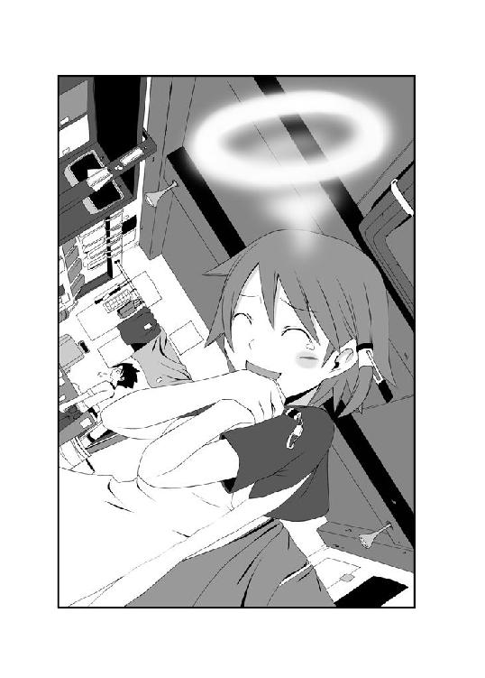
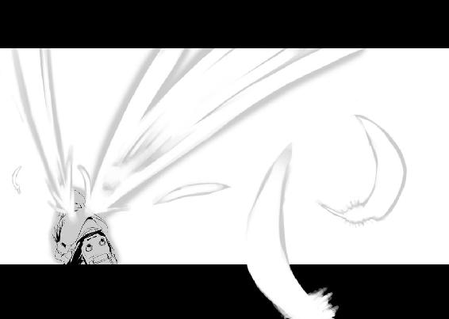

| 神様家族 (MF文庫J) | |
| 桑島 由一 & ヤスダ スズヒト | |
| メディアファクトリー (2003) | |
ＭＦ文庫Ｊ
神様家族
桑島由一
口絵・本文イラスト●ヤスダスズヒト
編集●児玉拓也
第一章 ブルマおめでとー
神山佐間太郎は、神様の息子である。
あと少しで夏休み。菊本高等学校の生徒たちは、やってくるロングバケーションに胸を躍らせて......はいなかった。
まだ午前中だというのに、七月の太陽は校舎の屋根を引き剥がすような勢いで生徒たちに暑さと無気力感を与えている。
ここ一年Ａ組の生徒たちも、先生の話なんて聞いてられまへんわとばかりに、下敷きをウチワにしてヘコヘコと自分をあおいでいた。中には女の子だというのに、スカートをめくって、その中に風を送っている生徒もいるのである。なんと羨ましいことか。
そんなサウナのような教室の中で、唯一涼しい場所があった。
一番後ろの窓際の席。そこには、開け放たれた窓から涼しい風がサワヤカサワヤカと吹いてくる。
その席に座っているのは、この物語の主人公「神山佐間太郎」である。心地よい涼風を頬に受けながら、彼はこんなことを考えていた。
なんでみんな、こんなに暑がってんのかな。
自然のクーラーによって快適に過ごしている彼にはわからないようだが、過去最高と言われたこの夏の暑さは、普段こそ真面目に授業を受けているクラスメイトたちを半分溶けかかったアイスクリームのようにヘニョヘニョとさせているのだ。
新宿駅から出ている私鉄に乗り、各駅で十分ほど進めば菊本駅に到着する。駅前のロータリーを抜け、商店街とはちょうど反対の方向へ少し南に歩いてみれば見えるはずだ。
住宅地の奥、そこは小高い丘のような土地になっている。その丘の一番高い場所に、さも「暑いッス」と言いたげな顔をして建っているのが菊本高等学校だ。
この、通称「菊高」に入学した生徒は春に「あら、見晴らしのいい場所だわね」と喜び、夏になると「なんじゃこれ直射日光ガンガンで暑いじゃねえか」と文句を言い、秋になると「そろそろこのしんどい坂道が嫌いになってきました」と弱音を吐き、冬には降り積もった雪で足をすべらせ、ゴロゴロと転がり言葉すら出ないという、そんな一年を送ることになっている。
「それじゃ、次の議題はこれだ」
ハンカチで額の汗を拭いながら、担任の教師が黒板に力いっぱいチョークをこすりつけた。黒板には、白い文字でこう書かれている。
『ブルマを廃止にするか否か』
その時、退屈そうにしていた佐間太郎の瞳が、一瞬にして光を取り戻した。今までの議題にはなんの興味も示さなかった彼が、眉をピクッと動かし、姿勢を整え、それじゃちょっと先生の話でも聞いてみましょうかと正面を向いたのだ。
退屈だなあ退屈だなあと、窓の外を眺めていた彼が、どうして一瞬にして生気を取り戻したのであろうか。
そう、答えは簡単。佐間太郎はブルマが大好きだったからである。
もともとはアメリカの女性運動家「ブルマー」さんにより考案されたブルマ。一八五〇年頃は、女性解放運動の象徴として扱われていた。しかし、現代の日本においては「あんな太ももが出るやつはけません！ 男子がジロジロ見るし！ トレパンでいいじゃないですか、トレパンで！」という女子の意見により滅多にお目にかかれなくなっている。
彼、神山佐間太郎はそんなブルマを愛していた。トレパンより全然愛していた。いや、愛していたというのは少し言いすぎかもしれない。そもそも冒頭からそんなこと書いたら、彼の品性を疑われてしまうかもしれないし。ともかく彼は、黒板に書かれた「ブルマ廃止」という文字をまじまじと見つめたのだった。
「佐間太郎、あんた変なこと考えてんじゃないでしょうね？」
その時、彼の隣に座っていた女子生徒が口を開いた。佐間太郎が座っているのは、窓の真横ではない。窓の真横には彼女の席があり、その隣が彼の席になっている。
そんなわけで彼女もこの暑さにだれることなく、涼しげな顔をしていた。
ショートカットにした髪の毛が、窓からの風にくすぐられ揺れている。ところどころが寝癖のように跳ねている頭に太陽が反射し、円形の光を浮かばせている。いわゆる、天使の輪というやつだ。
「べ、別になんも考えてないけど？ か、考えすぎじゃないかな、あははは」
佐間太郎は、あきらかになんか考えてました、むしろエロいことちょっと考えてました、というふうに答えた。
隣の女子は「それならいいけどさ」と、全然よくない顔をして前を向く。教卓では、教師がさっきの話を続けているところだ。
「えー、昨今の事情を考えるとだな、ブルマは廃止にするべきなんじゃないかと校長から話が出た。しかし、先生はブルマが好きだ。大好きだ！ むしろ愛してる！ だから絶対に廃止なんてしないぞ！ 校長がなんと言っても、廃止なんてしてやんないからな！ もし反論があるやつがいたら、かかってこい！ 力で勝負だ！ 先生、こう見えても大人だから、子供のお前らには負けないからな！ おら！ くるならこい!!」
教室は水を打ったように静まり返った。当たり前だ、担任の教師がいきなり大声でブルマに関してわめきながら、着ていた上着を脱ぎ、腕をブンブン振り回しつつ顔を真っ赤にしたら、どんな生徒でも黙ってしまうだろう。
「いねえのか！ せ、先生に反論するやつはいねえのか！ あれか、お前らのブルマに対する情熱なんてそんなもんか！ じゃあ先生からな！ 先生からブルマに関しておしゃべりしちゃいますか！ むしろブルマはいちゃいますか!!」
「キャー！ 先生がおかしくなったー!!」
教卓の前に座っていた女子生徒が悲鳴を上げた。教師が満面の笑みでズボンをおろすと、ブルマ姿だったからである。
その悲鳴とブルマ姿の男性教諭により、クラス全体が騒然とする。
「なんだー！ 先生、ブ、ブルマ大好きだぞー！ ほら、小宮山ー！ お前もはけー！」
小宮山と呼ばれた男子生徒は、ブルマ姿の教師に押さえつけられ、無理やり頭からブルマをかぶされた。パニック状態になった教室に、隣のクラスから教師が駆けつける。
「先生、どうなさいました？ おいお前ら、静かにし......うわああ！ せ、先生がブルマはいてる！ ちょ、ちょっと、どうしたんですか!!」
「いやー、生徒にですな、ブルマの素晴らしさを教えようとしたら、この有様ですよ！ あっはっはっは！」
「おい、先生を押さえろ！」
隣のクラスの教師の指示により、ブルマ先生は取り押さえられた。そして、そのまま教室の外へ引きずり出されると、ひとまず保健室へと運ばれていってしまった。
ホームルームは中止になり、自然と自習時間となる。あまりに突然の悲劇に、動揺した生徒たちは「先生、どうしちゃったんだろうね」「あれだよ、夏だしさ」「暑いから頭がね」「でも、前からちょっと変な先生だったから」「いい機会だったかもね」「あっはっはっは」と悲しみに暮れるのだった。全然悲しんでないけど。
「あんたでしょ？」
その様子を見ていた隣の席の女子が佐間太郎に言った。あんたの仕業なんでしょう？
「俺じゃねえよ！ 俺じゃねえってば！」
「じゃあ他の誰だって言うのよ？」
女子は彼に詰め寄ると、バン！ と机を叩いた。
普段から大きな瞳が、よりいっそう大きくなる。佐間太郎よりも身長は低いが、こうして問い詰められるとかなりの迫力だ。
「あんた思ったんでしょ、ブルマ廃止は嫌だなーって！」
「た、確かに、ちょっとだけ思ったけどさ......」
「ほらねーほらねー！ あんたねえ、パパさんの甘やかしっぷり知ってるでしょ！ そんなこと一瞬でも思ったら、『じゃあブルマ廃止はナシの方向で』って考えるに決まってるでしょ！」
「んなこと言っても知らねえよ！ 俺のせいじゃねえってば！」
「あんたのせいです！」
二人の言い争いを、クラスメイトは「またいつものケンカか」と冷静に見ていた。普段からこの二人は仲がいいんだか悪いんだか、ケンカが絶えないのだ。
入学当初は驚いて誰かが仲裁に入っていたが、次第にいつものことかと慣れ始め、今では殴り合いでも始まらない限り気にもしない。ちなみに殴り合いといっても、佐間太郎が一方的に彼女に叩かれるだけなのだが。
『んー、パパさんのこと、なんかゆったー？』
その時、佐間太郎と女子の頭の中にだけ、特別な声が聞こえた。それは空気の振動ではなく、直接心に響く声だ。次に、口論をしていた二人の間にホログラムのような立体映像が浮かぶ。最初は煙のような形をしていたイメージが、次第に人間の姿へと輪郭を確かにしていく。ハッキリとなった映像は、昔の漫画に出てくるようなガンコ親父の格好をしていた。モモヒキにランニング。そして腹巻。バラエティー番組のコントじゃあるまいし、いまどきこんな格好の父親がいるのであろうか。彼の顔はちゃぶ台をひっくり返しそうな厳しい表情をしていたが、それとは裏腹にくだけた調子で言葉を発した。
『やー、どもども。元気にしてるかい、佐間太郎』
『パパさん！ なんでいつもそうやって甘やかすんですか！ それじゃ、佐間太郎は立派な神様になんてなれませんよ！』
女子は口を動かさず、心で叫んだ。それは佐間太郎と、パパさんと呼ばれた人物にしか聞こえない声となって空中を泳いだ。パパさんの立体画像が二人の間に現れても、クラスメイトはまったく気にする様子はない。彼の姿は二人の間にしか見えない特別なイメージのようなものなのだ。
『だってさー、お昼寝してたら佐間太郎の声が聞こえてくるんだもん。ブルマ、あった方がいいなーって。だからパパさん、思わず使っちゃいました。奇跡っ』
『あのですね、奇跡ってのは思わず使うもんじゃないですよ！』
『ごめん、てへっ！』
『てへじゃないです！ 神様ともあろうお方が、息子の趣味で奇跡起こさないでください！ しかもブルマのために奇跡って！』
『だ、だってさー。佐間太郎がさー。ねえ、ブルマの方がいいよねえ？』
今まで聞こえないフリをしていた佐間太郎だが、そう言われて答えないわけにはいかない。彼も彼女と同じように口は動かさず、心の中でつぶやいた。
『ちょ、ちょっと思っただけだよ。オヤジがわざわざ奇跡使わなくてもいいじゃん』
『なんでー！ なんでー！ だって、ブルマーって、すんごく強い念が届いたのにー！ 嘘つくなよー！ パパさんがテンコちゃんに怒られちゃうじゃんかー！』
心に響くパパさんの声は、その慌てぶりがわかるぐらいに乱れた。テンコと呼ばれた隣の席の女子は、大きくため息を吐くと、やれやれという感じで心に声を響かせる。
『とにかくですね、あんまり佐間太郎には甘くしないでください。わかりましたか？』
『はい、パパさんわかりました』
『佐間太郎も、うかつに色々思わないこと。パパさんに届いたら、すぐ奇跡しちゃうからね。この前の雑誌懸賞のことも忘れたわけじゃないでしょう？』
テンコが言っているのは、佐間太郎がたまたま漫画雑誌の読者プレゼントを見ていた時のことだ。商品の「うまい棒六年分」を見た瞬間、彼は「ちょっと欲しい」と思ってしまった。次の瞬間には家の呼び鈴が押され、宅配業者により大量のうまい棒が運ばれてきたのだ。幸い配送ミスということで返品したが、その時もパパさんが「だって、欲しいって言うからさ......」と奇跡を起こしたことを認めた。
『でもさーテンコちゃん、そんなに言わなくてもいいじゃんか。やっぱり、願いは叶った方がいいものでしょ？』
『限度があります、限度が！ あんな大量のうまい棒、喉が渇きっぱなしになります！ 加減ってものがあるんですよ、世の中には！』
『だってパパさん神様だからわかんないもん』
『わかってくださいよ！』
『え？ 聞こえませんよ？ あれ、電波が悪いのかな』
『電波って、携帯じゃないんだから！ 悪いわけないでしょ！』
『あーあー、聞こえません、聞こえません、そんじゃーねー』
パパさんのその言葉を最後に、もう心に声は届かなくなっていた。イメージとして浮かんでいた映像も、すっかり跡形もなく消えている。
「まったく、パパさんたら......」
テンコは、もう一度大きくため息を吐いた。
神山佐間太郎は、神様の息子である。しかし彼自身に特別な能力があるわけではない。海を割ったり、雷を落としたり、干ばつに苦しむ土地に雨を降らしたり、そういった奇跡は全て、神である父親が行っている。
それならば、彼には一体なにができるのであろうか？
答えは「なにもできない」である。
なぜなら佐間太郎にとって大切なことは、ごく普通の高校生として人生を歩み、この世界を見つめ、人間を知ることだからだ。普通の人間と同じ視線で世の中をとらえ、生きる意味の本質を見抜く。そのためにわざわざ雲の上から世田谷の一軒屋に住所を変え、赤ん坊から人間として人生をシミュレートしているのだった。
人の気持ちやこの世の中を知るために毎日を送っている彼に、特別な神の力など必要はない。人類を知るには、彼らと同じ立場に立つことが重要なのである。
だがしかし、いかんせん父親の神様は息子に甘すぎた。そのため、ちょっと「これ欲しい」と思っただけで勝手に奇跡を起こしてしまう。佐間太郎とパパさんは、どんなに離れていても、心と心はつながっている。心に乱れがあると、それを察知して一方的に思考を読んでしまうのだ。
さすが神様というかなんというか、彼にプライバシーはないのだろうか。
そんなわけで佐間太郎は、今までなにかに困ったことがなかった。欲しいものがあれば手に入るし、こうなったらいいなあと思えばその通りになるからだ。いつも必ず神様に見守られ、願望は一〇〇％叶うのだった。しいて悩みを言えば、あまりにも全てが思い通りになってしまうということぐらいだ。
そんなわけで、今日も今日とて佐間太郎は平凡に学校に登校し、父親の奇跡で手に入れた風通しのいい席につき、ホームルームの時間に頬杖をつきながら窓の外なんかを見つめ、廃止となるはずのブルマが教師の混乱のうちに存続となる、いつもと同じ退屈な一日を送っているのであった。
「まったく、パパさんてば全然わかってないんだから。こんなんじゃ佐間太郎のためになんないのに......」
その日の放課後、テンコはブツブツと文句を言いながらカバンの中に教科書を詰めこんでいた。結局あの後もブルマ先生は戻ってはこず、代理の教師がやってきてこう言った。
「えー、先生は極度のストレスにより、しばらくお休みします」
このブルマ事件に、神様の奇跡が関与してるとは誰も思うまい。神様の奇跡と言えば、もっと神聖で大げさなことをイメージするはずだ。まさかブルマ廃止が嫌だからといって奇跡が起こるなど、冗談のような話だ。
「ほら佐間太郎、いくよ」
テンコが言っても、彼はむすっとしたままイスに座っている。
「なに、どうしたの？ お腹痛いの？」
子供扱いした彼女の態度に、佐間太郎はさらに不満げに顔を歪めた。テンコは、また始まったか、と思う。彼が機嫌を悪くするのは珍しいことではないのだ。
「一緒に帰りたくない」
佐間太郎はそう言うと、机に突っ伏した。まるで失恋した少女がするように、じっと黙ってなにもしゃべらない。テンコは立ち上がって彼が起き上がるのを待っていたが、仕方なくイスに座った。
「どうしたの。早く帰らないと、パパさん心配するよ」
「いいんだよ。心配さしとけば。それに、テンコと一緒に帰りたくない」
「なんで？ どして？」
「だって、一緒に帰って付き合ってると思われたら恥ずかしいじゃんけ」
「んな女の子みたいなこと言ってないの。今日はじまったことじゃないでしょ？ 誰もそんなこと思ってないって」
「思ってる。クラスの噂になってる。佐間太郎とテンコは付き合ってるんだって。だからいつも一緒に帰ってるんだって」
どうしてこんなワガママになってしまったのだろうかとテンコは考えた。しかし、そんなことは考えるまでもない。そう、パパさんだ。あの神様の甘やかしが、息子の彼をこんなふうにしてしまったのだ。
なんでも願いを叶え、なんでも望みを聞いてやる。それがパパさんにとっての愛情だった。それもひとつの愛の形であることはテンコも認める。しかし、パパさんは神様なのだ。普通の父親がやるような甘やかし方にはならない。ひとつひとつの規模が半端ではないのだ。もし佐間太郎が「ずっと夏がいい」と言えば、一年中夏にだってしかねない。そんなふうに全て思い通りにしてしまうことは、果たして彼にとっていいことなのだろうか。少なくとも、人間世界を知るためにこうして高校生をやっているうちは、悪影響しか与えないような気がする。
それにしても、甘やかしているのがパパさんだけだったらどんなに救われるだろうか。
「とにかく帰るよ、佐間太郎。またいつもみたいにワガママ言ったらブツよ！」
「う......。わかったよ、帰るよ、帰ればいいんだろ」
彼はぶっきらぼうに立ち上がると、空っぽのカバンを持ってとっとと教室から出ていってしまった。テンコは慌ててそれを追いかける。
ゲタ箱でローファーに履き替え、校庭の途中でようやく追いついた。テンコは息を荒くして抗議する。
「ちょっと、そんなに怒ることないでしょ。そもそも、なにに対して怒ってんのよ」
「別に。別になんでもない」
「あんた男の子、あたし女の子。ちょっとは歩くスピード考えてよね」
早足で歩く佐間太郎。それに駆け足で続くテンコ。彼が言うように、なにも知らない人が見たら二人は恋人に見えるかもしれない。少し不機嫌な彼氏に、必死で追いつこうする彼女。そんな二人の前に、一人の男子生徒が現れた。さしずめ彼は、恋敵といったところだろうか。
「よお、二人揃ってお帰りですかー？」
もちろん三角関係の相手ではない。彼は霧島進一。ただの佐間太郎の友達だ。
「なあ佐間太郎、ゲーセン寄ってかねえか？ 対戦台が増えたんだよ」
「本当に？ いくいく！」
「ダメっ！」
テンコは、二人の会話を大声で遮った。佐間太郎と進一は、お互いに顔を見合わせる。これもいつものことなのだ。
「なぁなぁテンコちゃん、いいじゃんよ少しぐらいさ」
「ダメです、佐間太郎は寄り道しないでちゃんと家に帰るんです」
「なに、さっきのケンカは終わったの？ もう仲直り？」
教室での様子を彼は見ていたようだ。進一は大げさな身振りで話し始めた。
「いいですかテンコさん！ いっつもいっつも真っ直ぐ帰宅じゃ味気ないよ？ そんな人生ってどんなのよ？ やっぱ男たるもの寄り道！ んで買い食い！ それに限るでしょう？ それともあれかい、テンコちゃんは佐間太郎のことを偉人にでも育てようとしてんの？ だったら無理無理、だってコイツ、いっつもボケーってしてんじゃん？」
進一はコツンと佐間太郎の頭をこづいた。テンコはそれを見て倒れそうになる。未来の神様になんてことするんだ。地獄行き決定、と心のメモに赤ペンで記した。
「偉人じゃないの、もっと偉い人になってもらうんだから。進一くんには関係ないでしょ？ ほら佐間太郎、行くよ」
彼女が佐間太郎の手を掴もうとすると、彼はサッとその手を引いた。
「うるさいなあ、いっつもいっつも命令ばっかしてさ。ちょっとゲームセンター寄るぐらいいいじゃんか」
「よくないでしょー！ ゲームセンターって言えば悪い人のアジトです！ あんな所に行って、カツアゲとかバタフライナイフとか、そういう危険な体験したら困るでしょが！」
進一は、テンコの過保護っぷりに頭を抱えた。もちろんそれは今日始まったことではない。いつもいつも、彼女は佐間太郎を正しい道に導こうとするのだ。
しかし、ゲームセンターぐらいでそこまで言わなくてもいいのではないだろうか。悪い人のアジトだなんて、偏見以外のなんでもない。もちろん中には悪い人だっているが、そんなのはどこにだっているものだ。
「あのさテンコちゃん、そういう生き方、肩こると思うよ？」
「そうだよ、そもそもテンコに命令される覚えはないね」
佐間太郎は強気に出る。確かに彼女に命令する権利は存在しない。しかし、彼を守るのがテンコの義務なのだ。
「あんた、そんなこと言ってるとパパさんに怒ってもらうからね」
「別にオヤジなんて怖くないね。ただの親バカじゃんよ」
「そんなこと言うもんじゃないでしょ！ パパさんはあんたのことを愛してんだから！」
テンコが叫ぶと、頭の上にプシュッと湯気が浮かんだ。それは機関車の出す煙のように、輪の形になって消える。
「テンコちゃん、今、頭から湯気でなかった？」
「出てません！ いいから行くの、佐間太郎、ワガママ言わないんだからね！」
その時、背後から甘い女性の声が空気に乗って漂ってきた。
「ちょっとちょっと、少しうるさくないかしら？」
その声を聞き、二人は振り返る。
焼き菓子の香りを思わせるような優しい声は、おだやかな調子で続けた。
「テンコ、佐間太郎。もうちょっと静かにしないといけないわよ？」
そう言って彼女は長い髪をかきあげると、スレンダーな体に似合わない大きな胸を揺らして笑った。進一は眩いばかりの笑顔を見せて、だらしなく口を半開きにする。
「姉ちゃんは関係ないだろ」
しかし佐間太郎はそう言うと、一人でさっさと歩き出してしまった。テンコは彼を追えばいいのか、それともこの場にとどまろうかとオロオロしている。
「いいのよ、行ってあげて。あの子、かまって欲しいだけなんだから」
「は、はい！ 美佐さん、すみません！」
テンコは美佐と呼ばれた女子生徒を置いて、走り去ってしまった。残った進一は、彼女と視線も合わせられないほどに骨抜きになっている。
「あ、美佐先輩、どうもです。俺みたいな人間に声をかけて頂いて、本当になんと言っていいやら......」
「あら、なに言ってるのよ。いつも佐間太郎と遊んでくれて、ありがとうね」
美佐は優雅に頭を下げる。普通にしているだけなのだが、行動のひとつひとつから気品が漂ってくるようだ。進一は、こんな美人が、あの佐間太郎の姉だということが信じられなかった。
「そうだ、今日は急いで帰らなくちゃいけないんだった。ごきげんよう」
そう言って美佐は、進一の前から去っていった。ああ、慌てて走る姿も絵になる。彼女が専属のモデルだったら、俺は一流の絵描きになれるのに......。
彼は美術の成績は最悪に近かったが、美佐の姿を描いてみたいと思わずにはいられなかった。彼女の魅力が、進一を妙にロマンチックな妄想へと引き込むのだった。
その頃、テンコと佐間太郎は黙ったまま家に向かって歩いていた。佐間太郎は、ちょっとした遊びでさえ許してくれない彼女の強引さにあきあきしていた。
確かに自分を守るのが役目なのだろうが、ここまで自由を奪われては息苦しいだけだというのに。そんなこともわからないのだろうか？ 彼は、なにも言わずに歩き続ける彼女の姿を見ながらそんなこと考えた。
佐間太郎とテンコは同じ日の同じ時間に、同じ病院で生まれた。正確に言うと、テンコは生まれたわけではなく、病院の前に捨てられていたのだ。もちろんそれは神様であるパパさんが仕組んだことである。パパさんはテンコを自分の家庭に受け入れると、娘のようにして育てた。佐間太郎と同じ幼稚園に、同じ小学校に、同じ中学校に通わせ、同じクラスになるように運命を操作した。
佐間太郎とテンコは寝る時以外はいつも一緒だ。もちろん最近は違うが、子供の頃はトイレやお風呂だって、佐間太郎にテンコがついて回っていたくらいだ。二人は、常に身を寄せ合っていなくてはならないようにできている。もちろんそれには理由があった。
なにを隠そう、テンコは天使なのだ。
佐間太郎の身になにかあってはいけないと、常にボディーガードをするために生まれてきた存在が彼女だった。
そんなわけで、こうして高校生になった今でもテンコは佐間太郎と同じクラスになり、二四時間彼を監視している。傍から見れば、仲良しの幼馴染に見えるだろう。しかし、本当は巧妙な計算の上に成り立っている関係なのだ。
「それにしても、天使だからってテンコって、オヤジも適当だよなぁ......」
「なんか言った？」
ボソッと言ったはずなのに、彼女は敏感に反応して振り返った。なぜかテンコは怒っているようである。さっきまで佐間太郎が怒っていたのに、今ではテンコが不機嫌でいる。二人の関係はシーソーのようなもので、どちらかの機嫌がいいと片方が悪くなるようになっているらしい。
「あのさ、テンコ」
「なに？」
「ごめん」
「別に」
短い会話だが、これで仲直りは成立した。そもそも、どうして佐間太郎が謝っているのかわからないが、最後はいつもこうなってしまう。ガミガミとうるさい彼女に腹を立て、佐間太郎は不機嫌になる。そんな彼を見てテンコは逆ギレをして怒る。そして最後は佐間太郎が折れるのだ。
まったく、言うこときかないからってそんなに怒ることないじゃないか。
しかし、テンコが不機嫌でいる理由は、佐間太郎が考えているより少し深い。
確かに彼女は佐間太郎を監視するために存在している。だからと言って、彼の息苦しさがわからないわけではない。
あれもダメ、これもダメ、自由にしていいことなどほとんどないのだ。次期神様候補だから、当然危険なことはほぼ禁止されている。きちんと勉強をすることを義務づけられているし、世界情勢の把握などもしなければならない。
厳しい立場にいるはずの彼だが、パパさんは佐間太郎にめちゃくちゃ甘い。なんでも願いを叶えてしまうし、禁止されていることだって本当にやりたければ許してしまう。かといってテンコがそれを見過ごすわけにはいかない。佐間太郎は将来の神様だからあんまり乱暴にもできないし（これでも彼女は彼を尊重しているつもりなのである）、でも禁止事項は禁止なのだし、そもそも神様になるために人間のことをよく知らなくちゃいけない時期でもあるのだから、色々と遊んだりした方がいいんじゃないのかなあとも思う。まったく、どれを優先すればいいのかテンコも困っているところだ。
「なんで黙ってんだよ」
佐間太郎に言われて、テンコはハッとした。二人はもう神山家の前に到着していた。彼女はついボンヤリして、玄関の前に突っ立っていたのだ。
「なんでもない。怒ってもないし、なんでもない。本当になんでもない」
菊本駅から歩いて十分ほどの住宅地、そこにある小さな一軒屋。それが佐間太郎の家だった。築二五年にしてはそこそこ手入れの行き届いた、まぁまぁきれいな平凡な二階建て。特徴がないのが特徴ともいえる玄関のドアに手をかけ、テンコは扉をゆっくりと開いた。すると、そこには信じられない光景が広がっていた。
ブルマを着た女性が三人、なぜかボンボン（あのチアリーダーが持ってるやつだ）を持って立っていたのである。
「ブルマおめでとー！」
三人は声を揃えて、まったく意味のわからない言葉を発した。ブルマ、おめでとう。なにがおめでたいのだ。佐間太郎は、呆気に取られて持っていたカバンを地面に落とした。混乱して状況を理解できなかったテンコだが、その三人が何者なのか、ようやくわかった。彼女たちは、佐間太郎の母親と姉と妹だ。自分たちより後に学校を出たはずの美佐も、満面の笑みで立っている。もちろんブルマ姿だ。その事実に気づいた時、テンコの頭から、シュシュシュ～と弱々しく湯気が上がった。それはさっきと同じように、輪になって消えた。
「で、どういうことですか？」
神山家の居間。テーブルを囲んでの家族会議が行われている。席に座っているのはテンコと、あのブルマ姿の三人だ。佐間太郎の姿は見えない。
「だってさ、パパが佐間太郎ちゃんがブルマ好きだって言うから、はいたら喜ぶんじゃないかなぁ～って」
「実の母親がブルマはいてんの見て、誰が喜ぶんですか！」
ドスン、とテンコがテーブルを叩く。母親は肩をすくめ、ヒッと小さく呻いた。
「いいですか、ママさんは女神なんですから、もうちょっと自覚もってください。すすんでブルマはく女神だなんて、聞いたことないです！ そもそも、いくつですか！」
「やだ、女性に年を聞くなんてダメよん？」
「そういう問題じゃないでしょ！」
もう一度、テンコがテーブルを叩いた。普通は母親ほどの年齢の女性がブルマをはいても似合うわけがない。しかし、彼女は女神ならではの若さと美しさで、ブルマを完全にはきこなしていた。
そう、佐間太郎の母親、つまり神様の奥さんは女神様なのであった。腰まである長い髪の毛をサラサラとなびかせ、なぜか得意気に胸を張っている。体操着には丁寧に大きく「ビーナス」とマジックで書いてあった。それが彼女の名前だ。
「まぁまぁ、そんなに怒ることないじゃん。テンコはちょっと真面目すぎんのよね」
そう言ったのは、佐間太郎の姉の美佐である。美佐も同じように名前が書かれた体操着とブルマを着用していた。学校で進一と話していた時とは、話し方がまるで違う。
「美佐さんは、学校ではちゃんとしてるのに、どうして家だとそんななんですか！」
「そんなってなによ、そんなって！ リラックスじゃないの！ もー！」
そう言った後、彼女はブエックショイ！ と大きなクシャミをした。表裏のある人物である。彼女は佐間太郎と同じ学校に通っている、高校二年生だ。テンコと佐間太郎は一年生だから、先輩にあたることになる。年齢的にはブルマをはいていても問題ないのだが、わざわざ弟をそんな姿で歓迎しなくてもいいのではないか。そもそも、自分たちの方が早く家に着くはずなのに、どうして先回りした上にブルマに着替えている時間があるのだ。そうか、パパさんか......。
「落ち着きなさいよ、テンコってば。にっひっひっひっ」
美佐が大口を開けて笑うと、母親のビーナスよりも少し短くしたセミロングの髪の毛が、夕日を浴びて七色に光った。なんて幻想的なのだろう。
「そうよテンコちゃん、ママさんはね、佐間太郎ちゃんのことを思ってブルマなのよ？ 趣味とかじゃないのよ？」
「テンコもはいてあげればいいじゃん。なあ、メメ」
メメと呼ばれたのは、さっきから黙っているもう一人のブルマ少女である。彼女は佐間太郎の妹で、小学五年生だ。彼女の性格からして、二人にそそのかされてブルマをはいているのであろう。メメは、なにごとも積極的に行動しないタイプなのだ。クールと言えばクールだし、面倒くさがりといえば面倒くさがりだ。というか面倒くさがりです。
「ママとお姉ちゃんがはけって言うからはいただけ」
やっぱりか......。テンコはメメに、母親のような口調で訴える。
「いい、いっつも言ってるでしょ、この二人の言うことは聞いちゃダメなの」
「......うん」
メメは興味なさそうに答えた。彼女はいつもなにを考えているのかわからない。
「別にいーじゃん、メメだって嬉しそうにしてるんだしさ」
「嬉しそうにしてません！」
「あはは、テンコ、湯気がめちゃめちゃ出てるよ」
「出てません！」
美佐の言葉を否定しているが、彼女の頭からはプシュプシュと湯気が出ている。
「美佐さんは女神様候補なんですから、こういう頭の悪いことしないでください！ メメちゃんだって将来は立派な女神様になるんでしょう？ だから、もっと自覚を持つようにしなくちゃいけないんだからね」
「......わかった。二人の言うことは、あんま聞かないようにする」
「そうです、わかればいいんです、わかれば。と、ところでパパさんは？」
テンコが辺りを見回すと、柱の陰に隠れているパパさんを見つけた。どうして出てこないのだろう。
「もしや......」
彼女の頭の中に嫌な予感が広がった。
「パパさん......もしかして......」
そう言われたパパさんは、顔を少し赤らめて、かわいくつぶやいた。
「......パパさんもはいちゃった」
ブシュー！ と、ものすごい勢いでテンコの頭から湯気が噴出する。それを見たメメは、そういえばという感じで質問した。
「パパの言うことは？」
「一番聞いちゃいけません!!」
テンコは力の限り叫ぶのだった。
佐間太郎は自分の部屋にこもったまま、外に出ていない。
「オヤジのやつ、オフクロや姉ちゃんに......それにメメにまで言わなくてもいいのに」
自分がブルマ好きだということをバラされるどころか、あのような格好で出迎えを受けるとは。ほのぼのした家族だと言えばそうだが、ちょっと普通じゃないような気がする。この家でまともなのはテンコだけだ。彼女だけはしっかりしていて、あまり抜けたところがない。やっぱり、あいつだけ神様系じゃなくて天使だからだろうか。
「佐間太郎ちゃん、ゴハンよー」
ドアの向こうからママさんの声が聞こえる。佐間太郎は聞こえていたが、あえて返事はしない。
「佐間太郎ちゃん、ゴハンだってばー！ もうブルマはいてないから安心なさいー！」
そんなこと大声で言わなくてもいいじゃないか、彼は学習机に突っ伏す。
「ほら佐間太郎ちゃん、どしたの？ イジけちゃったの？」
不意に心の中に声が届いてくる。昼間、パパさんがやったのと同じ調子だ。この能力は神山家の全員にそなわっている。つまり、神様の家族だけが持つ特別な力だ。
「おい、今日はお前の好きなスキヤキだぞ？ 食べないなら先に食べちゃうからなー」
今度は姉の美佐だ。部屋にこもったところで、彼にプライバシーなど存在しない。
「佐間太郎、冷めるとうまくないぞー。アツアツなうちにお食べよー」
パパさんが続いて声を届かせる。もし佐間太郎が彼のブルマ姿を見ていたら、ショックで立ち直れなくなっていたかもしれない。
「お兄ちゃん、早くおいで......って、テンコが言ってるよ」
最後にメメが言った。
「あ、テンコからってことは言わなくてもよかったらしいから、さっきのなしで」
冷静につけたすところがメメらしい。それでも黙っていると、誰の声も心に響かなくなった。きっとあきらめたのだろう。佐間太郎は空腹を感じながらも、今日は部屋から出ないことにしよう、と決めた。
「そうだ......。日記、日記」
彼は机の引き出しから日記帳を出して開く。それは神様候補に義務づけられる毎日の日課だった。しかし、パラパラとめくっても中身はほとんど白紙に近い。日記を書くことをサボっているからではない、書くことがなにもないからだ。その証拠に、日記帳には日付だけがしっかりと書いてある。佐間太郎は今日のページにくると、日付をまず記した。
そして、なにがあったのかを考える。ブルマ廃止について考えたら、廃止が中止になった。いつもと同じ、嫌だなと思うとそれがなくなる。昔からのことだ、いつもパパさんが願いを叶えてくれる。ハプニングがあってもそれは全て解消される。なにか変わったことなど起こったためしがない。困難も、不可能なことも、全てパパさんの奇跡によって乗り越えてしまう。
「面白いこと、なんもないなぁ......」
日記帳を眺めながら、彼はつぶやいた。そういえば、進一がアルバイトを始めたと言っていた。校則では禁止されているから、学校に隠れてのことだ。もし佐間太郎がそんなことを始めたら、テンコが黙ってはいないだろう。実際、中学の時に彼に誘われてアルバイトをしようとしたことがある。その時も彼女は顔を真っ赤にして「お金なんていらないでしょ、神様の息子なんだから！」ともっともなことを言った。
別にお金が欲しかったわけではないのだ、隠れてこっそりとなにかをするとか、そういうことをしてみたかったのだ。あの時は反対されてイジけてしまったが、社会勉強のためだと言えばテンコも反対しなかったかもしれない。今度、もしなにかあったら色々と反論してみよう、そう彼は考えた。
それにしても、こんなことで将来本当に神様になれるのだろうか。こうして人間として生きていることも、全て形だけのことで意味なんてないように思える。
もっと自由に生きて、辛いことや悲しいことも体験した方がいいのではないだろうか。心がドキドキして、痛くて、悲しくて、だけど嬉しいこと。幸せという感じも味わったことがないから、一度はその気持ちを知ってみたいものだ。そんな複雑な感情になんて、どうすればなれるのかわからない。
「恋......か？」
佐間太郎はつぶやいて、すぐにその言葉を取り消した。恋なんて自分にできるわけがない、そう知っているからだ。彼の家には三人の女神がいる。彼女たちは、女神なだけに特別に美人だ。人間とは比べ物にならないぐらい美しい。そもそも人間とは根本的に違うのだ。枝毛なんてないし、肌も初雪のように美しい。お風呂に入らなくても臭くなんてならないし（信じられないだろうけど、それは本当だ。といっても、彼女たちが風呂に入らないわけではない。美佐だけは面倒がって三日に一度ぐらいしか入浴しないが）、笑顔を見せれば歯が光ったりもする。根本的にモテるために生まれてきたようなものなのだ。小学生のメメだって、ときおり信じられないほどに魅力的な表情をする。もちろん自分の家族だから特別な感情を持ったりはしないが、その美しさを理解することはできる。
女神ではない天使のテンコだって、人間とは違う魅力を持っている。彼女の場合はきれいというよりは、かわいらしい感じだ。普段は怒っていることが多いが、たまに笑顔を見ると佐間太郎まで思わず笑顔になってしまうほどだ。
それに比べて人間はどうだろう。まず化粧をする。それが気に入らない。生まれたままのその姿でいればいいものを、粉を塗り、香水を吹きつけ、いかに自分が美しいかを誇示しようとする。中学まではそれほどでもなかったが、高校に入ってから多くの女子がメイクをするようになった。佐間太郎の家族は誰も化粧をしていないから（そんなことしなくても十分美しいのだ）、まずそのにおいをかいで嫌になってしまった。化粧品独特の、妙な香り。
「やべ、また暗いことばっか考えてしまった」
佐間太郎は思考をリセットするようにして、もう一度日記帳を見つめた。しかし、やはりなにも書くことは思い浮かばない。きっと明日も同じなのだろう。同じようになんの問題もなく、全て思い通りの日々が続き、そして大人になって死んでいく。死んだら神様になって、この世を治めるのだ。それって面白いか？ それって意味あんのか？ 彼はまたしても懐疑的になってしまった考えにため息をついた。
「仕方ない、寝るか」
考えが悪い方向にいくのは、空腹のせいもあるだろう。それを忘れるには寝るしかない。彼はベッドに寝転がると、着替えもせずに寝ることにした。
「なに、パジャマ着ないの？」
不意に聞こえた声に驚き、佐間太郎はドアの方を見た。そこには美佐がニヤニヤとした顔をして立っている。
「な、なんだよ姉ちゃん！ 部屋入る時はノックしろって言ってるだろ！」
「入ってねえもん。ドア開けて見てるだけだもん」
「覗きか！ 趣味悪いぞ！」
「うっせ、弟よ」
そう言うと彼女はズカズカと部屋の中に入ってきて、今まで佐間太郎が座っていたイスに腰をおろした。
「フー、どっこいしょ」
少々年寄りくさい言葉を吐きながら、美佐は持っていたタオルで頭をゴシゴシと拭く。よく見れば彼女は、タンクトップにパンツしかはいていなかった。タンクトップの下はブラジャーさえもつけていないようだ。肩からかかったタオルで胸の部分は隠されているが、それがなかったら佐間太郎は目をそむけてしまっているかもしれない。父親が下着姿で家の中を歩き、家族の反感を買うという話は聞いたことがあるが、年頃の女性がするなんて滅多にないだろう。しかし、実はこれは珍しいことではない。彼女はお風呂上りにかかわらず、いつも下着同然の姿で家の中を歩き回っているのだ。佐間太郎は目のやり場に困るが、視線を逸らせたら負けだと思い、なんでもないように振舞うことにしている。もし顔を赤くでもしたら「なんだ？ お前、実の姉ちゃんのこと見て興奮してんのか？」と、わざと胸を押し当ててくるだろう。美佐の胸は母親のビーナスに似て、Ａから数えるよりＺから数えた方が早いのではないかと思うほどに大きい。そんなものを押し付けられたら、さすがに家族と言えども思春期の佐間太郎は困ってしまう。
「なに？ 姉ちゃんの胸、そんなに好き？」
「好きじゃねえよ！ 見てねえし！ それにここは俺の部屋だ！ 出てけ！」
「なにー、元気そうじゃんか。心配して損した」
彼女はそう言ってケラケラと笑った。まるで心配なんてしていないようだ。
「まあいいや。腹減ったらキッチンにキンピラあるから、チンして食べな」
「スキヤキじゃなかったのかよ！」
「え？ みんな食っちゃったよ。だって来ないのが悪いんじゃん。んじゃね」
美佐がウインクすると、瞳から小さな星が飛び出た。まるで少女漫画のような演出だが、女神だからこそできる芸当である。なにもできない佐間太郎と違って、女神候補の彼女たちはこういった細かいことができるのだ。ちなみに、飛び出た星はそのままの形で床に転がり、いつまで経っても消えなかった。
「こら！ 星、拾ってけよ！」
普通に使う場合は、時間が経てば消えるように出すものだ。しかし美佐はわざと、消えないで残るようにしたのだ。踏んだらきっと、画鋲のように痛いだろう。佐間太郎はブツブツ言いながらそれをつまんでゴミ箱に捨てた。
「もしかして、心配してんのかな......」
佐間太郎はそうつぶやくと、もう一度ベッドに寝転んだ。しかし、しばらく考えた後に、パジャマに着替えて寝ることにした。
妙な温かさで目が覚めた。寝返りを打った途端、お湯を入れた水風船を掴んだような感触があったからだ。薄暗い部屋の中で、これはなんだろうと目をこする。
「ダメ、パパん。佐間太郎ちゃんが見てるでしょ......」
ママさんだった。佐間太郎は声を一切出さずに叫ぶという、最大級の驚愕を味わった。なぜ息子の部屋に母親がいるのか。それよりも、なんで一緒のベッドに寝てるのか。んなことどうでもいーが、なんで裸なのでしょう。彼は素早くベッドから飛び出すと、電気を点けて怒鳴った。
「こら！ オフクロ！ 部屋、間違ってるってば！」
どうやら、これも珍しいことではないらしい。寝ぼけたママさんは、トイレに起きた後、夫婦の寝室と間違えて彼の部屋にやってきたのだ。間違えたといっても、佐間太郎の部屋は二階、二人の部屋は一階である。どうすれば寝ぼけたまま階段をのぼって、同じく二階にあるテンコや女神姉妹の部屋ではなく彼の部屋に辿り着けるのだろうか。
「んんぅ......。あれ？ 佐間太郎ちゃん、どうしたの？」
色っぽく伸びをしながら、ママさんは言った。どうしたのって、あんたそれわざとじゃないのですか。
「オフクロ、いつも言ってんだろ、あんたの部屋は一階だ！ なんでこっちくんの！」
「え？ なんでかしら？ 佐間太郎ちゃんの部屋、ママと風水的に相性がいいのかも」
「女神が風水信じんな！」
「もう、わかったわよ。小さい頃はママさんのおっぱいに吸い付いてたのに、大きくなったらこれだもんね。冷たいもんだわ」
そう言いながら無防備にベッドから起き上がるママさん。当然、なにも着ていない。
「こらこら！ 服着ろ、服！」
「だって佐間太郎ちゃんの部屋にママさんのお洋服ないもん」
「じゃあ、毛布でいいから持ってけ！」
佐間太郎はクローゼットの中から毛布を取り出すと、ママさんに投げつけた。
ママさんはそれを体に巻きつけ、まるで絵画の中に出てくる女神のような姿で彼の前を横切る。
「あ、おっぱい飲みたくなったら、すぐママさんに言うのよ？」
「言わねえよ！」
枕を投げつけると、大げさに痛がって彼女は自分の部屋へと戻っていった。
ママさんがいなくなると、急に空腹感が襲ってきた。佐間太郎は彼女が部屋まで戻ったであろう時から、さらに十分ほど置いて一階にある居間へと降りていった。
電気を点けると、テーブルの上にはキンピラとゴハンが置いてあった。佐間太郎がそれをレンジに入れようとすると、冷蔵庫に貼り紙がしてあることに気づいた。
「スキヤキ、冷蔵庫の中にちょっと入ってます。みんなは食べちゃったけど、あたしはお兄ちゃんのぶんを残しておいてあげました。えらいね。お肉ないけど。―メメ―」
肉のないスキヤキなんて、食べる気もしない。しかし佐間太郎は、彼女の好意に甘えてネギだけのスキヤキを温めてから味わった。
食欲が満たされると、今度は睡魔が襲ってくる。窓の外を見れば、紫色に街が染まっていた。もうすぐ陽が昇るのだろう。あまり眠る時間がなさそうだ。数時間後の学校のことを考えて彼は憂鬱な気分になった。授業中に居眠りでもしたら、テンコに怒られるだろうな。食器を流し台に移動させ、そのまま部屋に戻ろうとする。しかし、思いとどまって皿を洗うことにした。慣れない食器洗いをしていると、窓からの光により居間の中がオレンジ色に染まった。陽が昇ったのだ。食器洗いを終え、一息ついて振り返ると、明るくなった居間の隅に、毛布に包まったテンコを見つけた。彼女は体育座りのような姿勢で、膝を抱えたまま壁によりかかり、寝息を立てている。
「なんでこいつ、こんなとこで寝てんだ？」
近づいて、足で軽く蹴ってみた。しかし、反応はない。熟睡しているようだ。
「その毛布、オフクロに渡したやつじゃねえかよ」
ゲシゲシ、ともう一度蹴ってみる。すると、なぜか彼女はニヘヘと笑った。
「う。笑った。なんで？」
「ん......佐間太郎......お腹いっぱいになった？」
テンコは寝言を漏らした。そして、照れちゃいますね、という感じで笑う。佐間太郎はジーッと彼女の顔を見つめた。もしかして、自分のために起きて待っていてくれたのだろうか。ひょっとして、お腹を空かせてやってきた佐間太郎のために、キンピラをチンしたり、食器を洗ってくれようとしていたのではないだろうか。
「だとしたら......」
佐間太郎は、彼女の寝顔を見ながらつぶやいた。
「なんて使えないやつだ。俺がくるまで起きてらんないなんて......」
「使えないとか言わないでよー!!」
不意に大声を出したテンコに、佐間太郎は驚いてひっくり返った。ガコン、という大きな音がして、テーブルに頭をぶつけた。
「ひひひひ、ざまあ、ない」
全て寝言である。さすが天使。あんま関係ないけど。
「なんだよちくしょう。覚えてやがれ」
彼はそう言うと、ヒリヒリと痛む頭を撫でながら部屋へと戻っていった。
佐間太郎が居間のドアを閉める音が小さく聞こえると、テンコの頭からプシュッと静かに湯気が浮かんだ。
第二章 佐間太郎初恋モーレツ大作戦
神山佐間太郎は神様の息子であるが、寝坊をすることも珍しくはない。
例えば、母親が全裸でベッドに入ってきて、むにゃむにゃあっはんと胸を押し付けてきた日の朝は決まってそうだ。
ところが神様の息子に寝坊は許されない。ジリリと鳴る目覚まし時計のスイッチを止め、二度寝しようとすると邪魔が入る。
「はいはい、朝ですよー、朝ですよー」
カンカンカンとオタマでフライパンを打ちつけるという、いつの時代のラブコメだお前はという感じで部屋に入ってきたのはテンコだ。
彼女は制服の上から、エプロンを着ていた。テンコは持っていたフライパンを乱暴に放り投げると、そのエプロンで汚れてもいない手をゴシゴシと拭いた。落ち着かない時の、テンコの癖である。
天使の彼女は、神山家の掃除や洗濯、そして料理もこなしているのだ。昨晩のスキヤキは珍しくママさんが作ったけれど、それは例外中の例外である。いつもはテンコが家族全員のバラバラなリクエストに頭を抱えながら料理を作っている。
ちなみに、どうして昨晩ママさんがスキヤキを作ったかというと、「佐間太郎ちゃんのブルマ祝いだからよ！」だそうである。なにがめでたいんだかサッパリわからないが。
「うるせえな！ 起きるってば、起きるよ！」
佐間太郎はベッドから飛び起きると、テンコをうらめしそうに睨みつめた。昨晩作ったコブに、カンカンという金属音が響いて痛いのだ。うるさくすんなよ、と彼は頭をさすった。
「なに、どしたの、ケガ？」
彼女は頭をさすっている佐間太郎に近づくと、なんの容赦もなく「コン！」とイイ音を立てて頭をオタマで叩いた。
「だいだー!!」
「代打？」
あいたー！ と言いたかったのだろう。それぐらいわかってやれ、テンコ。
「なんで叩くんだよ！ 神様の息子は大事にしなくちゃいけないんじゃなかったのか！」
「ンフフ！ 今日は特別なんです！」
テンコは本日、とてもゴキゲンな朝を迎えていたのだった。
昨日の夜、彼女はキッチンの壁にもたれ、お腹を空かせてやってくるであろう佐間太郎のことを一晩中待っていたのだ。しかし、彼女が起きている間に彼は姿を現さなかった。
しかし、睡魔に負けてしまった彼女が目を覚ますと、温かい毛布が体にかかっていたのだ。
その毛布は佐間太郎の物だった。いつもテンコが洗濯をしている彼の毛布が、自分の体を包んでいたのだ。彼女はその柔らかさを、温かさを感じながら朝を迎えた。
きっと佐間太郎は、自分を待っている途中に寝てしまったテンコを発見したが、照れくさくて声がかけられなかったのだろう。だから、お礼の代わりとして自分の部屋から毛布を持ってきて、そっとかけていってくれたのだろう。彼女はそんなふうに考えた。
目が覚め、自分を優しく抱きしめるように包んでいる毛布を見た時、テンコは不思議な胸の高鳴りを感じた。つまり、柄にもなくドキドキしてしまったのである。
なんだ、あいつも結構いいとこあるじゃん、と毛布のはじっこをつまみながら思った。それを素直に言うのは恥ずかしくて、ついつい照れ隠しにオタマで頭を叩いたりしてしまってたのだ。
しかし、現実は違う。毛布をかけたのはママさんである。
昨晩、佐間太郎から毛布を受け取ったママさんは、寝ぼけたままキッチンで水を飲み、邪魔な毛布を投げ捨てて寝室へ戻った。毛布は偶然にもテンコの頭にかぶさり、彼女は寝ぼけながら無意識でそれを体に巻きつけたのである。彼女は、それを佐間太郎が優しさでしてくれたと思い込んでいるのだ。ああ、なんてこった。
「おはよー、テンコちゃんゴハンできてるー？」
階段の下から、昨日のことをまるで覚えていないママさんの声が聞こえる。テンコは返事をすると、急いで一階へと向かった。しかし途中で思いとどまり、佐間太郎の部屋に引き返すと、あえて部屋の隅っこなどを見ながら彼に言った。
「あのさ、佐間太郎」
「ん？ なんだよ？」
まだ半分寝ている頭で、佐間太郎は彼女の方を振り返る。テンコは目を合わせていないくせに、まるですぐ近くで見つめ合っているように顔を赤くした。
「さんきゅ、ネ」
そしてドタドタと派手な音を立てて階段を降りていった。佐間太郎は、不意に投げかけられた言葉の意味がわからず、頭の中を「？」でいっぱいにした。そして、ずいぶんと長く考えた後に、ポツリとこうつぶやいたのだった。
「......なにが？」
そりゃそうだ、ネ。
朝食を急いで済ませ、佐間太郎とテンコはダッシュで家を出ようとする。美佐やメメは、一足先に家を出ていた。佐間太郎の寝坊のせいで、いつもテンコは遅刻ギリギリになってしまうのだ。
玄関の扉を開けると、キッチンからママさんが慌てて走ってきて、佐間太郎の制服のすそを掴んだ。
「ちょっと佐間太郎ちゃん、忘れ物、忘れ物！」
「え？ なんか忘れたっけ？」
「なに！ いってらっしゃいのチューでしょ？ はい、唇だして！」
ママさんはまったく躊躇することなく唇を突き出し、「カモン！」の心意気で目をつむった。自分の母親とはいえ、かりにも女神である。美しく透き通った肌の彼女が、目を閉じて顔を近づけてくると、反応したくなくても胸の鼓動が早くなるのがわかる。
しかし待て、いかんせんオフクロだ。自分のオフクロにドキドキするなんておかしいのだ。いくら女神だといっても、母ちゃん相手のトキメキは、人間の高校生として許されるわけがない。
「オフクロ、もう俺も大人だからチューはできねえ！ それに、なんで唇なんだよ！」
「いいじゃない、家族愛って素敵だとママさん思う。佐間太郎ちゃんも思って！」
そう言いながら、飛びつくように強引に抱きついてくるママさん。薄い洋服の生地の向こうから、ベッドで味わった極上の柔らかさが佐間太郎を襲う。高級菓子店のプリンのように、それはプルプルと彼の肘に押し付けられるのだった。
「押し付けるな！ それでも母親か！」
佐間太郎は甘い誘惑を押しのけ、ママさんを体から離す。すると彼女は、柱の陰に体を半分だけ隠し、腰をクネらせながらつぶやいた。
「あーあ、小さい頃はママのこと大好きだよって言ってくれたのになー。もう、そういうのないんだ。寂しいなあ、ママさん」
「うるせえなあ！ 今から学校なんだから邪魔すんなよ」
「でも大丈夫よ、気持ちこもってなくても平気だから！ ママさん形だけで満足できる女だからね！ ほら、ちょっとでいいから、口かしてみなさい！ 上唇だけでいいから！」
「わあああ！ い、いってきます！」
転がるようにして佐間太郎は玄関から走り出した。家の前まで出ると、テンコが退屈そうにローファーのつま先で地面をホジホジとしていた。地面にできた穴の深さが、彼女のイライラを表している。推定三センチ。
「もー、なにしてんのよ。遅れちゃうでしょ！」
「俺のせいか？ 違うだろ、今のはさ」
「毎朝のことなんだから、覚悟して、チュッってしちゃえばいいのよ、チュッって」
「しねえよ！ なんでオフクロ相手にそんなこと！」
そうでもしなくちゃ、いっつも遅刻でしょう、彼女はそう言って唇を尖らせた。
「大丈夫大丈夫、遅れそうになってもオヤジの奇跡でなんとかなるから」
「なによ！ あんた奇跡ばっかに頼るの嫌なんじゃないの!?」
「でも眠い時に走るよりマシ」
「きぃー！ なんて適当なやつ！」
二人の通う菊高の制服は、男子は詰襟、女子はセーラー服である。今は夏だから、佐間太郎は白いシャツにズボンだけという姿だ。テンコは薄手になったセーラー服をバタバタと揺らし、「適当なやつ！ 適当なやつ！」と走りながらボヤいている。
「今日はこっちから行こう、遅れない気がする」
そう言って佐間太郎は走り出した。テンコは仕方なくその後を追う。
「おおう？ どうした、遅刻かい？」
二人が走っているところに声をかけてきたのは、寿司屋の出前、カンちゃんであった。カンちゃんは近所の寿司屋の見習いで、カブと呼ばれるバイクに乗って毎日出前をしている。
ママさんが「お寿司食べたい」と言うと、テンコはカンちゃんの寿司屋に出前を取るので、神山家との関係はお得意さんというところだ。
「カンちゃん、いいトコにきた！ 学校まで乗せてって！」
佐間太郎は返事も聞かずに、カンちゃんの真後ろ、荷台の上に飛び乗った。
「ダメだよ、お前、二人乗り禁止だよ？ わかってんの？ 警察に見つかったら怒られるの俺だよ？」
「大丈夫だってば！ 静かに走ればバレないって！ ほら、テンコも乗れ！」
テンコはブツクサと文句を言っていたが、カンちゃんが観念してアクセルを吹かすと、置いていかれては困るとばかりに佐間太郎の後ろにしがみついた。五〇㏄の小さなバイクに三人乗りは、さすがに無理がある。カンちゃんのカブはヨロヨロと走り出した。
「お二人さん、見つかっても知らないよ。怒られるのお前らだからな」
「いいからいいから、ぶっ飛ばしてください！」
テンコは一番後ろで黙り込む。まったく、都合のいい時だけパパさんのことを頼りにするんだから。
「んじゃ、いっちょ飛ばすか！」
カンちゃんがアクセルを全開にした時、目の前の角から、自転車に乗った警察官がやってきた。三人は「あーあ」という意味の声を漏らした。
「こらこら、お前らなにしてんだ。三人乗りだぁ？ 捕まえるぞー」
警察官はピッピッと体育教師のようにホイッスルを鳴らしながら近づいてくる。
「だから言ったでしょ、こういうのはダメだって」
テンコが指の先っぽで佐間太郎の頭を弾いた。ちょうどそれは例のコブに当たり、彼はウムゥと低く唸る。
「大丈夫だよ、いまオヤジに向かってヘルプするから」
そう言って彼は心の中でなにかをつぶやいて笑った。テンコには聞こえなかったが、どうやらパパさんとやりとりがあったようだ。まったく、都合のいい男である。
「おらおら、ブツブツ言ってないの。はい、免許出して。お寿司屋さん？ あんたさ、高校生と一緒に三人乗りなんて、なに考えてんの」
「はぁ、すんません」
カンちゃんは申し訳なさそうに言った。しかし、免許証を見た途端に警察官の顔色が変わる。
「......まさか、あなたは、ヘッド!?」
「ヘッド？」と、佐間太郎とテンコは顔を見合わせて言った。
「もも、もしかしてあなた、伝説の世田谷デンジャーズのヘッドですか!?」
温厚なカンちゃんの目が一瞬鋭くなる。今までに見たことのない表情だ。
「お前は......切り込み隊長の犬山か!?」
「は、はい！ そうです！ まさかこんな形でヘッドと再会できるとは！」
「犬山！」
「ヘッド!!」
そして二人はなぜか泣きながら抱きしめあった。一体、彼らの過去にどんなドラマがあるのか想像もつかない。しかし、とにかく今二人は感動の再会を果たしたのだ。もちろん全てパパさんが仕組んだ奇跡である。
「おう犬山、後ろの二人は俺のお得意さんなんだ。遅刻しそうだって言うからよ、今回は見逃してくれや」
「も、もちろんです！ いや、本官が先導するであります！」
こうして二人を乗せたカブは、警察官の自転車の先導により学校まで向かうのだった。恐るべき神の奇跡。恐るべきカンちゃんの過去。
「よー、今日はギリギリじゃん。ま、二人一緒なのはいつもと同んなじだけど」
教室に入ると、進一がさっそくからかってきた。しかし相手にしている時間はない、テンコと佐間太郎は窓際の席に並んで座った。快適な二人の席だ。
「なななな、佐間太郎。ちょっと聞いてくだっさい」
進一は相手にされなかったのが不満だったのか、もったいぶって彼の席に近づいてきた。
「なによ、もうすぐ先生くるよ？」
「だいじょーぶ、今日は遅いから」
テンコの言葉に自信満々と答える。
「あ、そっか。先生、ブルマで捕まったんだっけ？」
佐間太郎が言うと、彼は慌ててそれを否定する。
「違うってば、捕まってないよ。ちゃんと朝、廊下歩いてんの見たし。もう復帰したよ。昨日はなんだか気分が変だったんだってさ。本人も記憶がないって言ってる。よっぽど疲れてたんじゃねえのか？」
佐間太郎とテンコは、思わず顔を見合わせてしまう。あの悲劇の裏に、神山家の存在が関与していることを、進一は当然知らない。
「んじゃ、なんで遅くなるのよ。復帰したんならもう来るはずじゃない？」
「ンフフフフ、いいこと言ったテンコちゃん。でもダーメ、こっからは佐間太郎と二人の話になります。はい、聞かないの！ しっしっ」
まるで虫でも追い払うかのようにテンコに手を振ると、彼は佐間太郎の肩を掴んだ。
「な、なんだよ。どうしたんだよ」
「それがな、特ダネなんすよ、仕入れちゃったんだな、俺」
ニヤニヤとする進一の後ろで、テンコはうさんくさそうな目で二人を見ている。また変な相談なんじゃないかと疑っているのだ。
「実はな、転校生がくるんだよ。だから先生、ちょっと遅れてんの。そんでさ、その転校生を廊下で見かけたんだけどさ、これが......これが......」
彼はそこまで言うと、口を手で塞いで「もうこれ以上は言えません、言ったら死にます！ 即死です！」と芝居めいた声を上げた。
「なんだよ、そこまで言ったんなら最後まで言えよ、気になるじゃんか」
佐間太郎は進一のトークにまんまとハマり、ついつい先が聞きたくなってしまっていた。彼はそんな様子が面白かったようで、わざと「ああ、言えない！ 言えないのよ～」とふざける。しかし、佐間太郎よりもテンコの方が続きが気になったようだ。ガツンと進一の頭を後ろから叩くと「言え」と低い声でつぶやいた。
「わ、わかったよ、言うよ、言うってば！ それがな、聞いて驚けよ、なんとな、その転校生はな......」
二人とも思わずゴクリと唾を飲み込み、彼の言葉の続きを待った。
「なんとぉ......超美人さんなんですー！ うわー！ ひょー！ かわいー！ こりゃびっくりだんべなー！」
やり遂げた、という顔で涙を流す進一。しかし、二人はため息を吐くと、無言でカバンから教科書を机に入れ始めた。
「あ？ あり？ あんで？ もっとこう、ビックリしないの？」
思っていたリアクションを得られなかった進一は、なんで？ どして？ と繰り返す。佐間太郎は答えるのもバカバカしいとばかりに黙っている。
「なんだよ佐間太郎、お前も男ならカワイコチャン、気になるだろ？ なんねえの？」
「なんない。全然なんない。つうか、普通の女の子見てカワイイと思ったことない」
普通の、というのは「人間の」という意味だ。もちろんそんなこと言うわけにはいかないので、言い回しを変えている。彼が神様の跡継ぎということはもちろん、テンコが天使だということだって秘密なのだ。しかし進一は、それを違う意味で受け取ったようだ。
「なーるほどねー。テンコちゃんのこと、そんなに好きってことねぇ......」
『はっ!?』
佐間太郎とテンコが、同時に声を上げた。それを見て進一は笑う。
「わーってる、わーってるから！ 二人の仲がアッチッチで、他の女の子見てもなんとも思わないってことだろ？ でも違うね、今回の新人さんは違いますね！ マジですんげえベッピンさんなんだわ。もしかしてテンコちゃん、佐間太郎ちゃんに振られちゃうかもしれないですわよー！」
オホホ、と笑う彼に、テンコはもう一発パンチを入れる。
「だっ！ 痛い！」
「なに言ってんの！ あたしと佐間太郎はそんなんじゃないです！ 誤解しないでください！ 勘違いしないでくださいー！」
「してねえよー、誤解なんてしてねえよー、俺はただ思ったままを言っただけだよー、許してくれよー、イヤーン！」
「気持ち悪い声出さないの！」
「ヒーン！ テンコちゃんがイジめたー！」
進一はそう言って自分の席に、ヨロヨロと頼りない足取りで戻って行った。テンコはチラッと佐間太郎の顔を盗み見て、すぐに自分がした行動に顔を赤らめた。
な、なんで佐間太郎の顔色なんてうかがったのかしら。別にこいつのことなんて、なんとも思ってないのに。あたしはただお仕事で一緒にいるだけなんですからね、だから特別な感情なんて持ってないんですからね。
それに、もし特別な感情なんて持ったとしても......。
テンコの目に、寂しげな色が浮かぶ。もし佐間太郎のことを好きになったとしても、それはどうしようもないことだ。なんと言っても彼は神様、そして彼女は天使だ。
天使は神に仕え、服従するのが常なのだ。それを恋だなんて、もっての他である。きっと佐間太郎はどこかの女神と結ばれて、そして彼自身と同じような神様候補を作るのだ。
「ちょっとムカつく......」
「え？ なんか言った？」
テンコは思わず口をついて出てしまった言葉を、必死になって取り消そうとした。なに言ってんだか、別にそんなんじゃないですよ。しかし、意識すればするほど、テンコの中で佐間太郎が広がっていく。いや、本当に好きじゃないんだけどね、でもなんつうか、気になるとずっと気になっちゃうじゃないの。まいったね、こりゃ。
「女の子が来たって、なにも変わらない」
テンコにだけ聞こえるように、ボソッと佐間太郎はつぶやいた。その言葉を聞いて、テンコの気持ちは急速にしぼんでいった。
そうだ、彼は人間相手に恋などしないのだ。
安心、というのとは少し違った。どちらかというと、かわいそうという感情だ。家族が女神なばかりに、彼は人間の女性に恋をすることなどできない。圧倒的に女神の方が美しいからだ。
テンコもビーナスや美佐、時にはメメを見てため息を吐くことがある。彫刻のように美しい顔は、どんな人間だってかなわない。
あたしもママさんや美佐さんみたいにキレイになりたいな、と思って、すぐにテンコは頭を振った。なに言ってんの、あたしは天使なんだから、女神様みたいに美しくなんてなれないんだ。そもそも、美しくなってどうすんの？ 美しくなったら佐間太郎も、女としてあたしを見てくれるかも？ なにそれ、こっぱずかしい！ ひー！
「あー！ ひー！ なんじゃもー！」
テンコは顔を真っ赤にして声を上げた。プシュープシューと頭から湯気が上がっている。佐間太郎はそれを見て不思議そうな顔をした。こいつ、基本的に変なんだよなー、黙ってれば結構カワイイのになー、と。それと、あんま湯気ばっか出してるといい加減バレるぞ、と。
テンコは元々天使なのだが、それを神様であるパパさんの力で人間に姿を変えている。普通の人間と同じ成長スピードで、普通の人間と同じ見た目で、他の人間と違う部分などどこもないはずだった。
しかし、どういうわけか、彼女が幼稚園の時に頭から湯気が出たのだ。あれは佐間太郎と一緒に遊んでいる時のことだ。確か、おままごとをしている時だったかもしれない。佐間太郎がなにかを言った瞬間、テンコの頭からプシューと湯気が出た。そしてそれは天使の輪の形になった後、ゆっくりと消えていった。
これはおかしいとパパさんに見てもらったが、原因はわからないという。それからは、彼女が興奮したり感情が乱れると湯気が出るようになってしまった。美佐は「壊れたポットみたいだねー」と笑った。
最初、テンコは自分の頭から湯気が出ることを恥ずかしがったが、今となっては慣れてしまった。慣れてはいけないことなのだけれど、湯気が出ても誰にも見つからなければいいだけの話なのだと覚悟を決めてしまったのだ。
ちなみにクラスメイトにバレないようにと、湯気が出るたびに佐間太郎が手でササッと彼女の頭から払いのけている。周囲から見ると、それは「仲のいい彼氏が頭をなでている」ように見えるらしい。二人が恋人だと思われているのには、いつも一緒にいる以外にそういった理由もあるらしい。
「おい、いい加減に湯気を止めろ」
プシュープシューと出っぱなしの湯気を、さっきから佐間太郎は手で払い続ける。テンコは顔を真っ赤にしてそれを止めようとしているが、なかなか思い通りにはいかないようだ。
「ひー、止まんないー止まんないー！」
ガラガラッと音がして教室のドアが開いた。その瞬間、テンコの湯気はピタッと止まった。どういう構造になっているんだか、まったくわからない。
「あ、止まったよ。よかったー。フー」
テンコは額の汗をハンカチで拭き、何度か深呼吸をして平静を取り戻した。
教壇では、昨日ブルマを生徒の頭にかぶせた教師が恥ずかしそうにしている。
「えー、昨日はすまなかったな。先生、ちょっと疲れてたみたいだ。でも、検査受けたけどなんでもなかったから、今日からまたみんなと勉強できることになったぞー」
あそこまでのことをしておいて、検査してなんもなかったのか......。日本の医療技術もまだまだですな。生徒は不安そうに顔を曇らせた。裏事情を知っている佐間太郎とテンコは、なにも言わずに黙っている。
「ところで、だ。今日から友達が一人増えることになった。と言っても、一週間ほどの間しかいないんだけどな。またすぐ他の学校に行っちまうらしい。短い間だけど、仲良くしてやってくれ。さ、入ってきていいぞ」
教師がそう言うと、教室のドアから一人の女生徒がゆっくりと歩いて入ってきた。彼女は菊本高校ではない別の学校の制服を着ていた。そんな彼女を見て、男子はおろか女子さえも息をのんだ。まるでフランス人形が歩いているようだった。肌はどこまでも淡く白く、髪はどこまでも深く黒い。そのコントラストが小悪魔的な魅力を彼女に持たせていた。細い体から伸びる手足は、強く抱きしめると折れてしまいそうなほど頼りなかった。しかし、そのあやうさは儚い夢のように彼女を美しく彩った。
転入生は教卓の横までくると、座っている生徒たちに真っ直ぐ向かった。
その視線を受け、クラスメイト全員が思った。美しい、と。
テンコや、ましてや佐間太郎でさえ例外ではなかった。呼吸をするのを忘れ、まばたきをする力をなくしてしまったかのように見とれてしまう。うっかりすれば心まで引きずり込まれてしまいそうな瞳でクラスを見回すと、雪の上についた妖精の足跡のような唇を動かした。言葉はごく自然に、宝石のように輝く。
「小森久美子です。よろしくお願いします」
担任の教師でさえ、彼女の魅力にとらわれていた。テンコは、人間にもこんな美人がいるのかと感心した。そして、意識的に横目で佐間太郎を見る。
彼は、夢中になって転入生のことを見つめていた。そして、ずいぶんと深い呼吸の後に、今まで見つからなかった探し物がようやく手に入ったかのように言った。
「あの子......きれいだ......」
ピイイイイイイイイイイイ！ と教室の中に爆音が響いた。それは、沸騰したヤカンが出す音にそっくりだった。その音で、クラスメイト全員がハッと我を取り戻した。テンコの頭からは、猛烈な勢いで湯気が噴き出している。
「わああああああ、すみませんちょっとトイレ行ってきますー！」
テンコは慌てて廊下へと飛び出した。教師がそれを止める隙も見せずに、彼女は教室から出て行ってしまったのだった。
「あ......。そ、そうだ、転入生の小森さん。みんな、仲良くしてやってくれな」
教師は自分の役目を思い出し、久美子を空いている席に座るよう指示した。そこは、進一の隣の席だった。
「久美子ちゃん、よろしくね」
進一は久美子に手を差し出す。少しだけ、彼の声は震えていた。普段の彼らしくない、律儀な握手だ。彼女は小さく笑顔を作って、その手を握った。
佐間太郎はその様子を見て、胸が痛くなるのを感じた。最初、それがなにかわからなかった。しかし、次第にその痛みが悲しみに変わっていくことで、ようやく悟った。
これは嫉妬だ。彼女が進一と手を握り合っていることに対する、嫉妬なのだ。
佐間太郎は、はっきりと自覚した。生まれて初めての感情だったが、それを受け入れることはたやすかった。
佐間太郎は、彼女に恋をしたのだ。
それは彼の初恋であった。
その頃、テンコは廊下の隅で膝を抱えてうずくまっていた。
なんだろう、どうしてこんなに心が苦しいのだろう。
彼女はその理由がわからなかった。ただ、どうしても体の震えが止まらないのだ。佐間太郎が転入生のことを見ていた、その瞳の意味を知ってしまった時に、テンコの心から感情が溢れ出てしまったのだ。こんなこと今まで一度もなかったというのに。
「なんで？ なんであたし泣いてるの？ 全然わかんない。なんで泣いてんの、なんで涙が止まんないの？ なんで湯気も止まんないの？」
テンコは頭からは湯気を噴出し、瞳からは涙を流していた。それは少し滑稽な姿ではあったけれど、とても寂しそうに見える。
彼女は、昨日の夜も同じ格好で座っていた。そして、朝はとても幸せな気持ちでいた。それなのに、今はこうして涙を流して震えている。
どうしてなのだろう、どうしてなのだろう。
テンコは答えのない質問を自分に繰り返していた。どうして涙が出るのだろう。どうしてあたしはこんなに悲しいのだろう。
授業の開始を知らせるチャイムが鳴っていたが、彼女はその場から動くことができなかった。
「はいはいー、元気ですかー？」
テンコはあれから一時間、保健室で仮病を使って眠っていた。ようやく気持ちが落ち着いた今、こうして教室に戻ってきたのだった。
「あ？ お前、具合悪かったのか？ 珍しいな」
佐間太郎はいつもと一緒だった。まるで、転入生の一件なんてなかったみたいに。
しかし、教室の中には、確かにあの転入生が座っていた。そして、クラスメイトがその周りに集まっている。どうやら彼女の美しさに少しでも近づこうと、男子も女子も群がっているようだ。
「なに、あんたは行かないの？ 行って話でもしないの？」
テンコは自分で言って、少し嫌味っぽかったかもしれないと反省する。しかし、佐間太郎はまるで気にしないように答えた。
「なんかさー、あいつのこと美人だと思ったけど、どうせ思った通りになるんだろうなーって考えたら面白くなくなっちゃった」
彼は、そう言って笑った。なんだかテンコは、心が温かくなるのを感じた。そして、気づいた。今まで、なんて冷たい気持ちになっていたのだろうかと。
「あんたねえ、そんなこと言ってたら、恋なんてできないよ？ それでもいいの？」
「いいよ、そんなのしなくても。できないしさ。それに、恋だって禁止事項なんだろ？」
「恋？ そういえばそうね、恋っていいんだっけ」
テンコは制服のポケットから、生徒手帳にカモフラージュした「天使の心得」を取り出した。そこには、次期神様がしていいこと、いけないことが表になって載っている。恋なんて基本的なことなのに、なぜ今までチェックしていなかったのだろう。うーむ、これはあたしのミスだな、とテンコは頭をペンでポリポリとかいた。
「あ、載ってた。恋は問題ないって。むしろ、どんどんしなさいって書いてある。推奨しますってさ」
「嘘つけよ、んなことねえだろ」
「本当だってば、見る？」
佐間太郎が彼女から受け取った手帳を見ると、確かに赤い文字で「推奨」と書いてあった。その下に「人間の気持ちを知るのに一番であります」と説明書きがしてある。
「そっか、じゃあちょっと声かけてみるか」
「だいぶ大胆ね、あんた」
「まあね。そんじゃ、いってくる」
彼はそう言うと、さっと立ち上がり転入生の席に近づいていった。あまりに無防備な行動に、クラスメイトが場所を空ける。なんだか、海を割って歩いている神様みたいだなとテンコは思った。そして彼は、美しい転入生に、ごく自然に声をかけた。まるで今までずっと知っていた仲のように。
「あ、こんちわ。俺、神山って言うんだけど」
「え？ あ、どうも」
久美子は、小さく頭をさげた。その動きを見た時に、佐間太郎は体の筋肉が少し硬くなるのを感じた。近くで見ると、思った以上に美しいのがわかる。女神であるママさんにも引けを取ってはいない。
「あ、あのですね。ちょっと、話があるんだけど、放課後、付き合ってくんない？」
佐間太郎は、なんとかそう伝えた。あとは遠くで彼のことを見守っているパパさんが奇跡を起こし、彼女が首を縦に振ればおしまいだ。
「すみません、転入の手続きとかあるんで、今日はちょっと......」
しかし、久美子ははっきりと断った。佐間太郎は、全身から汗が噴き出るのがわかった。彼の申し出は断られたのだ。今まで全てが思い通りにいっていた佐間太郎が、初めて否定されたのである。
あはは、本当に？ 大丈夫大丈夫、じゃあ明日でいいからまたねばいびー、などと言いながら彼はテンコの元まで戻ると、席についた瞬間に顔色を変えて言った。
「なななな、なんで!? なんで！ どしてこうなるの!?」
「さ、さあ？」
本当にテンコにもわからなかった。なにか不思議な力が働いているのだろうか。それとも、パパさんの力が働かなかったのだろうか。
「ちょっと、オヤジを呼んでみる」
佐間太郎は心の中で、パパさんに話しかけた。
『オヤジ！ オヤジ！』
何度か呼びかけると、パパさんはムニャムニャと寝起きまるだしの声で返事をする。
『うー。にゃんですか？』
机の上の空間に、寝ぼけ眼のパパさんがイメージとして浮かび上がった。どうやらグッスリと眠っていたようだ。枕を抱きしめているパパさんの口の端には、ヨダレの跡がハッキリと確認できた。
『にゃんですかじぇねえよ！ 今まで散々都合よくしておいて、今さらなんだよ！』
『え？ パパさんが寝てる間に、なんかあったの？ 教えてちょー』
『あったじゃねえよ！ それは......』
その時、テンコが佐間太郎の口を手で強引に塞いだ。
『あ、なんでもないです、パパさん、お昼寝を続けてくださいまし』
『ん？ そうなの？ でも、ん？ どちたの？』
『いいのです、パパさん、寝るのもお仕事です！ そうなんです！』
『え？ そ、そうかな......。わかった、テンコちゃん。今日の夜はハンバーグね』
『はいはい、わかりましたってば』
こうして心の通信は途絶えた。布団に潜り込むパパさんの画像を最後に、それっきりイメージは現れなかった。佐間太郎はテンコのことを憮然とした顔で見ている。
「なに！ なんで止めんだよ！ 俺、恥かいたんだよ？ そうだよ、俺、恥かいた！ 恥ってああやってかくんだ！ へー！ すげー！」
機嫌を悪くしながら抗議する佐間太郎に、なだめるようにテンコは言った。
「でもちょっと待ってよ、これってチャンスなんじゃないの？」
「なにが？」
テンコは不意に真面目な顔になって、佐間太郎を自分に引き寄せる。
「あんたさ、今までずっと不満だったんでしょ、なんでもありな人生に」
「ああ、そうだよ」
「あの子のこと、パパさんもママさんも気づいてないみたいだからさ、内緒にしとこ」
佐間太郎は、彼女の言っている意味を理解したようだ。つまり、神様の奇跡なしで久美子を自分の物にしろというのだ。
「そ、それって無理じゃねえ？」
「あんた、あきらめんの早いよ！ 今までの人生にあきあきしてたんでしょ！ だったらここでいっちょ頑張んなさいよ！ 男でしょ！」
バフン、とテンコは佐間太郎の背中を叩いた。
「そりゃそうだけどさ、まだ本当にあいつのこと好きかどうかもわかんないし」
「だけどトキめいちゃったんでしょ!? そんなこと生まれて初めてなんでしょ!? だったらウダウダしてないで、ドドーンとチャレンジ！ ね！」
妙な勢いだけはあるテンコに、彼は覚悟したような、あきらめたような声で言った。
「そ、そうだな。確かにそれはそうだ。俺は、今までの人生が嫌でしょうがなかったんだ。だから、今回は全部自分の意思で、自分の力で頑張る！」
佐間太郎はすっくと立ち上がると、握り拳を天に掲げた。おお、珍しくヤル気のあるポーズである。
「そう！ 一回断られたぐらいでなによ！」
「......断られた」
しかし、その言葉を聞いた瞬間、佐間太郎はヘロヘロと崩れ落ちた。今まで挫折を知らなかっただけに、打たれ弱いのだ。硬く握ったはずの拳は、既に床をイジイジとなぞっている。
「だから、そうやってヘコまないの！ カッコ悪いよ。そんなの佐間太郎じゃないでしょ。いつもの佐間太郎なら、もっとこう、ガツンといってるよ！」
「そ、そうだっけ？ いつもの俺って、そんなにガツンだっけ？ そんなんじゃなかったような気もすんだけど」
「いってなかったけど、これからはいくの！」
「んー、でも、俺って一人じゃなんもできないしさ......」
「もう、考え方までダメになってるじゃない！ あんた、もう一度誘うくらいの勇気見せなさいよね！」
テンコは再度彼の背中を叩いた。
「う......。お前の言う通りかも知れないな。わ、わかった！ 俺、やってみる!!」
立ち上がる佐間太郎を見て、テンコは笑った。
そんなわけで、テンコ立案による「佐間太郎初恋モーレツ大作戦」が始まったのであった。
放課後、二人はいつもとは違う道から帰った。あえて遠回りになる道を選んだのは、家に帰るまでの間に作戦会議を開きたかったからだ。パパさんやママさんに気づかれる前に、行動を起こす必要がある。家などでこの手の話をしたら、感情の乱れに気づいて、すぐにパパさんにバレてしまうだろう。
「でもさ、どうすればいいんだろうな」
佐間太郎は石を蹴りながら言った。今まで他人任せにしていた彼は、どうやって女の子に近づけばいいのかまるでわからないでいるのだ。テンコも恋愛に対する知識など持ってはいない。しかし、彼のために頭から湯気を出しつつ、必死でアイデアをひねり出す。
「うーうー、やっぱ基本はプレゼントなんじゃないの？」
「プレゼント？ 物で釣るってこと？」
「言い方悪いけどさ、でも人間ってプレゼントに弱いじゃない？」
「プレゼントって言ってもなぁ......」
途方に暮れて佐間太郎はつぶやいた。なにを上げれば喜ぶのかまったく想像がつかない。いつもとは違う帰り道、いつもとは違うふうに髪をなびかせながら、彼は考える。
「あれ、佐間太郎。あそこなんだろう？」
その時、テンコが言った。今までの真面目な声とは違う、少し抜けたトーンだった。
「こんなお店、この辺りにあったっけ？」
彼女は、一軒の家の前で足を止めた。普通の家に見えるが、よく見ると小さな看板がかかっている。そこには小さな文字でこう書いてあった。
〝エンジェルショップ ミ・ラ・ク （天使グッズのお店です！）〟
「天使グッズのお店？ わあ、入りたい！」
テンコは顔をパッと輝かせて、その店に近づいた。佐間太郎は、てんで興味がないとばかりに視線を逸らす。
「ミ・ラ・クだって、カワイイ名前！ どういう意味なんだろう」
「アラビア語で『動物の腰』って意味だな」
「ちょっと、変な冗談言わないでよね......」
小さなショーウインドウに並んだ天使グッズを見て、彼女は目をパチパチさせる。
「うわ、これカワイイ！ ピアス？ ピアス？ でもあたし、耳に穴あいてないし、あけても天使だからすぐに塞がっちゃうし、そんじゃこっちのティーカップ？ いやーん！ どれにすればいいのかしら！」
その様子を冷めた目で見ているのは佐間太郎だ。なにがどれにしようだ、天使が天使グッズ買ってどうすんだ、そんなのいんねえよ、という顔をしている。テンコはそれには気づかず、夢中になってウインドウの中を物色している。
「おうちの近くに、こんなお店あったんだね。知らなかったー！ たはー！」
たはーじゃねえよ、おい。彼はそう言いたかったが、久しぶりに見る彼女の笑顔も悪くないなと思い、邪魔をしないことにした。
「ねぇねぇ佐間太郎、これ見てよ！ オルゴールだって！」
「いいよ、興味ないから」
「なんでなんで！ オルゴールだよ！ いいからきてよ！ こい！ こい！」
そう言われて仕方なくウインドウに近づくと、そこには小さなオルゴールが飾ってあった。どの品物も光り輝いているが、そのオルゴールだけは特別に見えた。小さな宝箱のような形をしており、シンプルな彫り物の飾りが施してあった。思わず手に取って、中を開けてみたくなる。
「ごれ！ ごれがいいの！ ごれぼぢー！」
いつの間にか、ガラスに顔をくっつけてテンコが叫んでいた。確かに彼女の言うように、このオルゴールだけは心をひかれるものがある。しかし、なんでわざわざテンコのためにプレゼントなんぞを買わなくてはならないのだろう。そもそも値札すらついてないし、一点ものってのは高いのだぞ。
「オルゴールの中、どうなってんのか見たい！ 見たい！」
しかし、店の看板は「準備中」を示している。ショーウインドウに飾られていては、その中身を確認することはできない。
「あのな、この店開いてないみたいじゃねえか」
「もー！ こういうお店でプレゼント買うのがいいんじゃん、きっとあの転入生だってこういうの欲しがるってば！」
テンコは自分が欲しいがために、めちゃくちゃなことを言う。だが、佐間太郎は確かにそうかもしれないと思った。人間の女の子というのは、小物が好きだと聞いたことがある。
「じゃあ今度、ここが開いてる時に偵察にきてみるか」
「わーい！」
「小森さんへのプレゼントを調べにな」
「う......」
テンコの表情が曇る。しかし、佐間太郎はそんなことなどまるで気がつきもしなかった。テンコにしてみれば、一緒にこうした店にくることは嬉しかったが、その目的が気に入らない。
「でもま、いいとしますか。じゃ、約束だかんね。絶対に二人でこのお店にくるんだかんね！」
「ああ、わかったってば。約束」
「絶対？」
テンコは佐間太郎の顔を見上げるように言った。夕暮れのオレンジが彼女の顔を照らし、妙に生々しく光らせた。
「ああ、絶対だよ。約束する」
黙ったままテンコは小指を差し出した。佐間太郎はそれに自分の小指を絡め、何度か大げさに振った。
「うっへー！ 嬉しい！ 嘘ついたら針千本だからね！」
こうして佐間太郎とテンコは、他愛もない小さな約束をした。彼女にとっては、とても大切で、とても素敵な約束だった。
しかし、この些細な約束が守られることはなかった。
なぜなら、佐間太郎が初めてこの店の中に足を踏み入れる時、テンコは既にこの世界から姿を消していたからだ。
「ほら、んじゃ帰るよ佐間太郎！」
テンコはそんなことなど知る由もなく、彼の手を強く引き家路を急いだ。
「おかえりなさーい！」
二人を出迎えるママさんの姿は、なぜか裸エプロンであった。玄関のドアを開けた瞬間、自分の母親の裸エプロン姿を見た佐間太郎は、めまいのような物を感じてその場にしゃがみこんだ。
「な、なにしてんですか！」
「え？ 裸エプロン。これはね、裸なのにエプロンをしているというのが、世の男性の心をコチョコチョくすぐっちゃうのよ？」
「そういうことを聞いてるんじゃありません！」
テンコの叫びも、ママさんにはまったく効果がないようだ。ほら、ここがね、かわいいでしょ、などと言いながらめくってはいけない裾をペラペラとめくっている。
「なんでそんな格好してんですか、ってあたしは聞いてるんですけど！」
「だって、パパさんが『お前の裸エプロン姿見たい』って言うもんだからね。久しぶりにママさん、張り切っちゃいました！」
テンコは倒れている佐間太郎を引きずるようにして二階へと上がっていく。
「大丈夫、今日は美佐もメメも裸エプロンじゃないから。ママさんだけだから」
「当たり前です！ そんな格好でウロウロしたら、子供の教育上よくないです！」
はっきりと全否定されてしまったママさんは、クルッと後ろを振り向いて大げさに泣き始めた。
「うう、だってパパさんが望むから、久しぶりにしただけなのにぃ～。それなのにテンコがいじめるぅ～」
「後ろ向かないの！ お尻、丸見えでしょ！」
「わざとだもん！ わざと丸見えにしてるんだもん！」
そしてママさんは、さっさとキッチンの方へ逃げていった。しかし、キッチンからは料理をしている気配などしてはこない。ということは、ただ単に裸でエプロンをつけて歩き回っているだけなのだ。
テンコは、いつの間にか気まで失ってしまった佐間太郎を二階の部屋へと担いで運び、そのままベッドに寝かすと、居間でテレビを見ているパパさんのところへ物凄い勢いで怒鳴り込んだ。
「パパさん！ あれ、どういうことですか！」
「え？ あれって？」
神山家の居間には、立派なソファーがある。しかしパパさんは、あえてフローリングの床に寝転び、ビールを飲みながらナイター中継を見ていた。
「ママさんです！ ママさん！」
「ほら、三日ぶりにエプロン姿が見たかったもんだから。久しぶりに見ると......イイネ♡」
「全然久しぶりじゃないじゃないですか！」
パパさんはゴクリとビールを飲み干すと、急に真面目な顔になってテンコに言った。
「まあいいから、テンコ。ちょっとそこに座りなさい」
「え？ あ、はい」
不意に神の威厳を取り戻したかのような態度に、彼女は厳粛な気持ちになる。そして、言われた通りにパパさんの目の前に正座をして座った。
「あのな、テンコ」
「な、なんでしょう」
「嫌いか？」
は？ 彼女は、パパさんの言っている意味がわからなかった。パパさんはやれやれ、というふうにビールをもう一口飲むと、さらにシリアスな調子で聞いた。
「テンコは嫌いか、裸エプロン」
「嫌いです！」
テンコは素早く立ち上がり、きれいなネリチャギをパパさんに炸裂させた。ちなみにネリチャギとは、足を高く上げ、カカトを後頭部に当てる、いわゆる「カカト落とし」というやつだ。神様にネリチャギを放つのは、世界広しといえども興奮したテンコぐらいなものだろう。
「フフ、キレイに入ったよ、その打撃......」
「いいからもう、ママさんに服を着るように言ってください！」
「わかったよ、言うから、言うからもう叩かないで！ 蹴らないで！」
時々、本当にこの人は神なのだろうかと思うことがある。いつも居間でゴロゴロし、野球中継を見ながらビールを飲む。それが人間世界の平均的な生活だとパパさんは言う。
だから、このスタイルだって仕事着なのだ。そう言って彼がステテコを広げたこともあった。その時はなるほどと思ったけれど、よくよく考えてみると、ただ単にグウタラなだけなんじゃないかしらという結論に達するのだった。
「ところでな、テンコ」
「嫌いですよ！ 裸エプロン！」
「そうじゃなくてだな、佐間太郎のことなんだけど。今日、心の波長が激しく乱れたんだが、なにか知らないか？」
テンコは心臓を掴まれたかのようにビクッとした。こんなん（ダメオヤジ）でも、さすが神様だ。ちゃんと佐間太郎の精神状態をモニタリングしていたのだ。
「さ、さあ？ そんなことないんじゃないですか？」
彼女はなるべく自然になるように言った。しかし、わずかに声が震える。
「その時、お前の波長も同じように乱れていたぞ。もしかして、なんかあったか？」
さらにパパさんの追及は続く。もう逃げられないのだろうか。しかしテンコは、さらに芝居を続ける。
「さあ？ わからないですね。きっと、気のせいですよ、気のせい。あはは」
さっきよりも、さらに声が上ずってしまった。もうダメだ、こんなことで神様が騙せるとは到底思えない。きっと、テンコの少しの動揺だって見逃すはずないのだ。
「そっか、気のせいか。パパさん、考えすぎちゃったな。ママさん、ビール！」
見逃した!! テンコはどっと疲れるのを感じた。いや、見過ごすことはこっちにとってラッキーだ。しかし、神様なのにさ、そんな簡単に天使の小芝居に騙されていいのであろうか。その後、パパさんはビールをあおり、もうその話題のことなどなかったかのようにご陽気になった。まったく、これだから......。
「それでは、佐間太郎のとこに行ってきます」
「ん、わかったです。ひっく」
テンコは冷たくしぼったおしぼりを持って、佐間太郎の部屋に向かった。ベッドに寝ていたはずの彼は、イスに座って机に向かっていた。
「こら、ちゃんと寝てなくちゃダメでしょ」
「ちょっと日記を書いてたんだよ」
「あぁ、日記ね」
テンコはスススと忍び寄り、背後から盗み見しようとする。しかし佐間太郎は体全体を使って日記帳をおおい、見せないようした。
「ダメ。俺の初めての日記なんだから」
「なんて書くの？」
佐間太郎はペンを唇の先に当て、少し考えてから答えた。
「恋をした。って書いたんだ。心が動いたって。生まれて初めて、心ってものを感じたってさ」
「ふーん、そうなんだ」
テンコはおしぼりをぎゅっと握った。冷たい水が少し、彼女の手を濡らす。
「よかったね。明日からはアタックだからね。わかってる？」
「わかってるよ、わかってるってば。でもさ」
日記帳をパタンと閉じ、佐間太郎はテンコに向かう。
「お前がいてよかったよ。俺一人だったら、あきらめてたと思う。どうすればいいかわかんないし、オヤジの力が迷惑だと思ってても、結局は頼ってたと思うし。これからは、本当に誰の力も借りずに一人でやるよ」
テンコの顔が、自然に笑顔になった。あの無気力な佐間太郎が、初めてヤル気を見せたのだ。これって、今まで一緒にいて初めてのことじゃないだろうか。
「そっか、あんたヤル気になったんだね。嬉しい！」
「ああ。だから、小森さんと上手くいくように祈っててくれよな」
「う、うん。わかったよ」
胸が痛む。テンコはそんな感じがした。どうしてだろう。佐間太郎がヤル気になってくれて嬉しいはずなのに。それなのに、小さなトゲが心の奥に刺さったみたいだ。
「あ、そうだ、おしぼり。はい。そんじゃね！」
テンコは佐間太郎におしぼりを渡すと、すぐに部屋から出ていった。佐間太郎は、彼女のことなどまったく気にせず日記の続きを書くことにする。しばらくして、テンコの置いていったおしぼりを掴む。すると、それはアツアツの蒸しタオルのようになっていた。
「なんだこれ？ うお、気持ちいいことは気持ちいい！」
佐間太郎が顔を拭き明日のことを考えていると、母親の裸エプロン姿が呪いのように頭の中に浮かんできた。髪の毛を掴んでハァァァァアァと叫びながら、彼はさっさとそれを忘れようと努力するのだった。
翌朝、とんでもないことが起こった。アタックをしかけようとしていたターゲット、小森久美子の方から佐間太郎にコンタクトを取ってきたのだ。
いつもと同じように佐間太郎とテンコが登校し、ゲタ箱で靴を履き替えている時のことだ。妖精が森の木陰から出てくるように、久美子はパッと現れた。
「あの、神山くん、昨日はごめんね」
あまりに急なことに、二人は声も出なかった。
それでも佐間太郎は、なんとか返事をした。
「いや、大丈夫。俺の方こそ、急に誘ってごめん。ビックリしたんじゃないのかな」
「ううん。そんなことないの。嬉しかったんだけど、本当に時間がなくて。ごめんね」
手を太ももの前でモジモジと合わせながら、久美子は笑った。テンコは、それが男に媚びているように見えて気に入らなかった。
「それでね、今日の放課後なんだけど、体育館の裏にきて欲しいの」
「体育館の裏？ なんで？」
まだ会話を続けたがる佐間太郎の唇に、久美子の指先が触れる。しっ、これ以上は後でね。そう言っているようだった。
「大事な用事なのです。それじゃね！」
パタパタと足音を鳴らし、彼女は去って行った。佐間太郎にとっては、夢のような時間だった。細く頼りない彼女の人差し指が、彼の唇に触れた途端、魔法にかかったようになにも話せなくなってしまった。
女の子の指というのは、それだけでなにか不思議な力を持っているのだろうか。
「なにあれ、ぶっちゃって......」
隣で憎まれ口を叩いているのは、もちろんテンコだ。「ぶっちゃって」というのは「かわいこぶっちゃって」ということである。
そんな微妙な乙女心をもてあます彼女に、佐間太郎は心からの笑顔で言った。
「イヤハー、久美子ちゃん、超カワイイネエ」
ニタニタとした顔を見て、テンコの額に血管が浮かびあがる。
「あんたねえ、よくそんな顔してられるわね......。体育館裏よ！ シメられるわよ！ きっとあいつ、不良よ！ ヒャクパーヤンキー！」
「んなことないよ、きっとなにか言いたくても言えないことがあるんだよ」
「なにそれ！ 言えばいいじゃない！ それともあたしがいたら言えないの！」
プシュプシュと湯気を出しながら、テンコはわめいた。それを見て佐間太郎は、不思議そうに聞く。
「なんでお前が機嫌悪くするんだよ。わけわかんねえよ」
その言葉に彼女の湯気が急停止した。そうだ、なんであたしってば機嫌悪くなってんだろ、わけわかんない。
「まあいいや。じゃあ今日の放課後、体育館の裏ね。忘れないでね。フンッ！」
佐間太郎は落ち着かない気分で授業の時間を過ごした。そわそわと体を揺らし、久美子の方をチラチラと見る。久美子も久美子で、時折佐間太郎の方を振り返り、目が合うと恥ずかしそうに視線を逸らした。これ、どう見ても二人はデキてんだべ、と思わせる行動であった。テンコは初めてみる彼の浮かれっぷりに呆れつつも、これはいいことなのだ、喜ばなくてはならないのだと自分に言い聞かせた。
どんな相手だろうと、どんな状況だろうと、確かにこれは佐間太郎の初恋なのだ。きちんと応援しなくてはならない。頭から蒸気がもれないように注意しつつ、彼女は二人を見ていた。
そして放課後。佐間太郎はさっそく教室から抜け出すと、体育館の裏へと向かった。その後を、当然のような顔をしてついてくるテンコに嫌な顔をしながら。
「あのさ、なんでついてくるわけ？」
「あんたが緊張して変なことしないためにでしょ！」
「そりゃそうだけどさ。大丈夫だと思うけどなぁ......」
「わかったもんじゃないわね」
「じゃ、その木陰にでも隠れなさい」
「はいはいはい。わかってますよ！」
テンコは佐間太郎に言われるままに、木の陰に身を隠した。誰もいない体育館の裏、少し空気が湿っているが、涼しい風が吹いて心地よい。
黙っていると、葉が風に揺れてサワサワと爽やかな音を立てる。男女の密会に最適なシチュエーションだ。
しばらくして、久美子がそこにやってくる。後ろを気にしているところを見ると、クラスメイトについてこられていないか注意しているようだ。確かに、あれだけ注目されている彼女が、放課後に一人で抜け出し、体育館裏までやってくるのは大変だろう。彼女も彼女なりのリスクを負って、こうして佐間太郎と二人で会っているのだ。
「ごめんなさい、待ちました？」
久美子はそう言って髪をかきあげた。葉の重なる音に混じって、サラサラとした彼女の髪の音が聞こえてくるようだ。久美子の魅力は、ちょっとした魔法を思わせる。見とれていると、とりこじかけになってしまう。
「いいや、待ってないよ。それで、話ってなに？」
至極平凡に佐間太郎は答えた。テンコは見つからないように注意して二人を覗きつつ、なんでこんなことしてんだろうと思った。
なんだかあたしって、みじめなような気がするのよねー、と。
「実はね、神山くん......。ううん、佐間太郎くんにどうしても言いたいことがあって」
久美子は佐間太郎に近づいた。傍で見ていたテンコが、おいおいそれは近づきすぎなんじゃないの、若い娘が男に近づいていいのは半径一メートルまでですよ、と思わずうなってしまうほど、吐息が届いてしまうぐらいに接近した。
「な、なにかな？」
佐間太郎は平静を装っているが、激しく動揺しているのがテンコにはわかる。
「その......佐間太郎くん......あのね......」
「う、うん」
このまま放っておいたら、キスしてしまうのではないだろうか。テンコは止めていいのかいけないのかわからないまま、目を離さずにその状況を見つめた。
「あたし、ずっと佐間太郎くんのことが好きだったの!!」
「え？」
佐間太郎とテンコは、同時に言った。好きになりました、ならわかる。
しかし「ずっと」とは？
「あたし、小さい頃からずっと佐間太郎くんが好きでした！ 抱いてください！」
久美子はそう叫ぶと、佐間太郎に抱きついた。
「は!? な、なに、ずっとなに!? 君とは昨日、初めて会ったんじゃないか！」
彼がそう言うと、久美子は佐間太郎の胸に顔を埋めたまま少し考えた。
なるほど、その通りだ。んじゃ、こっちで。
「昨日会って、一目惚れしました！ 抱いてください！」
「なんじゃそりゃ！」
久美子はまるで躊躇することなく、制服を脱ぎだす。あまりに唐突な行動に、さすがの佐間太郎も普通ではないと察した。だからと言って、馬乗りになって迫ってくる美少女を押しのけるのはもったいない。
「わたし、佐間太郎くんのこと大好き！ 体が求めてるの！ 佐間太郎くんのことを、わたしの体が求めてるんです！ きっと二人はずっと恋人だったの、例えば前世とか!? そう、前世で一緒に戦った戦士？ とか結ばれなかった恋人？ とにかく、いま、すぐ、結ばれますよーに！」
既に彼女は制服の上を脱いでしまい、下着にスカートという姿になっている。そして今度は、佐間太郎のズボンを脱がしにかかっているのだ。いやん。
「ちょ、久美子さん！ おかしいって！ そのキャラ設定変だって！」
「いいの、変でもなんでもいいの！ 理由はないの！ ただ、ただ抱きしめて！ そしてキスしてください！ 久美子はあなたの奴隷です！ 犬です！ それじゃなかったら、お母さんです！ もうなんでもいいです！」
服を脱ぐと、彼女の胸が予想以上に大きいことがわかった。体が細いから、サイズが小さくてもバストが大きく見えるのだろうか。それは真っ白く、マシュマロのようにフワフワしていた。佐間太郎は、きっとこれは神様がくれたチャンスだろうと、その胸に手を伸ばそうとして気づく。
神様がくれたチャンス？
『オヤジ！ てめぇか!!』
『いや～ん、バレちゃいました？』
バフン！ と七色の煙が上がり、パパさんの立体映像が久美子の頭の上に浮かぶ。彼も興奮しているのか、妙に登場が派手である。
『オヤジ！ この子になにした！』
『なにって、二人の仲が上手くいくように、佐間太郎にゾッコンになるようにしました』
『すんなよ！ おかしいだろ、こんなの！』
『そう？ パパさんは、ママさんをこの手で落としたよ？』
まったく悪びれる様子のないパパさんに、テンコが物陰から出てくる。
『パパさん！ 邪魔しちゃダメだってば！ これはね、佐間太郎が初めて自分一人の力で行動しようとした歴史的な瞬間なのよ！ それがもう台無し！』
立体のパパさんは、スネたように下を向く。
『え～。でも、この子も喜んでるよ？』
そう言って指差した久美子が、目をグルグルと回しながらうわごとのように繰り返す。
「さ、佐間太郎く～ん、久美子のこと愛してください、あはははは」
これでは色気もなにもあったものではない。ただの操り人形だ。
『オヤジ！ 元に戻せ！ こんなん嬉しくねえ！ むしろ怖い！』
『えー。どうしても？ せっかく奇跡、したのに？』
『したのに、じゃねえっつの！ オラ！ 戻せコラ！』
『わかったよ！ 佐間太郎のバカ！』
パパさんは、出てきた時と同じようにもう一度大きく煙を上げた。その途端、久美子は空気が抜けたようにグッタリとその場に崩れ落ちる。
「だ、大丈夫!?」
佐間太郎は倒れた彼女を抱き寄せた。久美子は、しばらく呼吸を荒くしていたが、次第に落ち着きを取り戻していく。小さな鼻の頭に汗を浮かべているが、こんな時ですらそれがキュートに見えてしまう。
「はぁはぁ......、こ、ここは？」
久美子は、弱々しい声で言った。
「ここは体育館裏だよ。大丈夫、もう大丈夫」
「あ、はい。神山くん？ ありがと......」
そこまで言って、彼女は自分の状況を把握した。人気のない場所で、自分は半裸になっている。そして、目の前には男子生徒が一人、自分を抱きしめていた。
「きゃー！ 痴漢ー！」
痴漢とかそういうレベルじゃないだろ。そうテンコは突っ込みたかったが、そんな雰囲気ではない。久美子は脱ぎ捨てられた制服を掴むと、そのまま泣きじゃくって走り去ってしまった。
後に残されたのは、ズボンを半分までおろした佐間太郎と、頭を抱えているテンコだ。二人はしばらく黙っていたが、その沈黙に耐え切れなくなったかのように佐間太郎が言った。
「なあテンコ、この恋、上手くいくと思うか？」
そう聞かれたテンコは、全力で首を振る。
「ぜんっぜん」
「だよな......」
佐間太郎はバタン！ と地面に倒れた。その拍子に、ずれていたズボンからなにかモッサリしたものがはみ出た。テンコは、そのモッサリした物を見た瞬間、悲鳴を上げて彼を殴りつけた。
その時、爽やかな風が吹いた。サワヤカサワヤカ。
第三章 アレな水着で女神の吐息
神山佐間太郎は、神様の息子である。しかし、相変わらず食事の時間も自室に閉じこもっては人生を悲観している。ああ、もう二度と彼女と仲良くなることはないだろう。そんなことを考えながら、体育座りでドンヨリするのだ。
そんなことを知ってか知らずか、食卓には険悪な雰囲気が立ち込めていた。正確に言えば、険悪なのはママさんだけだったのだけれど。
ママさんは、佐間太郎に好きな人ができたということがよほど気に入らないのか、二人が帰ってきてからずっと不機嫌なままだ。
「なによそれ、誰よそれ！ そんな、どこの馬の骨ともわからない女に、うちの佐間太郎ちゃんが騙されるなんて！ あ、わかった！ その女、きっとエロっちー格好して誘惑したんでしょ！ そうでなければ、うちの佐間太郎ちゃんが、ズボン半分おろした姿でヒイヒイ言ったりするわけないものー!!」
上質のステーキを頬張りながら、ママさんは神山家の食卓で吼え続けている。エロっちー格好って、裸エプロンしたばっかりの彼女が言ってもなんの説得力もないのだが。
「まあでもいいんじゃないの。あいつも一人前に女の子に興味持ったってことでしょ？ 今までに比べたら進歩じゃない。ねぇ？ あ、メメ、ソース取って」
ママさんの前で同じくステーキを食べているのは、姉の美佐。相変わらずタンクトップにパンツだけという姿をしている。彼女に言わせると「暑いから」だそうだが、冬でも同じ格好をしているところを見ると、ただ面倒くさいだけだろう。
「お兄ちゃん、女の子に興味ね......。フーン」
末っ子のメメは、付け合わせのポテトをモフモフと無心に食べている。どうやら、兄の佐間太郎のことには無関心のようだ。
「あんたってば、いっつも無関心よね。なんか興味あることなんてあんの？」
ソースのついたフォークを振り回しながら、美佐が聞く。メメは少し考えた後に、ポツリと言った。
「......くらげ」
「なにそれ！ それが年頃の女の子の趣味!? はっ！ だっさ！」
「フン」
美佐の激しい口調に、メメの無関心な態度。ケンカをしているように見えるが、これが神山家の食事時の日常である。そんな様子をニコニコと見守っていたパパさんが、ママさんに向かって遠慮がちに言う。
「あの、ママさん。ビールください」
しかしママさんはキッとパパさんを睨むと、口から肉やら米粒やらを吐き出しながら怒鳴りつけた。
「はっ!? 自分で取れば！ 冷蔵庫にて冷えてます！」
「はうううう！ ご、ごめんなさい！」
「パパさん、あたしが取りますから。ママさんも落ち着いてください」
テンコが二人の間に割って入り、お手伝いさんのように素早くビールを用意する。そしてトトトトとグラスに注ぐと、なにごともなかったかのように自分の席に戻った。
そして、みんなの視線が佐間太郎の席に集まる。
「今日もこないのね、あいつ」
美佐がそう言って、最後の一口を飲み込む。ごくり。
「いいの！ 佐間太郎ちゃんはママさんのものなんだから！ 振られていいの！」
「だからママさん、落ち着いてくださいって」
「なんでテンコちゃんはそんな冷静なの！ だって、ママさんの佐間太郎ちゃんが、妙な女に襲われそうになったのよ！ 許せない！ 絶対許せない！」
襲われそうになった原因はパパさんにあるのだが、彼女にとって悪いのは全部久美子のようだ。
「ママ、あんまり怒ると便秘になるよ」
「いいの！ 女神だからならないの！」
メメの忠告も、妙に説得力のある返事で押さえつける。そしてママさんはフラリと立ち上がると、ソファーの上に水泳のクロールの形で寝そべった。
「あー！ もー、なんで佐間太郎ちゃん、ママさんというものがありながら、他の女の子に手を出しますかねー！」
バタバタとクロールそのものの動きをしだすママさん。よほどストレスが溜まっているのだろう。
メメは食事が終わると、さっさと部屋に戻っていってしまった。これ以上ここにいては、自分の身に危険が及ぶと察したのであろう。小学五年生にしては、賢明な行動だ。
美佐はヨウジを使って歯をいじりながら、空中を泳ぎ続けるママさんを見つめた。
「だからしゃー、ママさんは過保護すぎなのよ。もうちょっと自由に育てないとね。突き放してこそ、戻ってくんのよ、ああいうタイプは」
「そうなの？ そうなの？ でも突き放すなんてママさんできない！ ずっと傍に置いておきたいもの、佐間太郎ちゃんラブ！」
「はいはい......」
美佐はしばらく空中クロールを見ていたが、それにあきたのか、シャワーを浴びにいってしまった。すると、食卓の近くにいるのはテンコとパパさんママさんの三人になった。パパさんは、すまなそうにテレビの前に座る。ママさんは、そんなパパさんに怒りをぶつけ始めた。
「ちょっとパパ。そもそもパパが悪いんでしょ。勝手に奇跡使うから！」
「だ、だって佐間太郎も恋がしたいって言うから......上手くいけばいいなと思ってさ」
「なによそれ！ じゃあ、ママさんはどうなるの！ ママさんは佐間太郎ちゃんに対して、どんなスタンスでこれから付き合っていけばいいの！」
「さ、さあ？ 母親じゃないの？」
「やーなーのー！ それやなの！ 恋人みたいな親子関係がいいのー！ おっぱいとか触られたり、チューとかいっぱいしたいのに！ パパのバカ！」
ママさんは散々悪態をつくと、ソファーに置いてあったクッションをパパさんにぶつけ、そのまま寝室へいってしまった。パパさんは「ああ、待ってママさん！」などと言いながら、それを追いかけた。そしてテンコは一人取り残された。どっと疲れが出る。
まったく、この家族はどうなっているのやら。
テンコは冷えてしまったステーキを電子レンジで温めると、それを持って佐間太郎の部屋に向かった。
「さーまーたろー。いますか？」
いるに決まっている。ここ以外、彼の居場所など存在しないのだ。しかし、佐間太郎の返事は聞こえない。きっといじけて、また日記でも書いているのだろう。
「入るよー、入るからねー、入っちゃうからねー」
静かにドアを開けると、彼はベッドに寝転がって天井を眺めていた。テンコは机の上に食事を置くと、イスに座って佐間太郎に声をかける。
「あのさ、あんまり落ち込まないでよ。ちょっと間が悪かっただけじゃない」
優しく声をかけても、佐間太郎は返事をしない。間が悪かったで済まされるかどうか、それはテンコにもわかっていた。
......絶対無理。ひゃくぱー嫌われてる。
「でもさ佐間太郎、まだ逆転ホームランってこともあるしさ。わかんないよー！ 女心って、意外だし！」
励まそうとすればするほど、あの時のことが思い出される。体育館裏で、半裸になった久美子が泣きながら走り去るシーン。どう考えても、あんな状態から仲良くなることは不可能だろう。
「なんでみんな俺の邪魔すんだろうなー」
その時、佐間太郎はポツリとつぶやくと、小さく寝返りを打った。壁際に置いてあるベッドが、ギシッと揺れる。
「なんで俺が一人でやりたいって言ってんのに、みんなおせっかいするんだろう」
ようやく口を開いた佐間太郎に、どう返事すればいいのかわからなかった。
確かに神山家は、佐間太郎に干渉しようとする。まあ、メメだけは別だが、それにしてもテンコ自身だって彼を監視したりしなくてはならないのだ。気の休まる時がないのは事実だろう。
「せっかく恋ができると思ったのにさ、まるでダメじゃん。オヤジは奇跡使うし、オフクロはわけわかんねーヤキモチやいてるしさ」
「そうだね、確かにそうだね。でも、パパさんは邪魔しようとしてるわけじゃないよ。あれでも一応、協力しようとしてるんだからね」
テンコは佐間太郎のために持ってきたステーキを一口食べる。ソースの、甘い香りが口に広がった。
「やっぱりあんたってば、そんなんでも神様の息子だからね。人間との恋愛なんてできないのかも」
彼女はフォークを皿に置き、そう言った。その方が、佐間太郎のためなのかもしれない。妙な生きがいを押し付けるよりも、ごく自然に平凡な人生を送って、そしてなんの問題もなく神様になった方が心地がいいのかもしれない。
「なぁテンコ。俺、あきらめるよ」
壁の方を向いたまま佐間太郎が言った。テンコも反対する気にはならなかった。なんでも思い通りになってしまうからこその不自由。それは彼女もわかっていた。
「そうだね。わかった。明日、久美子さんにはあたしから謝っておくから。あんたは気にしないで、いつもの通りにしてて」
「わかった。悪いな、マジで」
「ううんいいの。大丈夫よ」
その瞬間。破壊されそうな勢いでドアが開いた。そこには、頭にタオルを巻いた美佐が立っていた。
「マジでうぜえ。あんたたち、なに？ 安いよ、それ、安すぎるよ！」
ドカドカと乱暴に部屋に中に入ってくる。その姿は、さっきと同じタンクトップにパンツだ。しかし、タンクトップの色が水色からグレーに変わっているところを見ると、シャワーの際にきちんと着替えたようだ。
「安いよそのドラマ！ あきらめんの早すぎでしょ！ あのねあのね、姉ちゃん、そういうのはあんま好きじゃねえなー！」
美佐は寝ている佐間太郎の頭を躊躇なく足で踏みつけると、さらにグリグリとねじりを加えた。いわゆる、踏みにじるというやつだ。
「いーい、女神のあたしから言わしてもらえば、男なんてみんなカス！ 全部考えてることは同じ！ だから、その中の一人のあんたがウジウジ悩んでても、所詮はカス！ だから考えるだけ無駄！ 本当に無駄！ だから！」
頭をグリグリされて、視線がさだまらない佐間太郎の髪の毛を掴み、グイッと勢いよく持ち上げる。
「だから、いじけてないで行動しなさい。じゃないと、神様にもなれないよ？」
佐間太郎は、目の前に迫っている美佐の顔から視線を逸らせようとした。しかし、頭をガッツリと掴まれ、逃れられない。それこそ、まつげが触れ合いそうな程に接近した美佐は、今度は甘い声を出して彼に言った。
「いーい？ 男の子は勇気がなくちゃダメ。なんでも行動。あとは自分次第。わかった？ 佐間太郎ちゃんにヤル気があるんなら、あたしだってお手伝いしてあげるのに......。あんたのコレ、なんのためについてんの？」
きっとなにか、特別なことをしているのだろう。股間を足でグイグイと刺激されているのに、拒絶することができないどころか、次第に視界が桃色に染まってくる。女神候補の美佐とメメは、特別な能力を持たない佐間太郎と違って不思議な力を持っているのだ。
それは「女神の吐息」と呼ばれているものだ。実際に息を吹きかけるようなことはないが、女神は人間のフェロモンを操作する力を持っている。それによって、人間の感情を思うがままにコントロールしたり、幻覚を見せたりができるのだ。
きっとそれを今、自分はやられている。佐間太郎は察した。
「姉ちゃん、俺相手に変な手使うなよな......」
「あら、わかっちゃった？ でも、あんまりにもだらしないんだもん。ねぇ、テンコ」
不意に話を振られたテンコは「あう、あう」と曖昧な返事をする。
「ところであんた。その子、また転校しちゃうんだって？ 期間は？」
「え？ 一週間ぐらいしかいられないって言ってた」
「一週間？ 昨日来たんだったら、学校で会うチャンスはあと五日ってとこね......。ん？ テンコ、今日ってば何曜日？」
「は、はい！ 今日は木曜日です！」
「ってことは明日は金曜日。次の土曜は休みよね？」
頭の中でなにかを計算するかのように、美佐はニヤっと笑った。
「よし、んじゃ土曜日にデートに誘いなさい。これ決定」
「え！ だって、昨日の今日で嫌われたんだぜ！」
「黙れえええ！」
美佐の勢いに押され、佐間太郎はきっちりと黙った。フフンと鼻で笑った後に、彼女はタンクトップの胸の谷間からなにかを取り出そうとする。
「これがなんだと思いますかぁ......あれ？ と、取れない」
中でひっかかっているのか、自分の胸をモソモソと触りだす美佐。さすが、Ｚから数えた方が早い胸のママさんから生まれた娘である、そのモソモソした動きも、なにやらお色気ショーのような感じだ。
「ううう、ひっかかる。んんー、はいこれです！ じゃん！ これ、何のチケット!?」
胸の谷間から取り出されたのは、ホカホカと湯気の出てている紙切れだった。それを目の前に突き出される。
「え？ わ、わかんない」
「プールでしょ！ これ、プールのチケット！ 無料招待券よ！ オッケ？ しかも四人分！ わかる？ なんで四人？ あたしの言いたいことわかるけ？」
佐間太郎が答える前に、美佐は叫んだ。
「男女はまずグループ交際だからでーす！」
なぜ叫ぶ。
土曜日、朝の十時。横浜線の八王子駅にて、四人は集合した。
金曜日の放課後「転入生のあなたと仲良くなりたいのですー！」かなんか言って、テンコが久美子をプールへと誘うことに成功した。
もちろん佐間太郎とテンコと久美子だけでは怪しいので、カモフラージュとして進一も誘うことにした。彼は喜んでＯＫしたが、進一の狙いも久美子であることは言うまでもない。そこでテンコは、進一に積極的に振舞うことで、久美子の相手を佐間太郎がするように計画立てた。
「いーい？ あたしが進一くんのことグイグイやるから、あんたは久美子さんのことヘイヘイやんのよ？ わかった？」
「わ、わかった。わかったです」
「あ、進一くんがきた。はーい！ しんちゃーん！ 元気だったー！」
駅前のバスロータリーで、テンコは進一に抱きついた。そして、ドラマでやるように、彼を抱きしめたままグルグルとその場で回る。休日の人通りの多い駅前で、二人は完全に浮いていた。しかもグルグルと回しているのは女の子の方だ。そんな光景を現実に見ることは滅多にないだろう。
「ちょ、佐間太郎！ なんだよこれ！ なんでテンコちゃんが俺に抱きつくの！」
「なぁに、あたしじゃ不満だっての!?」
「そうじゃないけど、お前らできてんだろ？ なのになんで!?」
猛抗議する進一を、背後からスリーパーホールドをするような形でテンコが固めた。
「いい？ 今日のあんたはぶっちゃけピエロ。だから余計なこと言わないの」
「へ!? ひ、ひぃ。わかったよ。なんだよ、おかしいと思ったんだよなぁ......」
佐間太郎はなにも言わず、よき家族（首をしめてる女）と素晴らしき友人（首をしめられてる男）に感謝した。ああ、今日はなんて良い日なのだろう。
「あの、お待たせしました......」
駅の階段を小走りで下りてきたのは、久美子だった。ハァハァと乱れる息を整え、三人に向かって笑顔を作った。それは、完璧な笑顔だった。
彼女は真っ赤なワンピースを着ていた。ノースリーブから出た腕は、制服を着ている時よりもずっと大胆に佐間太郎の目の前で揺れた。ワンピースの赤は、鮮やかな色をしており、まるで久美子だけが絵本の中から抜け出してきたような印象を受ける。
手には編みこみの小さなバスケットのようなカバンを持っていて、歩く度にカラカラと金具が軽やかに音を立てた。ワンピースの裾は、彼女の膝を恥ずかしそうに隠しており、そこから伸びる素足は、太陽の光に溶けてしまいそうなほどに薄い皮膚をしていた。足元にはビーチサンダルを履いており、彼女の幼さのようなものが垣間見える。
「あ、どうも」
彼が声をかけると、久美子は少し体を硬くしたが、なるべく自然な調子で頭を下げた。さすがに、この前のことを忘れているわけはない。しかし、彼女自身も記憶が欠落しているらしく、一方的に佐間太郎のことを悪者にする気にはならないらしい。
「それじゃ、行きますか！」
テンコは進一の手を握ると、ズンズンとバス乗り場に向かって歩き出した。佐間太郎は思わず、心を使って彼女に話しかける。
『おい！ なんで進一の手なんて握ってんだよ！』
『なに言ってんの！ あんたが久美子さんの手を握りやすいようにでしょ！ 察っせ！』佐間太郎は、テンコと進一の手がつながっているところを見て、妙な気分になった。今まで、自分のためだけに生きてきた彼女だけに、佐間太郎以外の誰かと親密にしているところなど見たことがなかったからだ。
もちろんテンコのことなんて佐間太郎はなんとも思っていない。それこそ生まれる前から一緒だった仲だ。幼馴染を通り越して、影や空気のような存在になっている。
それなのに、こうして目の前で他の男の手を握られると、つい邪魔をしたくなってしまう。独占欲というやつだろうか。佐間太郎は考えた。自分に好きな相手がいるのに、それ以外の女の子に嫉妬をするなんてこともあるのだろうか。
「あの、行かないんですか？」
遥か先を歩いてしまっている二人を見て、久美子が遠慮がちに声をかけた。佐間太郎はハッとして返事をする。
そうだ、今日はテンコのことなんて考えちゃいけないんだ。まずは彼女と仲直りをして、そんでもってそれ以上のアレな関係になればアレですな......。
「あの、小森さん！」
「はいっ！」
緊張のあまり、大声になってしまった佐間太郎。そして、それに驚いて同じく大声で返事をしてしまう久美子。二人は仕掛け時計の人形のようにギクシャクと向き合った。
「あの、手、握っていいかなー。なんて。あははは」
「嫌です。さ、行きますよ」
彼女はサックリ返事をすると、そのままスタスタと歩き出してしまった。佐間太郎は慌てて彼女を追いかける。アレな関係になるなんて、まだまだ先のことらしい。
駅からバスで三〇分、目の前に巨大なプール施設が見えた。
テンコと進一はそれを見て興奮で色めいたが、佐間太郎と久美子は隣に座っているにもかかわらず無言のままであった。
プールは巨大なビニールハウスのような構造になっており、一年中常夏の気分が味わえる作りだ。今は夏だから、ハウスの外にある屋外プールも稼動している。さらにこの施設は遊園地が隣接されており、デートにはもってこいのアミューズメントスポットとなっていた。
しかし、今回のメインはあくまでプールである。本来ならば遊園地に行ってもいいのだが、佐間太郎が「久美子ちゃんの水着が見たい」と言って聞かないのでプールのみとなった。テンコは骨がゆがむぐらい佐間太郎の頭を殴ってやろうかと思ったが、こうして意見を言うことなど珍しいので大目に見てあげることにした。
バスはゲートに到着し、四人は無料チケットを見せて施設の中に入る。大きな階段を上り、ドアを開けると中からは蒸し暑い空気が押し出されてくる。
まるで、巨大な健康ランドにきたようだ。入り口の近くには売店があり、その奥に更衣室がある。そこからさらに抜けると、まるで野球場のように広い屋内プール施設が広がっているのだ。
佐間太郎と進一は男性用の更衣室に入った。更衣室は、佐間太郎の通う学校の教室ほどの大きさがある。さすがに施設も大きいと、更衣室もそれに比例するようだ。ロッカーに洋服を押し込みながら、二人は水着に着替えた。
「それにしてもよう、佐間太郎。ありゃねえんじゃねえのか？」
大きなトランクスタイプの水着を着た進一が、水中メガネをはめながら言った。
「そりゃさ、久美子ちゃんはカワイイよ。でも、今までテンコちゃんとずっと仲良くやってきたのに、急にあんな扱いかよ」
「だから、俺とテンコはそんな仲じゃないんだってば」
佐間太郎も彼と同じような水着をはいている。テンコが適当に買ってきたものを、確かめもせず受け取った。今こうしてはいて、ようやく値段のラベルがついているのに気づき、爪で外そうとしているくらいだ。
「テンコちゃん、お前のために必死だけど、ちょっとかわいそうだぞ」
そんなこと言われても、本当にテンコとはなんでもないのだ。確かにさっき、進一の手を握ったところを見た時に、心が曇るのがわかった。しかし、そんなことは気にすることでもない。
「お前にとっては普通の幼馴染かもしんないけど、テンコちゃんて男子に人気あんの知ってるか？」
「え？ あいつが？」
佐間太郎は意外そうに声を上げた。まさか、あんなガミガミうるさいやつが？
「そうだよ。確かにちょっと口は悪いけど、他の女子と比べたらめちゃくちゃカワイイじゃんよ。美人てタイプじゃないけど、ありゃいつスカウトがきてもおかしくないね」
進一は、まるでそれが自分の手柄であるかのように得意げに言った。
確かに、あんなんでも天使なのである。人間と比べる方が間違っていると言えよう。
「本当にお前がテンコちゃんのことなんとも思ってないんだったらさ」
進一は、コホンと咳払いをして、わざとらしく間を空けてから言った。
「俺が付き合うぞ、テンコちゃんと」
佐間太郎はどう答えていいのかわからず、ただ水着の値段のラベルをカリカリと爪で剥がすのだった。
二人は着替えが終わると、更衣室から出てホールのような場所で待っていた。ここはプールから更衣室に戻る客や、これから泳ぎにいく人々がくつろぐ場所である。女の着替えというのが長いことを知らない二人は、イライラドキドキしながら、プラスティックでできたイスの上に座って数十分待たされてた。
その間、数々の水着の女性が二人の目の前を通った。その度に「うあ」とか「ああ」など気味の悪い声を上げてしまうのは、男としての悲しい習性だろうか。
「お待たせー！ ごめんね！」
だいぶ待った後に、まずテンコが現れた。彼女が着ていたのは真っ白いワンピースの水着で、背中には小さなビニールの飾りがついている。
「佐間太郎、これ膨らまして」
「膨らます？」
佐間太郎が口で空気を入れると、ビニールは小さな羽根の形になってプゥと膨れた。
「うわ、テンコちゃん、天使みたい！」
それを見た進一は、大げさに声を上げる。
「えへへ、そうでしょ？ かわいくない、これ？」
まったく、わざわざあんな水着をチョイスするなんて、正体をバラしたいのであろうか。佐間太郎はひやひやしながら二人のやりとりを見ていた。
テンコの体は、思っていたよりもずっとメリハリがあった。いつも一緒にいるせいか、まったく彼女の体なんて気にしなかったが、こうして見ると「女の子」という感じである。胸はまだ膨らみかけの成長中というところだが、スラリとした太ももは、さすが女子高生だ。と言っても天使なので、これ以上極度に老けたりすることなどないのだが。
「そういえば、小森さんは？」
佐間太郎が言うと、テンコの後ろで小さな影が動いた。そしてそれは、サササとカニ走りで移動すると、今度は置いてあったジュースの自動販売機の陰に隠れる。
「恥ずかしいです......」
それは久美子だった。水着が恥ずかしいのか、まるで水面にいる魚のように三人から素早く逃げ回っている。
「ちょっと久美子さん。それじゃわかんないでしょ、ちゃんと見せてあげなさいって」
「な、なんで見せなくちゃいけないんですか......」
彼女は泣きそうな声でテンコに反論した。
自分で選んだ水着のくせに、こんなに恥ずかしがるなんて......。なんていい子なんだ！ 佐間太郎は一方的な好印象を持つのだった。
「ほら久美子さん、はい、これです！ じゃーん！」
テンコに引っ張られ、彼女は二人の前に姿を現した。華奢な体ながら、必要なところにはそれなりの盛り上がりがある。見た瞬間に「いいもの見ました！ ありがとう！」と熱い握手をしたくなる体である。
佐間太郎は体育館の裏で、彼女の下着姿を見たことがあったが、その時の後ろめたさを含んだような視線ではなく、今回は思い切って正々堂々とジロジロ見るのであった。それもどうかと思うが。
「はいはい、あんま見ないの。今日の水着はあたしが選んだんです」
テンコはえっへんと胸を張った。その時、胸が強調されて思わず視線がいってしまったことは、死ぬまで彼女には内緒にしなくてはならないだろう。
「似合い、ますか？」
久美子は消え入りそうな声で言った。さっきまで着ていたワンピースと同じ、赤い色をした水着だった。彼女の水着はツーピースのビキニタイプになっており、腰の部分にはパレオが巻きつけてある。そのパレオが取れてしまったら、そこにはどんなワンダーランドが広がっているのだろうか。それにしても、テンコの選んだ水着を嫌がらずに着るなんて、なんていい子なんだ！ 佐間太郎はどうあっても、久美子に一方的な好印象を持つのだった。
「それじゃ、みんな、行こう！ ほらほら、久美子さんも！」
そう言ってテンコは走り出した。狭苦しい建物の奥には、広大なプールが広がっていた。中はまるでジャングルのように人工の木々が茂り、天井はどこまでも高い。
大きなプールが四つほど並んでおり、それぞれが学校のプールの何倍もの大きさになっている。ウォータースライダーがあるプール、流れるプール、波のプール、温水プール、それぞれが趣向を凝らして四人を迎えていた。
「わ、あれ見てください！」
久美子が指差すその先には、屋内にもかかわらずジェットコースターのレールが走っていた。そして、その上を悲鳴を上げた人々を乗せたライドが滑っていく。
「すごい、屋内の遊園地みたいですね！」
「そうだね」
「泳ぎましょうよ、神山くん」
久美子はそう言って佐間太郎の腕を掴むと、一番近くにあった波のプールへと誘った。二人は笑いながらその中に入り、互いに水をかけあった。テンコはそれを見て、ようやく一段落とばかりにため息を漏らす。
「はぁ。やっと仲直りしたんじゃないのかしらね」
「仲直りって、なんかあったの？」
「あ。なんもない、なんもないっす」
進一の問いに、笑って答えるテンコ。まさか、久美子に佐間太郎が襲われかけたなんて、口が裂けても言えない。進一は「ふぅん」とだけ答え、どこからかカキ氷を取り出した。
「はい、イチゴとメロン、どっちがいい？」
「どっちも！」
「どっちもかー！」
テンコはカキ氷をシャクシャクと食べながら、こういう気遣いがあいつには足りないんだよな、とボヤいた。だから女の子にモテないんだよ。
こうして遠くから佐間太郎と久美子を見ていると、まるで恋人みたいに見える。笑い合い、水を浴び、遠くからやってくる人工の波とたわむれ、疲れるとプールサイドに上がって話し込んでいる。駅前でのぎくしゃくした態度が嘘のようだ。やはり、なにかに夢中になると心が打ち解け合うのも早いのだろうか。
「あのさテンコちゃん、そんなに食べたら頭痛くなんない？」
「なんない。天使だから」
「あ、っそ。確かに天使の水着だけどさ......」
その時、プールサイドにいた男性客が「おおっ」と声を上げた。四人はなにごとかと思って、その視線の先に注目をする。すると、そこには外人モデルのような見事なプロポーションをした女性が、体をクネらせながら歩いてくるところだった。
「おおっ、佐間太郎......」
「うう、進一......」
二人は思わず声を出してしまい、それから隣にいたテンコと久美子のことを思い出す。
モデルは大げさな麦藁帽子と、表情の読み取れないサングラスをまとい、四人の前にやってきた。
彼女の着ている水着は「ほんとこんなチョコっとですんません」と言わんばかりの面積しか布がなく、胸にいたっては半分以上がこぼれ落ちそうなほどに露出していた。
「どう、楽しくやってる？」
彼女はニコッと笑って佐間太郎に話しかけた。一瞬、どうして自分がそんな人物に話しかけられるのかがわからなかった。しかし、彼女の後ろからチョコンと姿を現した少女を見て、ようやく彼はそれを理解した。
その少女はスクール水着を着ており、ペッタンコの胸の部分には「かみやま」とマジックで書いてあったのだ。
「って、ことは、姉ちゃん!?」
佐間太郎が声をあげると、ようやく彼女はサングラスを外した。
「佐間太郎。ちゃんとお友達と仲良くやってる？」
家にいる時とは違う、澄ましたよそ行きの声で美佐は言う。その後ろで、メメが退屈そうにアクビをした。
「え、神山くんのお姉さんなんですか？」
「はい。わたくし、佐間太郎の姉の美佐です」
「あ、わたし、小森って言います、よろしくお願いします」
久美子は美佐の水着を見て顔を赤くしたが、なんとか挨拶を済ませる。しかし、どこを見ていいのかわからないらしく、視線はキョロキョロと彼女の足元を彷徨っていた。
「うわ！ さすが美佐さん！ 美しい！」
「ありがとう、霧島くん」
進一の声をサラッと流し、美佐は笑った。その時、瞳の中で小さな虹が光る。その虹はフワフワと浮かんで、進一の前で七色に弾けた。女神の吐息、夏バージョンといったところだろうか。それを見た途端、彼は骨抜きになってプールサイドに倒れ込んだ。
「はぁはぁ、いろっぺーたまんねー虹が見えたー」
「まったく、男ってこれだから......」
テンコは進一を見て呆れた調子で言った。佐間太郎は美佐とメメの腕を掴み、三人がいる場所から急いで離れる。
「ちょ、ちょっと！ なんでここにいんだよ！」
「えー？ 心配だから見にきたんじゃない。かたいこと言わないでよ」
「せっかく今まで良い雰囲気だったんだから、邪魔しないでくれよな」
美佐は心外だわ、と頬を膨らませて言った。
「邪魔なんてしないってば。お手伝いしてあげるの、お手伝いっ！」
「それが邪魔になるんだよ！ わかってねえのか！」
「わかってないわよ、そもそもあんた、誰のおかげでこのプールで泳いでいられんのよ!? あたしでしょ？ あたしが男に貢がせたご招待券でしょ！ だったら文句言わないの、ほら、さっさと仲良くしてこいっつの」
佐間太郎は唇を噛みしめ、やはり姉の助けなど真に受けるんじゃなかったと後悔をした。美佐はそんなことなど知らぬ顔で、メメと一緒に温水プールの方へ歩いて行く。
「ちょっと、大丈夫？ 美佐さんに邪魔されたりしない？」
元の場所に帰ってくるなり、テンコは不安そうに彼に聞いた。佐間太郎は「わからん」とだけ答え、ビーチパラソルの下でうなだれるのであった。
「あ......」
まるで逆転サヨナラホームランを打たれた投手のように膝をついていた佐間太郎の横で、久美子が小さく声を上げた。彼女の視線の先には、プールサイドにある売店にディスプレイされた、大きな作り物のソフトクリームがあった。
「久美子さん、アイス食べたいの？」
「え？ あ、ううん、そんなことないけど」
佐間太郎は彼女の手を握ろうとして、やっぱまだ早いか、などと引っ込めつつ、久美子を売店へと連れていった。
「遠慮しないで、ちゃんとおごりますから」
店員にお金を渡すと、雲のようにモコモコとしたソフトクリームがあっという間に差し出された。彼はそれを受け取り、なぜか戸惑っている彼女に渡す。
「どうしたの？ 遠慮しないで」
差し出されたソフトクリームを受け取り、彼女は小さな声で言った。
「わたし、こんなに食べたらお腹痛くなっちゃうから......」
腹の弱い女！ なんか、イイ！ 佐間太郎は一人で、か弱い女子とはこうあるべきだな、などと考えた。もう、久美子であればなにを言ってもＯＫとでも言わんばかりの勢いである。
「そうだ、じゃあはんぶんこしない？ 神山くんとわたしで」
「え!?」
佐間太郎の顔色が変わった。もし彼がテンコだったら、頭から湯気を出しているところだろう。
「はんぶんこ？ ソフトクリームをはんぶんこ？ つまり、まずは森山さんが食べて、次は俺が食べて、つーやつですか!?」
「あ、ごめんなさい。そっか、わたしの食べかけなんて汚いよね」
彼の顔色が変わるのを見て、久美子は悲しそうに目を閉じた。
「いや！ なに言ってんの！ 全然汚くないって、むしろキレイだって！ はい、早く食べてください、その後にガブッといきますんで！ ほらほら！」
「うわ、神山くん、怖いってば」
そう言いながらも久美子は、小さな口でソフトクリームを遠慮がちに食べた。きれいに山の形をしていた白いクリームが、彼女の口によって少しだけ削り取られる。久美子は唇の端についたソフトクリームを舌先でペロリと舐めとりながら、おかしそうに笑った。
「あはは、なんか笑っちゃうね。なんでだろう」
「わ、わがんない。俺、すげえ真顔」
鼻の穴をフンフンさせながら、佐間太郎は久美子が差し出したソフトクリームを受け取る。
ああ、目の前に広がる真っ白な山脈よ。この山々は、さきほど彼女の柔らかい舌が滑ったスキー場であるといえよう。初滑りを終えたこの急斜面を、今度は佐間太郎の舌がベロベロと這い回るのだ。ああ、なんて素敵な間接キッス。
「い、いただきます！」
「めしあがれ」
佐間太郎は満面の笑みで、ソフトクリームに食いつこうとした。しかし、その時、彼と彼女の間を悲鳴が引き裂いた。
「きゃー！ 佐間太郎様だわー！」
口を大きく開けたまま「へ？」と声の振り向く。そこには、見たこともない水着姿の女性が、顔を真っ赤にして彼のことを見ていた。
「ちょ、ちょっとみんな！ 佐間太郎様だわよ、こっちきてよ！」
彼女が手招きをすると、その友達らしき女性がわらわらとやってきた。そして、同じように彼の顔を見て目を大きく開く。
「ほ、本当だわ!? こんな場所で佐間太郎様にお会いできるなんて！ とても幸運です！ いや、むしろこれは奇跡の範疇の出来事！」
そう言われても、佐間太郎は彼女たちを知らない。会ったこともない相手に、まるでテレビドラマの収録にでくわしたようなリアクションをされても、彼はどうしていいかわからない。
「あの、神山くん、お知り合い？」
「いや、全然。つうか、あんた誰？」
久美子の当然の疑問に答えた後、目の前でプルプルと子犬のように震えている女の子たちに思い切って話しかけてみる。すると、声をかけた瞬間に一人が悲鳴をあげて倒れた。そして、その横にいる女の子が金切り声を上げる。
「きゃー！ 佐間太郎様に話しかけられちゃったー！ ラッキー！」
「ずるいー！ あけみだけずるいー！ あたしも話したいー！」
その騒ぎを聞いて、プールサイドにいた女の子が集まってきた。しかも、佐間太郎を見つけるとみんなが同じように興奮するのだ。有名なアイドルを見つけたかのように。
「佐間太郎様！ 握手してください！」
「あたしが先です！ あたしにキスして！」
「だったらあたしの胸を触ってください！」
佐間太郎と久美子を囲む水着姿の女性たちは、既に三〇人を超えていた。久美子は突然のことに怯え、佐間太郎の腕を掴んだ。
「やー！ そこの女が佐間太郎様の体に触ったわ!!」
「許せない！ 許せない！ でも佐間太郎様がカッコイイから許す！」
パニック状態になった女の子たちは、ジリジリと距離を詰め、ライオンが獲物を狩るかのような目で二人を見ている。
「なんだこりゃ、どうなってんだよ。小森さん、大丈夫だからね」
「は、はい......」
その時だった。一番最初に佐間太郎を見つけた女の子が、さも当然のように提案をしたのだ。
「そうだ、佐間太郎様をおみこしにしましょう！ お祭りしましょう！」
いいわね、その通りね、ナイスアイデアだわ！ 水着姿の女の子たちはそう言いながら、佐間太郎を抱え上げ、ワッショイ、ワッショイと胴上げを始めた。
「なんだよ！ なにすんだよ！ しかもこれ、おみこしじゃねえよ！」
「なんでもいいのです！ おめでとうございます、佐間太郎様ばんざい！ ワッショイワッショイ！」
プールサイドにて、野球の優勝パレードのような騒ぎが起こり始めた。中心には佐間太郎がおり、胴上げをされてあたふたしている。その様子を遠くから見ているテンコと進一は、なにがなんだかわからなかった。
「は!? もしかして、姉ちゃんか!?」
佐間太郎はおっぱいだのお尻だのにボヨボヨと弾かれながら、それが美佐の仕業だと直感した。急いで心を使って彼女に話しかける。
『こら！ お前だろ！ どこでなにしてんだ！』
『あれ、バレちゃったー？』
胴上げをされている佐間太郎の上に、美佐の胸から上が立体映像として浮かび上がる。
『どう？ 女みこしは？』
『これはみこしじゃねえ！ 胴上げだ！』
『あれ？ どこで間違ったのかしら......』
美佐はウムムと唸りながら、トロピカルジュースを飲んだ。まったく反省していない。
『だから、なんで邪魔すんだよ！ 俺がやるってのに！』
『なに言ってんのよー。あんたはどうせダメだから、その、久美子ちゃんだっけ？ その子に、あんたがモテるよーってとこを見せてあげようと思っただけじゃないの』
『やりすぎだ！ むしろ、意味わかんねえ！』
確かにやりすぎである。いくらモテる男の子でも、いきなり水着の女性に囲まれて、ワッショイワッショイ言いながら胴上げされることなどありえない。
今も佐間太郎は、美佐の女神の吐息のえじきとなった女性から、熱心な胴上げをされている最中なのだ。確かにこれはこれで気持ちいいと言えばいいが、オロオロとその様子を見ている久美子になんと言えばいいのかわからない。
『今すぐ止めろ！ 今すぐ取り消せ！』
『えー、なんでー。すみませーん、マンゴージュースおかわり』
『おかわりすんな！ そんな暇があったら止めろ！』
『わかったわよ、はいはい。んじゃおしまいね、ハイッ』
イメージの美佐が、小さくウインクをした。すると、今まで狂信的だった女性たちは、我に返ったように動きを止める。当然、佐間太郎はプールサイドに叩きつけられ、しこたま腰を打った。
「あれ？ あたし、なにしてたんだろう......」
「なにコイツ......。早く彼氏と泳がなくっちゃ」
口々に勝手なことを言いながら、女性たちはそれぞれの場所へ戻っていった。取り残されたのは、佐間太郎と久美子だけだ。彼はゆっくりと立ち上がると、彼女に向かって爽やかに言った。
「やあ、人違いって怖いよね！」
それで済ませるつもりなのか、それでいいのか佐間太郎。
「あ、そ、そうですよね。神山くんが、あんな、ね」
久美子は曖昧に笑いながら、とりあえずさっきまでのことはなかったことにしようとした。深く考えても答えが出ないことは、忘れた方が早いのだ。
「でも、落ちちゃいましたね、ソフトクリーム」
久美子に言われて地面を見ると、彼女が初すべりをした白い山脈が、哀れにもプールサイドにて雪崩を起こしていた。
「わあああああ、俺のソフトクリームがあああああ！ 俺だけの、俺だけの柔らかくて白くて甘いソフトクリィィィイムがぁあああああ！」
高校生の男子として、決して適切とは言えない叫び声である。それを見た久美子は、唇に手のひらを当てて笑った。
「神山くんて、そんなにソフトクリームが好きなんですね。わかりました、今度は私がおごってあげますよ」
そうじゃないのだ、決してそうではないのだ。しかし佐間太郎は、彼女の善意の申し出を断るわけにはいかなかった。真新しいソフトクリームを舐めながら、まだ昼だというのに夕日が彼を照らしていた（ような気がした）。
「そうだ、今度はあそこに行きませんか？」
黄昏ている佐間太郎に向かって、久美子はそう言った。視線の先には、この施設の中で一番大きなプールがある。巨大な岩山を模したそのプールには、山頂からウォータースライダーが伸びていた。遠くから見ると、山の上から巨大なホースがニョロニョロと突き出しているように見える。最初はチューブ状になっており、しばらくすると滑り台のように形状が変化する、そして最後はプールに向かって飛び出させる構造だ。こうして見ている間にも、数人のカップルが悲鳴を上げながらプールに投げ出されている。大きな水しぶきをあげて、楽しそうに恋人たちは笑いあっている。
「そ、そうだね。あそこに行こう。うん、あそこはいい感じだ」
「でしょう？ だよね、楽しそうだよね」
佐間太郎と久美子は、ウォータースライダーのプールへと近づいた。表から見ると岩山に見えるが、真後ろには階段がついており、ハリボテのような印象を受ける。急な階段をのぼりきると、そこにはテンコと進一が立っていた。
「はいー佐間太郎、やっときたのねー」
テンコはそう言って、佐間太郎に近づく。
「いい？ ここで久美子さんとギュッと接近よ。わかってる？」
「せ、接近て？ どうするんだよ」
「こうすんのよ」
彼女はそう言うと、進一を後ろから抱きしめた。
「わあわわああ、テンコちゃん、なに!?」
「一緒に滑ろ、進一くんっ」
妙な猫なで声に進一は一瞬寒気を感じたが、背後にピッタリと密着する彼女の感覚に顔が緩む。まるで二人羽織のように自分に重なるテンコ。胸が押し付けられ、下腹部が呼吸のたびに上下する。ああ、これはこれで素晴らしい。
「ほら、行くよ進一くん」
二人は重なったままウォータースライダーのスタート地点に座ると、そのまま滑り出した。すぐに二人の姿は見えなくなり、「わー！」とか「ぎょえー！」という悲鳴が聞こえてくる。その声はチューブの中に反響し、奥を覗き込んでいる佐間太郎と久美子に届いた。しばらくしてチューブの先端から、絡まった二人が吐き出された。いつのまにあんな先まで滑ったのだろうか。きっと中では、ものすごいスピードで流されてしまうのであろう。プールに放り込まれた二人は、びしょ濡れになりながらも楽しそうに笑っている。
『ね、こうすれば密着できるでしょ』
テンコから心にメッセージが届く。確かに密着できるが、なにもあんなにくっつかなくてもいいではないか。いくら手本とは言え、そこまですることないじゃないか......。
「神山くん、後ろ、つかえてる」
久美子に言われて後ろを見ると、確かにカップルが数組、二人のスタートを待っていた。佐間太郎は覚悟して、彼女の背後に立ち、テンコと同じように密着しようとする。
しかし、どうしても「テンコみたいに抱きついていいっすか」とは言い出せなかった。あれは女の子の方からしたからＯＫなのであって、男がしたらただの痴漢である。
しかし、実際にあそこまで密着できたら幸せだろうな～。そこは夢の国だろうな～。
「あの、神山くん」
真顔で悩んでいる佐間太郎に、久美子は自ら体を預けてきた。背後に立っている彼の体に、もたれかかるようにして体を寄せてきたのだ。
「......怖いから、ギュッてして」
久美子はそう言って、佐間太郎に抱きしめられるのを待った。
「あと二〇秒待って」
佐間太郎は即答した。不意に寄りかかられて、平静を保つのは年頃の彼にはできなかった。一旦体を離してから、深呼吸。心も体も落ち着くのを待ってから、彼女を後ろから抱きしめる。すると、体を押し付けた瞬間、久美子は恥ずかしそうに声を上げた。
「あ......」
あってなんだ！ 佐間太郎は叫びたかったが、もちろん叫ばなかった。抱きしめた途端、小さく吐息を漏らした彼女を愛しく感じる。
「じゃ、行くよ？」
佐間太郎はそう言って、ゆっくりとしゃがんだ。猛烈な勢いで水が流れているチューブの入り口に、二人は体を重ねて座り込む。
少し骨ばった彼女の体が震えているのがわかった。佐間太郎は、久美子の体を全身で感じる。そして、ゆっくりと重心を前方に傾けた。
あとは一瞬だった。水の流れに飲み込まれると、二人は一気にチューブの中に滑り出した。久美子は「わあああああ」と叫びながら、佐間太郎の手を自分の胸に押し当てた。
なぜ押し当てる。よりによってなぜそこに。
しかし、彼女は怖くて体がこわばっているだけなのだ。別に胸を触らせているわけではない。
「どあわあわああ、デンジャーです！ 危ないです！」
佐間太郎も落ち着いているわけではない。そのスピードに悲鳴を上げながらも、彼女の感触を忘れないように心に染み込ませていた。色々と忙しい男である。
「わあああああああああああああ」
久美子の悲鳴がチューブの中で乱反射する。そしてついに、出口がやって......くるはずだった。だが、いくら滑ってもトンネルの中から抜け出せない。もう五分以上は流され続けているはずだ。
「神山くん、これって、こんなに長いの!?」
「ほら、怖いから長く感じるんだって！」
「そ、そうなの!? やあああん」
長く感じているわけではない。実際に長いのだ。
『佐間太郎ちゃ～ん、いいわねえ、抱きついちゃって』
『やっぱりお前か！ なんだこれ！』
二人の目の前に、今度はメメにサンオイルを塗ってもらっている美佐のイメージが現れた。もちろん久美子には見えずに、佐間太郎の中だけで完結している映像である。
『伸ばしてみました。だってほら、楽しみは長い方がいいでしょう？』
『伸ばすな！ 外から見たらどうなってんだこれ！』
ちなみに、外から見ると、ウォータースライダーがどんどん伸びていくのがわかる。しかし、プールにきている誰もそれを気にしてはいない。美佐が、そこらにいる人全員に、それが当たり前だというふうに思わせているのだ。
「神山くん、長いよ！ 怖いよう！」
『怖がってんだろ！ 今すぐ止めろ！』
『なんでぇ～。やっぱこういうのは、ハデな方が面白いのよ？ ほら、サービス★』
美佐がそういうと、二人の背後からゴゴゴゴゴと地鳴りのような音が聞こえてくる。
「か、神山くん!? 後ろから水が！ 洪水になってる！」
「なってない、気のせいだから！ それ、目の錯覚だから！」
しかし、実際は久美子の言う通り、大量の水が迫ってきていた。飲み込まれたら一巻の終わりであろう。まるでハリウッド映画のようなアドベンチャーだ。
「水が！ 水が！」
彼女は叫びながら、佐間太郎の体を抱きしめる。それを見た美佐は、ニヤッと笑って言った。
『あ、エッチ』
『お前のせいだろ！』
『今度はこんなサービスでーす』
ゴゴゴゴ、という洪水の音の他に、今度はゴロゴロゴロという爆音が聞こえてくる。久美子は後ろを振り返り、見てはいけないものを見てしまったように叫んだ。
「なんで岩が!? なんで岩が!?」
今度は、狭苦しいチューブの中を、巨大な岩がゴロゴロと二人に向かって転がってきていたのだ。さすがにこれはやりすぎとしか言えない。しかし、目の前に浮かび上がっている美佐はケラケラと笑っている。
『か、かっちょいいね、これ。あたしも今度やってみよ』
『全然かっちょよくねえよ！ 岩、おかしいだろ！』
『じゃ、燃やす』
美佐が言うと、岩はなんの脈絡もなく炎上した。石油の焦げるにおいと共に、燃え盛る岩が背後から襲ってくる。久美子は既に叫ぶ気力もない、ただ怯えているだけだ。
『お前、マジで殺すぞ！ 今すぐ消せ！ 岩もチューブも消せ！』
『なによぅ～。あ、メメ。ちゃんとおっぱいのとこも塗ってね』
『そんなとこまで塗んな！ そんな暇があったら止めろ！』
『わかったわよ、はいはい。んじゃおしまいね、ハイッ』
美佐の映像が消えたと思った途端、視界が真っ白になった。そして、次に水の中に放り投げられる衝撃を感じた。彼女の力が消えた瞬間、二人はプールの中へと乱暴に投げ込まれたのだった。
「ぷうはぁぁああ！」
佐間太郎は、なにか柔らかい物に顔を突っ込んでいた。ウォータースライダー用のクッションだろうか？ 目を開け、少し離れると、それは久美子のお尻であった。
「わああああ！」
思わず悲鳴を上げて、彼女を押しのける。押しのけた瞬間に、なんで俺は小森さんを押しのけてんだ！ と気づき、必死で追いかける。
「ごめん、小森さん、大丈夫!?」
久美子は全然大丈夫じゃなかった。不意に投げ出された彼女は、グッタリとした様子でプールに浮かんでいた。佐間太郎が近づくと、彼女の水着の上の部分がなくなっているのに気づいた。どうやら着水の衝撃で、水着がどこかに飛んでしまったようだ。
久美子は水面から顔を上げると、恥ずかしそうに手で体を隠し、真っ赤になった目で佐間太郎のことを見た。
「神山くんの変態！」
なんで俺。佐間太郎はそう思ったが、彼女は他に誰を責められると言うのか。
「じゃあね、さよならー」
テンコはそう言って久美子に手を振った。彼女は大きく会釈すると、そのまま小走りに駅へと吸い込まれていった。
「んじゃ、俺も帰るわ。またな」
進一もバスに乗って自宅へと戻っていった。残ったのは落ち込んで一言もしゃべらない佐間太郎と、それを呆れて見ているテンコだけだ。
朝の集合場所と同じ駅前。しかし、夢や希望は打ち砕かれた。佐間太郎はあの後、久美子に目すら合わせてもらえなかったのだ。
「まぁまぁ佐間太郎、そんなに落ち込まないの」
「落ち込むだろ！ これも全部、姉ちゃんのせいだ！」
フンフンと鼻息を荒くする彼に、テンコはなんと言っていいのかわからなかった。
「で、手は握れたの？」
「むこうからは。でも、こっちからはなんもできんかった」
「そっか、ちょっとは前進したかな」
「思い切り後退だろ！ うわああああ！」
佐間太郎は頭を抱えながら絶叫する。気持ちはわかるが、なんという取り乱し方だろう。テンコは仕方ない、と言った具合に彼に手を差し出した。
「わかった。じゃあこうしましょう。久美子さんの手は握れなかったけど、帰りにテンコさんと手をつないで帰っていいよ。ほら、あたしってば優しいから」
彼女は屈託なくニコニコと笑っている。佐間太郎は差し出された手をジッと見ていたが、すぐに吐き捨てるように言う。
「いらね。そんな手、握りたくもねえ」
「なによー！ あたしなりの優しさなのに！ いいから意地はんないで握っとけ！」
「お前と手つないでも嬉しくねんだよ！」
「いいから、ちょっとは落ち着くから！」
そう言ってテンコは、佐間太郎の手を強引に握り締めた。
「う......」
「ね、落ち着くでしょう？」
彼女はそう言うと、覗き込むように佐間太郎を見つめた。なんだろう、確かにテンコの言う通り、気持ちがゆっくりと落ち着いていくのを感じた。懐かしいような、くすぐったいような、不思議な感触が彼女の手にはあった。
そういえば、子供の頃はよく手をつないで家に帰ったものだ。しかし、今では肌に触れることなど滅多にない。意識的に彼女に触れなくなってからどれくらいの時間が経ったのだろう。
今こうして、あらためて握り締める彼女の手は、とても柔らかくて、小さくて、そして温かかった。
「なに、どしたの」
少し照れたのか、テンコは鼻の下を指でこすった。佐間太郎はなにか悪口を言いたかったけれど、とくに言葉が出てこなかった。普段、どっちかが機嫌よくしていると、なぜか悪態が飛び出てケンカになるものだ。しかし、この時ばかりは、彼の中は優しい気持ちでいっぱいだった。
「ありがとう」
佐間太郎は、思わずお礼などを言ってしまった。
彼女は無言で頷くと、手を引いて駅の構内へと向かった。
「あーんもう、ママも行きたかったなー、プゥル」
家に帰ると、ママさんがハイレグ水着などを着て廊下を歩いていた。
「なんで水着!!」
佐間太郎が怒鳴ると、彼女はどこからか子供用の小さなゴムプールを取り出し、空気をフゥフゥと入れだす。
「フゥフゥ。だってママさんも夏は泳ぎたいじゃない。なのに、フゥフゥ、美佐もメメもママさんを置いてくんだものー。あー、貧血」
「吹くな！ それ以上吹くな！」
ママさんの手には、既にゴムホースが握られている。膨らんだゴムプールに水をドバドバと入れ、待ちきれなかったのか、まだ数センチほどしか溜まっていない水の中で彼女は泳ぎだした。
「あー！ もー！ ママさん悲しい！ 佐間太郎ちゃん、本当に親不孝！ どうせあのアバズレも一緒だったんでしょ！ マジでムカつく！ キィィィ！」
「落ち着いてくれオフクロ、落ち着いてくれ！」
「背泳ぎ！」
「胸が！ 胸がひょうたん島みたいになってる！」
「吸う？」
「吸わねえっての！」
テンコはその様子を、笑顔で眺めていた。いつも通りの神山家の光景である。
こんな「いつも通り」はもうたくさんである、そう佐間太郎は思った。
第四章 メメの感情ルーレット
神山佐間太郎は、神様の息子である。しかし、「今日は一日寝ていたい」と仮病を使う朝だってある。そんなわけで、彼はベッドに潜ったままヒィヒィと呻いてみせた。
「お腹が痛いのです～、だから今日は起きれません～」
「嘘つかないの！ グウタラしてちゃダメだかんね！ もしかしてあんた、昨日のことまだ気にしてんの？」
とうぜん気にしている。彼女にしたいなぁ、あの子と付き合いたいなぁと思っている女の子を誘ってプールに行ったものの、仲良くなるどころか目さえ合わせてくれなくなってしまったのだ。
「いいから起きなさい。日曜だからってちゃんと起きなくちゃいけません！」
テンコに強引に着替えさせられ、玄関まで引きずり出される。それを待っていたかのようにママさんがパタパタとやってきた。
「佐間太郎ちゃーん！ 今日はママさんと一緒にチューの勉強しましょー！」
「行ってきますー！」
その声を聞いた途端、彼は飛び起きて玄関から出て行ってしまった。ママさんは不服そうに頬を膨らませる。
「なによー！ あれってないんじゃないの？ それに、行ってきますってどこに行くの？ 今日は日曜でしょう？」
「まぁ、元気になったからいいじゃないですか」
テンコは笑顔を作りつつ、佐間太郎の後に続いて外に飛び出す。すると、メメが道路にチョークで落書きをしているところだった。
「あ、お兄ちゃん。おはよう」
「おおよ、今日も気分の悪い朝だな」
「そう？ メメはそうでもないけど」
彼女は道路に「男を落とす一〇〇のテクニック」などという落書きをしている。小学五年生といえどもさすが女神候補だ。既に男心はなんたるかを熟知しているらしい。
「そういえば、姉ちゃんはどこ行ったんだよ」
「お兄ちゃんに怒られるの面倒だからって、昨日から夜遊びして帰ってきてないよ」
「あのやろう......」
佐間太郎はウググと唇を噛み締め、昨日の美佐のことを思い出す。彼のためだと言っているが、面白半分にからかっているようにしか思えない。いや、確実にそうなのである。弟の初恋を弄び、そして笑っているのだ。
テンコは、メメと佐間太郎のやりとりを保護者のような気分で見ていた。しかし、実際はこの中で一番精神年齢が高いのはメメかもしれない。
「それで、久美子さんとは上手くいってるの？」
メメの一言に、佐間太郎は言葉を詰まらせる。人の痛いところをえぐるのが趣味、そんな妹だ。
「いってねえんだよ、いくわけねえだろあれでさー」
「そうだ佐間太郎。メメちゃんに聞けばいいのよ。美佐さんやパパさんだと、行動が極端だからね。でも、まだ子供のメメちゃんに聞けば、ちょうどいいアドバイスがもらえるんじゃないの？」
するとメメは、手についたチョークの粉を払いながら言った。
「前にね、パパの部屋で本を見つけたことがあってね。それに、女心を知る方法が書いてあるってさ」
佐間太郎はその言葉を聞いた瞬間、パパさんの部屋へとダッシュで向かった。居間で「なによ佐間太郎ちゃん、せっかくママさんがチューしてあげるって言ってんのに」などとブツブツ言っているママさんに見つからないように、こっそりと夫婦の寝室へと忍び込むと、手当たりしだい本を掴みメメの部屋へと移動する。
「というわけでメメ、どれがその本だ」
チョーク遊びを終えた彼女は、自室で勉強をしているようだった。机の上のノートから視線を移すと、山盛りになった本の中から一冊を指差し「これ」とだけ言って、また勉強へと戻った。
一緒に付き合わされているテンコは、その本の表紙を見て驚いた。
「こ、これってレディースコミックってやつじゃないの？」
「なんだそれ？」
「いや......その......」
テンコは頬を赤らめると、それから黙ってしまった。佐間太郎には、なんのことやらわからない。
「でもねお兄ちゃん。それってメメが見るには早いってパパが言ってたよ」
教科書から目を逸らさず、佐間太郎にメメが話しかける。
「おっけい。でも、ここには女心を知る方法がたんまり載ってんだよな。ひとまず、メメが見てもいいように、まず俺がチェックするからな。テンコ、マジックペン」
はい、とテンコはマジックを彼に渡す。まるで手術中の助手のような手際の良さだ。
「では、これから自主規制を始めます」
佐間太郎はそう言うと、ゆっくりとページを開いた。その後ろから、見たいんだか見たくないんだが、指で目を隠しながらテンコが覗いている。
「わああああ！ な、なんだこれはあ!!」
レディースコミック。そのショッキングな内容に佐間太郎は声を上げた。読者の諸君には詳しく説明できないが、これが本当に凄いんだわ。
「テンコ、お前、見たか！ 見たのか！」
「見てません！ テンコ、指の隙間からそんなの見てません！」
「見てるじゃねえか！ こ、ここのナスビくんのとこ見たのか！」
「見てませんてば！ ナスビくんが大冒険する、そんなシーン見てません！」
メメには理解できなかったが、二人はなにものかと戦っているようだった。誰と戦っているのかわからないが、とにかく二人は全力で戦っていたのだ。
「もう見ていいぞ」
そう言って本を渡された時には、佐間太郎は汗をかき、ぐったりと脱力していた。まるで重要なプロジェクトを無事に終えたサラリーマンのように、心地よい疲労感と、達成感が混じった表情をしているのだ。
その横でテンコは、ハァハァと息を荒げながら倒れこんでいる。きっと、彼女は佐間太郎が打ち負かした相手に、残念ながら負けてしまったのだろう。
メメは検閲済みの本を受け取り、まず一ページ目を開いた。しかし、全面が真っ黒に塗りつぶされ、まったくなんだかわからなかった。
「お兄ちゃん、まっくろ」
「いいんだ。そこは、もう、大変なとこだった。お前が見たら死んでた。なぁ、テンコ」
「は、はい。メメちゃんが見たら即死でしたね。あたしでも、かなりのダメージを......」
メメは首をかしげながら次のページをめくった。すると、そこも真っ黒だった。油性インキ特有の、ツンとした香りだけが彼女が受け取る情報の全てだった。
「お兄ちゃん、ここも真っ黒」
「そこはなメメ！ 八百屋のケンちゃんと奥さんがな!!」
「ダメ、佐間太郎！ それ以上言ったらダメ！ 奥さんが！ 奥さんが！」
ともかく、誌面の八割が真っ黒に塗りつぶされた雑誌を見ながら、メメはなんとか女心を物にする手段を得ようとした。全て読み終え、彼女はひとつの結論に辿り着く。
「わかった。お兄ちゃん、女の人はバラとワインです」
「バラと、ワイン？」
「うん。あと摩天楼だってさ。摩天楼ってなに？」
「さあ？ で、なんでバラとワインなんだ？」
メメは、なんとか黒塗りのないページを指差す。
確かに外国人ふうの男が、バラとワインを持って女性を誘っている。次のページでは、既にその二人は真っ黒になっているのだが。
「よしテンコ、バラとワインを買いに行くぞ！」
「え、ええ!?」
こうして二人は、日曜日の商店街へと繰り出した。念のため、真っ黒に塗りつぶされたレディースコミックを片手に持って。
駅前の商店街で、佐間太郎とテンコはああでもないこうでもないとウインドウショッピングを繰り返す。
「うわああ！ あれ、かわいい！ クマさんのヌイグルミ！ しかも迷彩！」
「いらん」
「おおおお！ すごい、あれ、凶悪な顔した馬のヌイグルミ！ しかも六体セット！」
「いらんて」
「きゃああ！ エビピラフのヌイグルミ！ しかも大盛り！」
「どんなだよ！」
ショーウインドウの中の商品を見るたびにキャアキャアと声を上げるテンコを佐間太郎は怒鳴りつけている。彼女はついに耐え切れなくなり、商店街の真ん中で立ち止まった。
「なんでさっきから怒るのー。こう見えてもね、あたしはあんたより年上なんだからね」
「は？ 同じクラスだろ」
「バッカ。上にいた頃、忘れたの？ あたしの方がちょっとお姉さんだったじゃない。それを、こっちに一緒にくるからってリセットして、同い年扱いになっちゃっただけ！」
「......じゃあ同い年じゃん」
「違うの！ あたしの方が大人なの！ 大人の女なの！」
大人の女はギャーギャーわめかないのではないだろうか。そう思いながら、佐間太郎はテンコを置いて、目の前にあった雑貨屋の中へと入っていった。彼女は「ひい！ 酷い！」と大げさに言ったが、通行人が振り返るだけだったので、大人しく後に続いた。
「なんで雑貨屋さんなのよ。ワインとバラなんじゃないの？」
「お前があんまりにもうるさいからさ。店の中に入れば落ち着くかなと思って」
「ちぇ。そりゃそうだけどさ」
そう言って二人は店の中を眺めた。雑貨屋というのは大抵そうだが、狭い店内に大量に物が置いてあるものだ。テンコはその物量に圧倒されながら、適当に品物を見ている。
「ここより、あそこの方がいいなあ」
「なんだ？ あそこって」
「ほら、ミ・ラ・クってあったじゃない。裏通りの天使グッズのお店屋さん」
「うーん。さびれてたからなぁ」
「だからいいのに......あっ」
テンコはなにかを見つけたようだ。嬉しそうに目の前の品物を掴んだ。
「ほらこれ！ ラブだって、ラブ！ きゃー、こっぱずかしい！」
「だったら手に取るなよ......」
「テンコちゃん、これが気に入った！ 佐間太郎、ぜひ買ってください！」
「なんで俺が!?」
彼女が持っていたのは、小さな金属のプレートでできたキーホルダーだった。表にＬＯＶＥと刻印がしてある。ひかえめに言って、めちゃくちゃダサい。
「一六〇〇円なり。はい、よろしく」
「高っ！ 高くねえ？ 騙されてねえ？ じゃ、帰りますよ」
佐間太郎はテンコが本気でねだり出す前に、さっさと店を出ようとした。しかし、時は既に遅し。彼女の目がウルウルと涙でうるんでくる。
「いいじゃん、たまにはさ、普段頑張ってるテンコさんにプレゼントしてもさぁ。こういうダサげなキーホルダーでも嬉しいもんなんですぉ、恥ずかしくてつけらんないけど」
「ダサいのわかってんならねだるな！ 行くぞ、行くからな！」
テンコに背を向け、出口を目指そうとすると、背後からプシューという音が聞こえた。まさかと思って振り向くと、顔を真っ赤にしたテンコが頭から蒸気を噴き出していた。
「うーんうーん」
彼女が歯を食いしばって力を入れる度に、頭から少量の湯気が出る。
「お前、わざとだろ、それ」
「そ、そんなことないもん。うーんうーん」
こんな場所で彼女が天使だとバレたらたまらない。仕方なく佐間太郎は、テンコの握っているキーホルダーをひったくると、レジへ持って行った。
「やった！ ラッキ！」
彼女がそう叫ぶと、今度は勢いよくプシューとなる。さっきとは違い、これは本当らしい。

「俺が財布持ってるなんて珍しいぞ。普段買い物なんてしないからな」
「はいはい、わかってますって、わかってますって」
キーホルダーを包んでもらいもせずに、テンコはそれを握り締める。
「わーい！ 佐間太郎からのプレゼントー！ ダサいキーホルダー」
「お前、殴るぞ。マジで」
「あ、そうだ、メモメモ」
そういうとテンコはポケットからマジックペンを取り出し、ボリボリとキーホルダーの裏になにかを書き出した。
「うぉい！ 買ってやったはしから落書きか！」
「いいんです、もうあたしの物だもーん。ひひん。さ、んじゃバラとワイン、買いに行きましょう！」
彼女はそう言うと、商店街の真ん中を行進するように大きく手足を動かして歩き出した。まったく、とんでもない天使である。
ワインとバラを買って帰ると、家の前に予想もしなかった人物が立っていた。それは、あの小森久美子だった。彼女は今日もビーチサンダルを履き、ワンピースを着ていた。
「ど、どうしたの、久美子さん」
佐間太郎が紙袋を抱えて恐る恐る尋ねると、彼女はすまなそうに笑って答えた。
「昨日のこと、謝ろうと思って。神山くんが悪いわけじゃないのに、わたし、機嫌悪くなんてしちゃって......」
「でも、その、とりあえず、家の中に入ってよ、ひとまず」
「あ、でも......」
久美子は目を伏せて、それがちょっと......、という顔をした。その瞬間に、玄関のドアが開きママさんがものすごい勢いで現れた。
「まだいんのかー！ このアマ、何度言えばわかるの！ ほら、塩まくわよ！ 帰った帰った！」
「うぎゃああ！ オフクロ、なにしてんだよ！」
「佐間太郎ちゃん、今、このメギツネを追い払ってあげますからね！ おらおら！」
「なんでこの塩、黒いんだよ！」
「黒塩よ！ 岩塩、岩塩!!」
テンコは慌ててママさんを押さえつけ、二人を家の中へ避難させた。二人が部屋のドアを閉めたあともママさんの地響きのような叫び声が二階まで聞こえてきたが、しばらくしてそれも止んだ。どうやら、テンコが頑張って説得してくれたようだ。
「あの、これ、神山くんのお部屋？」
久美子はそう言って、部屋の中を見渡した。不意に二人きりになったことが意識され、佐間太郎はゴクッと喉をならした。落ち着いて考えてみれば、いきなり女の子を部屋に上げるなんて、なんということだ。しかも、彼女とは昨日不仲になったばかりである。
いくら久美子の方から仲直りをしにきたとはいえ、いくら母親が鬼のような形相で「塩」だと言い張って「砂鉄」をばらまく嫌がらせをしたとはいえ、いきなり男の子の部屋に連れ込んでしまうとは失敗をしたのではないだろうか。
「神山くんって、シンプルなお部屋が好きなの？ いいね、わたしも好き」
佐間太郎の心配をよそに、彼女はリラックスした様子でベッドの上に腰を下ろした。彼女に言われてあらためて部屋の中を見ると、確かにシンプルといえることに気づく。
六畳の洋室の部屋には、勉強机とベッド、そしてステレオのセットしかないのだ。欲しいものはなんでもパパさんの奇跡によって手に入れてしまえるので、逆に部屋の中にはなにも置きたくないというのが彼の本心だった。
着る物はクローゼットの中にテンコがしまっているので、洋服ダンスもなく室内は広々とした印象を与える。
ステレオは、眠れない夜にラジオを流す程度だから、ＣＤだって置いてはいない。
そんな無機質な部屋を、彼女は好きだと言ってくれた。
「昨日は本当、ごめんなさい。わたし、感じ悪くなかった？」
「なかった、全然なかったよ」
『ちょー悪かったわよ。フン』
いきなりママさんが会話に割り込んでくる。とはいっても、これは佐間太郎にしか聞こえない声なので、久美子にしてみればまったくなにも聞こえないことになる。
佐間太郎は、ママさんの声を無視して会話をすることにした。
「でも、家までこなくてもよかったのに。明日だって学校だし」
『だってアホですもの。あたし、アホですもの！』
「ううん、ちょっとでも早く仲直りしようと思って。ほら、わたし、こっちに少しの間しかいないから」
『アホだから友達いないですもの』
「そっか、ありがとう」
「ううん。神山くんが怒ってないみたいでよかった。怒って、ないよね？」
『怒っとるわい！ ハリ倒すぞゴラ！』
「うるせえよ!!」
「えっ!?」
久美子は、ハッとしてベッドから飛び上がった。部屋の中には二人しかいない、当然自分が怒鳴られたと思ったのだ。
「ごめんなさい、その、わたし、帰ります」
「そ、そうじゃなくて！ ごめん、ちょっと待って。本当にちょっとでいいから！」
佐間太郎はフルスピードでドアを開け、階段を駆け下り、居間でテンコに押さえつけられているママさんを見つけると、大きく深呼吸をしてから言った。
「ママ、いまね、僕ね、大事なとこだから邪魔しないでね」
優等生だ。まるで優等生だ。彼はそれからママさんの頬に軽くキッスをして、ニコッと笑った。それを見たテンコは、おえ、とジェスチャーで不快感をあらわにする。
「ま――――ど―――も――――」
しかしママさんは顔を紅潮させ、モゾモゾともだえ喜んだ。フ、作戦成功だと彼は心の中でガッツポーズを取る。
「あらやだあらやだ、ママさん気がつかなくてごめんなさいねー。お菓子とお紅茶出すからねー。あ、そうだ、さっき佐間太郎ちゃんが買ってきたワイン飲む？ ワイン！」
「いや、でもまだ未成年だしさ」
「大丈夫大丈夫。ほらテンコ、どいて。このワインね、こうするとね......チュッ」
ママさんがワインボトルに口づけをすると、ポワワンと古臭い効果音が聞こえた。そして、赤ワインだった瓶の中身が透明に変化する。
「はい、これでアルコールは抜けましたっ。バラも持ってきなさい。ね、これで完璧よん。誰だっけ、フサコさんだっけ？ あの子、いい子よねー。おほほほほほ」
佐間太郎はワインとバラを受け取ると、愛想笑いを浮かべたまま自室へと戻っていった。誰だよ、フサコさんて。
「お、怒らせちゃった？ よね？」
久美子は彼が部屋に戻ってくるなり、不安そうに尋ねた。佐間太郎は全てを説明したかったが、当然そんなことできるはずもなく、アハハと笑ってワインをコップに注いだ。
「怒ってない怒ってない。はいこれ、ノンアルコールのワイン。んで、バラ」
「あ、ありがとう......」
しまった。ごく自然に渡してしまった。しかも、昼間からコップにノンアルコールのワイン注いで、なにが目的だかもさっぱりわからない。これでは、本当にただの「飲み物と花」である。女心をどうこうという魔力などあるわけがない。
「はぁ......、こりゃダメだ。絶対に女心なんて掴めない......」
「あの、どうかしたの？」
コップを両手で抱えるように持ちながら、久美子は言った。その心細そうな表情にグッときた佐間太郎は、心の動揺を隠すためにワインを一気にあおる。さすがにノンアルコール、飲んでもなんともない。それを見て、同じように久美子はワインをコップから一口、口に含んだ。
その瞬間、彼女の口の中でなにかが爆発するような音がした。ポンッとかスパンッとか、そんなような軽い爆発音だ。しかし、軽くてもなんでも爆発音は爆発音だ。普通、人間の口の中で爆発は起こらない。
「く、久美子さん！ 大丈夫!?」
『ふっふっふ。フサコは死んだわ』
『お前か！』
爆発の衝撃でベッドに倒れたこんだ久美子の頭の上に、ママさんの立体イメージが浮かんだ。その時佐間太郎は、自分が騙されたことを悟った。さすが女神である。
『つうか殺すな！ それでも女神か！』
『うそうそ、死んだっていうのはビーナスジョーク。本当は、ちょっとワインに仕掛けを施させて頂きましたの。実は、このワインをフサコさんが飲むと、自分の本性。つまり、本当の自分を晒け出してしまうようにしたの。ほら、こうすれば、この女が財産目当てで近づいているのも一目瞭然！』
『財産なんてねえだろ！ 勝手なことすんな！』
『あらいいじゃない。本当のフサコさんを見ることができるんだから。佐間太郎ちゃん、あなたも話は早い方がいいでしょう？ おっほっほっほ。と言いながらママさんフェードアウト』
そう言うと、彼女は本当に煙のように消えていった。
『こら！ 出てこい！ オフクロ！』
それからは何度叫んでも、彼女は呼びかけに応答しなかった。佐間太郎はチッと舌打ちをすると、久美子の方を見る。
「んん......んん......」
彼女はベッドの上で何度か寝返りを打つと、ムクッと起き上がった。
「おはようございます、神山くん」
「おわ！」
あまりにスムーズな起床に、佐間太郎は思わず声を上げてしまった。もっと「頭が痛くて起きられない」とか「記憶が一部欠落してるわ、わたしは誰？」、などを想像していたので、意表を突かれたのだった。
「あの、大丈夫？ 頭......」
佐間太郎はゆっくりと久美子に近づいた。隙を見せたら噛まれてしまう、そんな感じで彼はベッドに歩み寄る。
「神山くん！ わーん！」
彼女は、注意して忍び足をする佐間太郎に、思い切り抱きついた。見れば子供みたいに泣いている。なんの遠慮もなしに、泣きじゃくっているのである。
「寂しいの、わたし、寂しいの！」
最初は「わーん」とか「ぴー」とか、なんじゃそれ、というわざとらしい泣き声だったが、次第に呼吸がひきつるように涙を流し始めた。ヒッ、ヒッ、という、痙攣にも似た悲しみだった。
「大丈夫、なにが悲しいの？ どうしたの？」
「わたし、転校ばっかりで、友達なんてできないの。最初は物珍しさで話しかけてくれるんだけど、そのうち誰も相手にしてくれなくなっちゃうの。それで、すぐにまたお引越ししちゃうの。だから、本当の友達なんてできないの」
痙攣の隙間から、彼女はなんとかそう彼に伝えた。佐間太郎は、彼女の言っていることに間違いを見つけた。相手にしないのではない、できないのだ。彼女のような美人を前にしては、大抵の人が身構えてしまい、対等に付き合えるとは思わない。
もし佐間太郎も、女神や天使と一緒に住んでいなければ、彼女の美しさを前に怯えていたかもしれない。
「大丈夫、安心して。俺はきみの友達だから」
「本当に？ 友達になってくれる？」
「うん、なるよ。だから泣き止んでくれよ」
「嬉しい、ありがとう、ありがとう......」
しかし、彼女は泣き止なかった。冬の朝に降る雪のように、音もなく悲しみを積もらせた。
『ちっ』
ママさんの舌打ちが聞こえたが、佐間太郎にとってはそんなことどうでもよかった。
こうして彼女と親密になれたのだ。今までの努力が報われたのだ。
その時、今度はテンコの声が心に響いた。
『友達になってどうすんのよ、彼女にすんでしょ？』
しまった......。そうだった。
月曜日。いつものように遅刻しそうになり、ダッシュで学校に行くと、校門のところに久美子が立っていた。彼女は二人を見つけると、照れくさそうに笑った。
「昨日はごめんね。って、昨日も同じこと言ったけど」
「それはそうと、なんで久美子さんがここにいるわけ？」
テンコは不思議そうに聞いた。彼女は、少しためらってから答える。
「その、待ってたんです。お二人のことを」
「なんで？」
佐間太郎はなんの躊躇もなく聞く。途端、久美子は「あう」と小さく呻いた。
「や、やっぱり待ってちゃダメですか。その、お友達は、一緒に登校するものかなと思って」
「嬉しいー！ でも嬉しくねー！」
佐間太郎は、思ったことをそのまま叫んでしまった。嬉しいとは、自分のことを待っていてくれたことに対する喜びである。嬉しくねえとは、でもそれって友達だからね、という悲しみなのだ。どっちにしろ、こんなに思い切り声に出すことはない。
「うれし？ うれしくね？」
久美子は、彼の叫びをそのまま繰り返す。どうやら意味がわからなかったようだ。テンコは、彼女が意味を理解しないうちにと、二人の背中を押して校門をくぐった。
よかった、佐間太郎の思いが伝わったみたいだ。そうテンコは思った。
でも、どうしてなのだろう。久美子が初めてこの学校にやってきた、あの日と同じ切なさでテンコの胸の中はいっぱいになった。
もしかして、天使というのは他人の幸せを見ると胸がいっぱいになるものなのかもしれない。そう思いながら、テンコは制服のスカートについている、小さなポケットにしまったキーホルダーを握った。強く握ると、心が落ち着くような気がする。これは、彼女のためだけに佐間太郎が昨日買ってくれたものだ。これは、テンコだけのものなのだ。
教室に着き、担任の教師が入ってきてからも、時折久美子は佐間太郎の方を向いて微笑みかけた。それが理由で彼女は教師に叱られたが、すまなそうに謝ったあとに、もう一度彼の方を見て小さく舌を出した。佐間太郎は、いたずらっこのような久美子を見て、子供っぽい部分もあるのだなと感じた。これから、友達として接していけば、もっと彼女の色々な面を見ることができるのだろう。
と言っても、久美子がこの学校にいるのは、あと数日しかない。その間に、友達としてではなく、自分の気持ちをきちんと伝えなくてはならないのだ。
『佐間太郎、頑張ってよね』
久美子の後姿に見とれていると、心にテンコからの声が響いた。イメージは伝わってこず、ただ声だけが届いたのだ。
『ああ、わかってる。ありがとな、お前のおかげだよ』
『まあね。感謝しなさい』
彼女はそう言いながら、窓の外を眺めている。校庭では、暑そうに生徒たちがトラックを走っていた。
彼らは、いつも同じ場所で躓いて転びそうになっている。スプリンクラーが故障して、地面に出っ放しになっているのだ。
テンコは、水を出さずに地面から頭を出しているスプリンクラーを見ながら、ぼんやりと考えた。あたしって、あのスプリンクラーみたいなものなのかな。用がない時は地面にもぐってなくちゃいけないのかな。ずっと頭を出して、佐間太郎のことを見ていたら邪魔なのかな。佐間太郎ってば、あたしに躓いちゃうのかな。
そこまで考えて、彼女は頭を横に振る。
ううん、佐間太郎はあたしになんて躓かない。ただ、なにも気にせず飛び越えていっちゃうだけなんだ。
『ただ、飛び越えるって？』
テンコの頭に、佐間太郎からの声が届いた。いつの間にか窓の外には、彼の顔が映像で浮かんでいる。知らない間に、考えていることが心からもれて、佐間太郎に伝わってしまったのだ。
『ううん、なんでもない。寝不足なので寝ます』
そう言ってテンコは机に顔を伏せた。泣いているのかそうじゃないのか、自分ではよくわからなかった。
「はい、じゃあみんなブルマに着替えて」
あまりに唐突な教師の声に、教室中がどよめいた。
「おいおい、男子はブルマじゃなくていいぞー。男子にブルマはかせたら、先生おかしい先生だからな。女子だけブルマ！ 男子は自由！」
自由と言われても、ジャージぐらいしか選択肢はないのだが......。担任は満面の笑みで、「準備ができたら校庭に集合な！ 歩いてきたら、もう一回教室まで戻ってダッシュさせんかんな！」と言いながら去っていった。
おいおい、また始まったよ......。みんなはそうつぶやいたが、ブルマを強調しなければそれほどの異常事態でもない。仕方なく更衣室で着替え、校庭へと向かった。
佐間太郎はジャージに着替え、そのまま外へ出ようとした。しかし、教室の前を通った時にテンコが一人、机に突っ伏しているのを見て心配になって声をかける。
「なあ、どうしたんだ？」
「眠いって言ったでしょ」
ぶっきらぼうに彼女が答える。
「あの、神山くん、どうしたの？」
そこに久美子が現れた。遠慮がちな彼女のブルマ姿に、佐間太郎は心の中でガッツポーズを取る。ブルマ、似合ってるね！ そう肩を叩きたかった。ブルマが似合うとは、どういう状況なのかよくわからないが。
そんな彼の心の変化を察すると、テンコの頭は重くなった。これが頭痛というものだろうか。天使も頭痛になるのね、彼女は机に頬をつけながら考える。
「先に行くからなー。目が覚めたらこいよ。んじゃ行こう、小森さん」
「あ、はい。テンコさん、具合が悪かったら保健室までお連れしますからね」
テンコが見ていないことを知っていたが、彼女はペコリと頭を下げた。
もしあの人がいなかったら、佐間太郎は「だれてんじゃねー」とか言って、あたしを校庭まで引っ張っていってくれるのかな。そんな気の強いやつじゃないか。優しいからそっとしておいてくれるのかな。どっちにしても、きっと一緒にいてくれると思うな。
テンコは、いつの間にか小さな寝息を立てていた。夢の中で、佐間太郎と彼女は屋上でひなたぼっこをしていた。そんなこと今まで一度もしたことがないけれど、その世界では全てが自由だった。
「よーし、それじゃあ先生の言う通りに男女でペアを組んでくださいー。まずは神山と小森。あとは自由！」
あとは自由って......。そんな都合のいいペアがあるだろうか。校庭に集められた生徒たちは、文句を言いながらも男女のペアになる。
『で、誰ですか、こんな具合の悪いことする人は......』
佐間太郎は青空の下、心の中に問いかけた。さっきからの担任の発言は普通ではない。となると、神山家の誰かが関わっているに違いないのだ。すると、意外な人物が目の前に映像として現れた。
『メメです。よろしく』
『よろしくじゃなくてさ。お前かよ。なんだよ、なんなんだよ』
メメは立体イメージの中でルーレットのような物を取り出した。それは、ボードゲームで数字を決める時に使うような、小さなルーレットだった。
『じゃーん。あの後、女心の勉強をしてたんだけど、女心を操れるルーレット、作っちゃいました』
よく見ると、ルーレットには数字の代わりに「喜」「怒」「哀」「楽」などの文字が振ってある。
『これで久美子さんの感情をコントロール。そして、お兄ちゃんハッピー。オケ？』
『オッケじゃねえよ。俺は自分の力で彼女に気持ちを伝えたいんだよ。それなのに、どうしてお前まで邪魔するかな』
メメは「あら意外」、と目を丸くした。
『じゃあ、これいらないの？』
『いらね。そのへんに捨てといて』
『わかった。でもまあ、今日は二人三脚だから頑張ってね』
「よーし、じゃあ今日は二人三脚の猛特訓をします！ 大会とかなんもないけど、みんな、特訓だぞー！ 頑張れよー！」
きっとこれは、メメなりのサービスなのだろう。彼女と密着し、仲良くしろということなのだ。ませているのかなにも考えてないのか、いまいち判断に困るところである。
『メメ、とりあえずもう邪魔すんなよ？ オッケ？』
『オケ。わかった。それではお昼寝します』
プッと映像が立ち消える。こんな時でも彼女はぶっきらぼうだ。それにしても、学校に行かないで昼寝なんてしていていいのだろうか。
「ま、学校に来てまで寝てるやつもいるけどな」
佐間太郎はテンコのことを思い、つぶやいた。
「神山くん、結んでくれる？」
一人の世界にこもっている（ように見えるが、実際は妹と会話をしていたのである）佐間太郎に、久美子が細長いリボンを差し出した。
これで足を結べ、ということなのだろう。
佐間太郎はその場で、しゃがみ、彼女の足と自分をリボンで結んだ。途中で久美子が小さく声をあげたので、痛かったのかと心配したら「くすぐったかったのです。大丈夫、我慢しますから」と唇を噛んで目を閉じた。もし佐間太郎がスロットマシーンだったら、彼の目には「惚れた！」の文字が並び、口からメダルがジャラジャラ出ている頃だ。
「じゃあまずは神山と小森からだ。このトラックを五周してもらう。あとの、みんなは自由！」
それにしても、メメももうちょっと気を利かせられないのだろうか。
みんなに彼女の「女神の吐息」がかかっているとはいえ、なんで二人以外は自由の一点張りなのだ。そこがメメの子供らしいところなのだろうか。いや、ただ単に面倒くさいだけのような気がする。
「それじゃ、よーいドン！ はい、後は自由！」
担任は爽やかな声で叫んだあと、校庭に寝転がってグウグウと居眠りを始めた。他の生徒は、それぞれ好き勝手に二人三脚の練習をしている。久美子は、その様子を見ても一向に不思議がる気配はない。それもそうだ、この不自然な状態の中で、佐間太郎だけが正気を保っているのだ。
「えと、じゃあまず右からです」
彼女はそう言って、ゆっくりと右足を前に出す。すると、バランスを崩して転んだ。
「痛い！ なんで右なのに!?」
「だって、久美子さんの右足には俺の左足がついてるから」
「しまった......。ごめんなさい、もう一度です」
真剣にどちらの足を先に出すか迷っている彼女を見ていると、この二人三脚が、久美子と仲良くなるためだけに設定されたことが申し訳なくなってしまう。どんなに上達しても、誰も報われないのだ。
「じゃあ行きますよ、結んである方の足です。せーの、せっ！」
二人は息を合わせて、足を差し出した。触れ合う足が、くすぐったかった。
「あはは、上手くいきましたね！ じゃあ今度は、反対ですよ。せーの」
次の一歩も、スムーズに差し出される。こうして交互に繰り返せば、ゆっくりとだが二人は前進することができる。
「よし、んじゃ今度は、俺が声出すからね」
佐間太郎が声をかけると、不意に耳元で怒鳴り声が聞こえた。
「なんでー！ ふざけないでください！ 声はわたしです！ ずっとわたし！ わたしじゃなくちゃいけないんです、あなたの声なんて、どんな声!?」
足元を見ていた視線を彼女の顔にうつすと、どこからどう見ても久美子は怒っていた。
「え？ なんで、声、そんなにやりたかった？」
「当たり前じゃないですか！ 二人三脚の声といえば命ですよ、それをあなたに任せるなんて！ 全然ダメです、任せてもいいかなと思えばいいけど、でも全然ダメなんです！ わかったら黙って走ってください！」
「う、うん。わかった、でもさ、もうちょっと落ち着かない？」
「なんでー！ わたしが取り乱しているとでも思うんですか！ わーん、神山くんがわたしのこと不器用だってバカにするー！ 確かにわたしは折り紙とかできないですよ、でもね、ぐす、でもね、はぐ、そんな言い方することないじゃないですかー！」
泣いた。
「あ、今、泣いたなって顔で見ましたね。そんなに泣くのがおかしいですか、わたしが悲しいのが、そんなにおかしいんですか。ううう、おかしいですよね、あたしってばおかしいですよね、うううう」
佐間太郎は唖然としていたが、なんとか彼女のフォローをしようとする。人間の女の子というのは、月に一回ぐらい機嫌が悪くなったりならなかったりするというのを聞いたことがある。理由はわからないが、もし久美子がその周期ならば、ここは男らしくフォローしなくてはならないのだ。
「あ、いや、別におかしくないよ、全然おかしくないって」
「ううう、おかしいです、どうせわたしなんて、おかしい、おっかしー！ あっはっはっは、こりゃ傑作ですなー！ 面白い、お腹痛い！ 面白くてお腹痛い！ お腹痛くて面白い！」
同時刻。神山家。ベッドでグッスリと寝ているメメの部屋に、掃除機を持ってママさんがやってきた。どうやら、昨日の久美子の一件がよほど気に入らなかったようだ。彼女はストレスが溜まると、掃除機をがむしゃらにかけて発散するのだ。もちろん彼女は女神なのでストレスなど存在しない。しかし、「あー、ストレス溜まるわねー」とか「うおー、肩こったわー」というのに憧れているのだ。というわけで、彼女はたまにストレスが溜まったような気がして、発散をしたような気になるのが趣味なのである。
ママさんがメメの部屋を掃除機でフガフガしようとしたところ、床になにかが落ちているのを発見した。それはボードゲームに使用するルーレットのようだった。しかし、数字の代わりに漢字が書いてある。ママさんはなんの気なしに、それを指でグリグリといじった。
「なにかしらね、これ......」
「通常」を指した針が、「怒」に移動する。しかし、なにも起こらない。ママさんはしばらく待っていたが、それでも変化がないので、今度は「哀」に移動させた。そしてまた待つ。が、結果は同じである。じゃあ「楽」？ もちろんなにも起こらない。
同時刻。遠く離れた某学校の某校庭。二人三脚に励む、某男女のカップル。二人には、激しい変化が起こっているのであった。
「な、なんだかわたし、さっきから変じゃないですか？」
「変じゃないって、普通、だと、思うよ？」
まさかママさんの手により、久美子の感情が乱れているとは知らない佐間太郎は、あきらかに普通じゃない彼女に向かって「大丈夫、よくあることだから。鉄分とか足りてないんだよ、きっと」などと必死のフォローを続けていた。
「でもわたし、普段はこんな子じゃないんですよ、今日はなんだか、くすぐったくて......あはは、くすぐったい、くすぐったいですー！」
久美子は体をよじらせながら、佐間太郎に助けを求めるかのごとく抱きついた。しかし、抱きつかれても嬉しいだけである。なんの手助けもできない。もしかして、二人三脚が彼女の開けてはいけない扉を開けたのだろうかと佐間太郎は考えた。どんな扉だ。
「あはは、神山くん、そんなとこ触ったらダメだってば、くすぐったいよぅ！」
うっすらと額に汗をかきながら、久美子はもだえた。もちろん佐間太郎は指一本触れていない。それどころか、彼女の方から抱きついているのだ。
「く、久美子さん、大丈夫、よくあるよくある。俺もかゆい」
「嘘つかないでよー！ あっはっはっは、あんっ、もう、ほんと、だめっ」
耳元に吐息混じりの声を吹きつけ続ける久美子。こんな大胆な行動、世が世なら死刑である。
「はぁはぁ......神山くん、なんでこんなに暑いの？」
「いや、夏だからですかね」
ようやく落ち着いてきたように見えた彼女だが、今度は体操着の上着に手をかけた。
「まさか......」
「暑いの、だから脱ぎます！ だって暑いんだもん！」
「ダメですよ、いくらなんでもそれは、久美子さんがよくても俺がダメだ！」
「なんでダメなの！ あたしがいいんだからいいんです！」
「ダメです、多数決でダメです！ 俺は二人分の票があるんです！」
「なんでよ！」
「俺とこいつです！」
わけのわからない会話の途中、ピタッと久美子の動きが止まった。ふぅ、これでようやく大人しくなる。そう佐間太郎は安心した。しかし、遠く離れた神山家では、ママさんの手の上でルーレットが「くすぐったい」「暑い」から「エッチな気分（はあと）」になろうとしていた。メメよ、それは喜怒哀楽には入ってないぞ、と佐間太郎がいたら突っ込んでいるところだろう。
「なんだかモジモジする......」
「と、といれですか？」
久美子は上着を半分まで脱いだ状態で、佐間太郎に接近した。
「うん、といれみたい。ちょっと見て？」
「見てって、どこを？」
「神山くんの、見たいとこならどこでも......」
彼女の瞳は、温めたバターのように溶けていた。エロい。
「い、いくらなんでも、そりゃ久美子さんやりすぎっすよ」
「え？ そう？ そんなことないよ。だってほら、もう、こんなに体が熱くなってるんだよ？」
久美子は彼の手を取り、自分の頬に押し付けた。彼女の言う通り、熱でもあるのではないかと思うほどの体温をしている。
「これ、マズイっすね」
「マズイでしょ？ じゃあ、まずはどこから見てくれる？ せ・ん・せ・い」
『ごめ、遊んじゃった』
『こらー！ オフクロ、なんでよりによって今出てくんのー！』
ほとんど抱き合うように倒れている二人の前に、ママさんがポヨヨンと出てくる。
『いや、いいところだと思って。わざとです。そんじゃま、このルーレット、元に戻しておくんで』
『やめろ、バカ！ いま戻したら！ おい！ こら！』
ママさん指でルーレットを「通常」に戻すと、交信を途絶えさせた。久美子は夢から覚めたような顔になり、佐間太郎を見ている。足を縛って、半裸で抱擁。ああ、もうなにも言い逃れできません。さようなら地球、さようなら僕の初恋。
「や、だ、ごめんなさい！」
久美子はせんこう花火みたいにパッと彼から離れた。そして、急いで乱れていた体操服を直すと、顔を赤くしたまま俯く。
「ごめんなさい。わたし、どうにかしてたみたい」
「い、いや、大丈夫ですけど......久美子さんこそ......その、怒ったりしないの？」
「怒る？ なんでですか？」
よかった、きっとママさんがルーレットを戻しそびれて「おおらか」とか「ドンマイドンマイ」のマスに止まったのであろう。
佐間太郎は「あっはっは、ところで今日って天気がいいっすね！」と、ごまかしきれない全てのことがらを笑ってごまかすのだった。
そこから少し離れた教室の中。窓際の席で、テンコは頬杖をつきボンヤリと外を見ていた。よし、あんまりイジイジしても仕方ない。佐間太郎のために頑張らなくちゃ！ あいつの恋が成就するように、いっちょ気合を入れ直しますか！
「頑張るぞー!!」
彼女の涙ぐましい決意の数時間後、ようやくメメは目を覚ました。床に落ちているルーレットを見ると「恋」というマスに止まっていた。これではいかん、と思い「通常」へと戻そうとする。しかし「通常」を指した針は、指を離すとすぐにクルッと動き「恋」へと戻っていってしまう。故障かな？ と思い、何度か同じ動作を繰り返したが、やはり最後には「恋」を指して止まってしまった。
「なにコレ......壊れちゃった」
メメはそう言って、ルーレットをゴミ箱に放り投げた。ゴミ箱の中でもルーレットは、クルッと回って「恋」を指した。しかしこれは故障などではなく、久美子の気持ちの変化を表しているのだとは、メメは夢にも思わなかった。
その夜の神山家、家族会議はこうして始まった。
「いいか、みんな。俺は自分の力で恋がしたいんだ。それなのに邪魔ばっかり、なんだってんだよ！ もっと俺を放っておいてくれよ！」
ドン！ と力強く食卓が叩かれた。そこには、久しぶりに家族全員が顔を合わせている。まず声を上げたのがママさんだった。
「だってー、あんな女、絶対アル中よ」
「なわけねえだろ！」
「だって目がヤバイもん。ほんとほんと、ああいうのが一番危ないんだって！ ママさんね、長く生きてるからわかるの。だから佐間太郎ちゃんに、そういう人だけとは付き合って欲しくないのよぉ......」
そういってハンケチを噛み、ママさんは泣き崩れた。これで女神だというのだから信じられない。とりあえず、彼女は反対はしていても応援はしてない。よっぽどのことがなければ問題ないだろうと、佐間太郎チェックから弾いた。次は......とばかりに、彼は美佐を睨みつける。
「なによ？ あたしだって好きでやってるわけじゃないでしょ。ちょっと面白そうだなって思ったから手伝っただけじゃない。それにほら、モテて楽しかったでしょう？」
「楽しくない！ それに、遊びでやんな！ 迷惑だ！」
「わかったわよー、もうなにも手出ししません。それで満足？ うん？」
これで姉も落ちた。メメはなにも言わずとも、その隣でコクコクと首を動かしている。
「メメもお兄ちゃんが女心がどうのって言ってたから、ルーレットを作っただけ。お兄ちゃんが嫌なら、なにもしないもん」
よし。次は顔を見るのすら久しぶりであるパパさんだ。
「で、だ。オヤジ。俺はあんたに相談がある」
「イカン！」
パパさんは、激しい力で食卓を叩いた。さすがの佐間太郎も、思わず体をビクッとさせる。
「もうパパさんはブルマははきません！ あれはいて、お腹を壊しましたから！」
「そんな話じゃねえよ！」
「え？ 違うの？」
ママさん、お茶。パパさんは、とぼけた声で言った。もちろん「はいはい」と返事してお茶を入れたのはテンコだったのだが。
「このままじゃ、どうしてもみんなが俺の邪魔をする。はっきり言って迷惑だ。だからオヤジ、あんたに生まれて初めての頼みがある」
「頼み？ いいぞ、なんでも奇跡を起こしたる」
「俺を、人間にしてくれ」
彼がその言葉を言った途端、食卓は静まりかえった。空気の温度が下がり、ピリピリとした緊張感が全員の体を覆った。
「俺はもう神様の息子なんてこりごりだ。このままじゃ恋なんてできない。だから、俺を人間にしてくれ」
パパさんはなにも言わず、熱いはずのお茶をゴクリと飲んだ。
「お前、それを本気で言っているのか？」
「当たり前だ」
いつになく真顔で質問する父親に、佐間太郎も本気で答えた。するとパパさんは、フゥと息をついて答える。
「別にいいけどさー。ちょっとねー」
曖昧だ。非常に曖昧だ。さっきまでの緊張感はどこへ、佐間太郎はフヌヌと奥歯を噛んだ。
「なんだよそれ、いいけどさーとか、ちょっとねーとか、神様が言うセリフか!?」
「えー。だって、面倒なんだもん。でも別にいいよ。いつする？ 今？」
「なんだそれ！ もっとこう、それっぽくなんないのかよ！」
『なに考えてんの！』
その時、神様家族全員の心に声が響いた。テンコの、叫びだ。
「あんた、なに考えてんの？ なんで人間になりたいなんて言うわけ？ 今までなんのために生きてきたのよ、将来神様になるためでしょう？ それなのに、恋したから人間になりたい？ 冗談じゃないわよ。じゃあ、いつかきっと立派な神様にって頑張ってきたあたしはどうなんのよ？」
いつになく激しい彼女に、佐間太郎はひるんだ。
「お前は関係ないだろ。俺が人間になったら、お前だって自由の身だよ！ そうしたら勝手に恋愛だの結婚だのすればいいじゃねえか！」
「あんたねえ、今まで自分勝手だと思ってたけど、そこまで酷い男だったの!? みんな、あんたのためを思ってやってくれてんのよ！」
『えーと、面白いからなんですけど』
『美佐さんは黙っててください！』
『は、はい......』
神山家、始まって以来のシリアスな空気がやってきた。それぞれが呼吸を遠慮するほど、二人の感情が大きく波打っているのがわかった。
「いいか、久美子さんはあと数日で引っ越すんだよ！ だから俺にはチャンスがない！ だから、このままじゃ......神様の息子のままじゃダメなんだ！ どうして俺を一人前として見てくれないんだ！ 俺だって、神様の息子の前に、一人の男なんだよ！」
「うっさいガキンチョ！」
年上の威厳でテンコは怒鳴った。
「人の気持ちも知らないでそんな勝手なことばっかり言って、ほんとガキンチョ！ わかった、あたしが、あんたと久美子さんをくっつけたるわよ！」
なんでそうなるのだ。まるで佐間太郎の話を聞いてないみたいじゃないか。
「いやね、テンコさん。それじゃ意味がないんじゃないかな」
ものすごぉ～く遠慮して発言するパパさんを、テンコは容赦なくゲンコで叩いた。
『うわ、パパさん叩かれてる......』
誰の心の声ともわからない気持ちが、食卓の上に浮かんで消えた。
「そんじゃ今日は解散！ わかったら寝る！」
テンコはそう叫ぶと、ドスドスと足音を立てながら部屋に行ってしまった。バコン！ と大きな音で扉の閉まる音がする。
残された五人は、曖昧な表情を浮かべたまま、いやー、なんか怒ってますねー、という気持ちを小さく飛ばし合うのだった。
「はい、これお弁当」
朝、珍しく早く起きた佐間太郎が朝食を食べていると、テンコが小さな包みを二つ差し出した。
「なんでふたつ？」
「あんたと久美子さんのぶん。気合入ってるから、マジうまいっす。よろしく」
それだけ言うと、彼女は昨日と同じようにドスドスと歩いて家から出て行ってしまった。今までずっと一緒に学校に通っていたのに、初めての別行動だ。
「あー、よかった、これで今日から気が楽だ」
佐間太郎はテンコの入れたお茶を飲みながら、ボケーっと天井を眺めた。
それにしても昨日のあいつ、なんであんなに怒ったのだろうか。
子供の頃から一緒にいて、俺があいつのことを邪魔だと思うように、あいつだって俺のことをうとましく思わないのだろうか。
「人間になれば、あいつも俺のこと守ることもないのにねえ」
そう言って彼は、目の前でお茶漬けをサラサラと頂いていたメメに話しかける。昨日のテンコの怒りを見てから、なるべく二人の間に口を挟まないようにしているのだ。この小学生は。
「お兄ちゃん、わりと鈍感って言われるでしょ」
「なんで？ 別に、全然言われないけど」
「あっそ」
サラサラサラと残りを平らげ、いってきますとメメは出て行った。
「鈍感ねー」
佐間太郎が登校すると、校門では久美子がオロオロしながら待っていた。
「テンコさんてばどどど、どうしたの。さっき挨拶したんですけど、返事もしてくれなくて。なんだかずいぶん怒ってたみたいですけど」
「なんでもないって。小森さんは気にすることないって」
「だけど、あんなテンコさん初めて見ましたよ？」
彼女はそう言って、佐間太郎をジッと見た。なんでテンコの話題の時に俺を見るのだ、そう不満に思いつつも、もっと見て、と願ってしまう。
「だって、神山くんと一緒にいる時、テンコさんっていっつも楽しそうだったのに。それなのに、あんな元気のない顔しちゃって......」
いっつも楽しそう？ あんなに怒ったりわめいたりしてるのに？ 佐間太郎は、思っていることそのまま言った。すると彼女はハァ、と大げさにため息を吐く。
「わかってないですね、神山くんは。テンコさんは、あなたと一緒にいる時が一番生き生きしてるっていうのに......」
「わかんないす。ごめんなさい」
「いいんです、謝るのはわたしじゃなくてテンコさんにですよね？ いいなあ、そんなに鈍感でいられて。わたしもそれだけ鈍感だったら、神山くんに言ってるかもしれませんね......まあ、言っても仕方のないことだけど」
「なにを？」
プ、と久美子は噴き出した。そして、持っていたカバンを佐間太郎の足にぶつけた。
「そういうとこ、嫌いじゃないですけど」
彼は、不満そうに唇を尖らせた。
授業中もテンコは、佐間太郎の方は見ずに窓の外ばかりを眺めていた。そして、しぼんでしまうのではないかと心配するほど、何度も何度も深いため息を吐いた。
昼休みになると「あーら久美子さん、今日は天気もいいですし、お弁当を一緒に食べませんこと？ 佐間太郎と！ ほら、あんたきなさい！」と、強引な手段でランチの約束をとりつけた。
「お前さ、マジでうざいからやめてくんない？」
「いいの。どうしても結ぶ、結びつけまくる。なぜならあたしはキューピッド」
おらいけー！ とばかりに、テンコは二人の背中を押して屋上へと向かわせた。空気の乾いた昼下がりの屋上は、お弁当を食べるのにちょうどいい陽気だった。
「ごめんね小森さん。あいつ張り切っちゃって」
「ううん、いいんです。テンコさんらしいなって思いますから」
佐間太郎はテンコの作ったお弁当をふたつ広げ、ひとつを久美子に渡した。
「わあすごい！ これって、神山くんが作ったんですか？」
「まさか！ テンコのやつが......んぐんぐ、作ったんですよ！ まあ遠慮なく！」
既に彼の口の中では、タコさんにしたウインナーが泳いでいる。久美子は少し大人びた笑顔を作ると、味わってテンコ特製のお弁当を食べた。
「あいつ、メシと掃除ぐらいしかのうがないから。あと洗濯か。ま、家事ができればいい方ですね」
「ちゃんと、お礼言ってますか？」
「え？ そういえば、言ったことないなぁ......」
「ダメですよ、言わなくちゃ」
久美子は、佐間太郎から十分ほど遅れて最後のウサちゃんリンゴを食べ終えた。
パコッと弁当箱のフタをとじると、そこに蝶々が止まった。どこから飛んできたのだろうか。
「わ、蝶々さん。きれいですね」
久美子はそれを見て、目を猫のように細めて笑った。佐間太郎は、彼女の些細な表情の変化にたまらなくひかれてしまう。普段は涼しげな顔が、なにかの拍子にふっと崩れる時がある。その時の笑顔に心が痺れる。
心が痺れるだなんて、まるで人間みたいなことを思うものだと彼は考えた。それとも、人間と神様なんて心の持ちようしだいなのだろうか。
「こういうの、すごく憧れてたんです。屋上でお弁当を食べて、のんびりするのって。きっと、テンコさんもこんなふうにゆっくりしたかったんじゃないですか？」
「さあ、あいつは最近寝てばっかりですからねえ。どうだか」
「わ、今度はてんとう虫さんですよ」
彼女をオアシスにするように、美しい虫たちが集まってきた。まるで、女神が森で休んでいるように見える。
「すごい、小森さんが女神みたいに見える」
「あはは、違いますよ、わたしは女神様なんかじゃないですからね」
「それにしても、なんでこんなに虫が......」
その時、佐間太郎は見てはいけない物を見てしまった。
屋上の一番すみっこ。麦藁帽子をかぶり、手には虫取り網を持ち、腰に下げた緑色の虫かごから蝶々を放つテンコを。しかも、学校指定のジャージを、膝までまくりあげてはいている。
「しまった、見つかった」
「見つかったじゃねえだろ！ どこの少年だお前は！ 虫博士か！」
「雰囲気作りでしょー！ そんな言わなくてもいいじゃんか！ ぶぁっか！」
虫取り網を地面に叩きつけると、頭のてっぺんから湯気をプシュプシュやりながら彼女は去って行った。
「あの、いま、テンコさんの頭から......」
「蜃気楼！ ほら、ここ暑いから！ かげろうとかしんきろうとかっすよ！」
あっはっは、と上手く（？）ごまかす佐間太郎。その場はなんとか収まった。
テンコは放課後にも彼にちょっかいを出してきた。
久美子と一緒に帰ろうとすると、今度はそれを引き離し、強引に彼を商店街まで連れて行ったのだ。
「おいおい、なにすんだよ！ 一緒に帰るんだぞ!?」
「いいの！ 今度はプレゼント攻撃！ あんた趣味悪いから、あたしが選んであげる！」
テンコはなぜかプンスカと腹を立てながら佐間太郎を雑貨屋に連れて行く。
「なんでお前が世話やくんだよ、いいの、そういうのいらないの！ 一人でやるから！ だから人間になりたいんだよ、こうして邪魔されないようにさ！」
『バカみたいじゃない』
「え？」
「バカみたいでしょ、あたしがせっかくここまでやってきて、我慢して、それなのに人間なんてなられて、恋なんてされたらバカみたいでしょ！ だから今、あんたが神様のうちに恋愛を成功させんの！ わかる!?」
「お前の言ってることは間違ってるぞ、テンコ」
佐間太郎は、彼女の肩を強く掴んだ。彼の前髪が風に揺れる。
「な、なに......？」
テンコはうろたえ、思わず胸が痛んだ。間違い？ 間違いって、なにが？
「お前は......」
佐間太郎は、少し考えた後に言った。はっきりとした口調で。
「お前は、バカみたいじゃない。バカなんだ」
プショオオオオオオオオオオ。はい、湯気ね。
「あんたってやつは、どこまでもアホウか！ コラ！ いいからこっちこい！」
「痛い！ 痛い！ くるぶしを狙って蹴るな！ くるぶしを!!」
テンコは散々佐間太郎に暴行を加えた後、雑貨屋の店内に放り投げた。
「ほら、どれがいいか選んであげるから」
「いいよ、俺が選ぶ。久美子さんの好きな物は、俺の方が知ってる」
「じゃあ好きな色は？」
佐間太郎は言葉に詰まる。テンコは、やれやれーとジェスチャーした。
「まいいわ。あたしが選ぶからあんたは黙ってて」
「じゃあ一緒にいなくてもいいだろ！」
「一緒にいるからいいんでしょ！ 心意気ってものよ！」
仕方なく彼は、店内の商品を眺めた。その中に、キラリと光る物を見つけた。小さな物だが、品がよくセンスもいい。ような気がする。
「なあテンコ、これどうだ？」
「今選んでるでしょ！ エンジェルセレクト！」
「いいからいいから。これよくない？ キーホルダー」
「キーホルダー？」
必死になって置時計を探していた彼女は、振り返った途端に言葉を失った。
「あんた、それ本気で言ってんの？」
「いや、ダサかっちょよくね？ これ」
テンコの顔が、青ざめていく。
「これほら、キーホルダーなんだけどさ、薄めのプレートでできてんの。そんで表にＬＯＶＥだよ、ＬＯＶＥ。愛って言葉だね。いい響きだ。これとか、よくない？」
彼女は、なんとか言葉を搾り出した。
「そ。そうね」
「値段いくらかな」
佐間太郎はキーホルダーの裏を見た。一六〇〇円、とラベルが貼ってあった。
「あ、やめておこう」
「本当に!?」
テンコは、救われたような声で答えた。佐間太郎は、当然のように言う。
「だって一六〇〇円、久美子さんには安すぎるだろ？」
フシュッ。彼女の頭から、真っ白い煙が出た。小さく、それでいて濃厚な蒸気が、店内を曇らせた。
『なんであんたってそんなにバカなの！ 嫌い！ 死んじゃえばいいのに！』
割れたガラスのような刺々しい声が、佐間太郎の心にグサリと突き刺さった。
「な、なんだよ、どうしたんだよ」
テンコは店内のそこらじゅうにあるものを、手当たりしだい佐間太郎に投げつけた。しかし、狙いは全てはずれ、的外れな方向に品物は飛んでいく。
「おい、なにしてんだよ、止めろよ、止めろって」
「止めない！ 絶っ対に止めない！ あんたってば、本当にバカなんだもん！」
彼女は泣きじゃくりながら、なおも物を投げ続ける。店員が慌てて飛んできた。
「ちょっとお客さん、困るんだけど」
「うるさい！ うるさいうるさい、うるさいうるさいうるさい！」
佐間太郎はお皿が割れる音、ライターが落ちる音、シールの舞う音、全てを我慢して耐えた。しかし、テンコの言葉を聞いてなにかが弾けるのを感じた。
『あんたなんて、なんにもわかってないのよ！』
わかってないのはお前だろ！ 俺はお前のなんなんだよ。俺はお前の子供か？ 俺はお前のオモチャか？ 違うだろ、俺だって生きてるんだよ。色々考えるんだよ、だから、今の自分が嫌だって思うんだよ。こんなのじゃダメだって自己嫌悪で眠れない時だってあるんだよ。日記になにか書こうとしても、あんまりに退屈で書くことがないんだよ。それが、ようやく俺は変わり始めることができると思ったんだよ。それなのに、邪魔するなよ。いつもみたいに邪魔するなよ。今度は、今度こそは一人で全部やらせてくれよ！ お願いだから、俺にかまわないでくれよ！
「本当にバカだね」
ピトン、と小さな手が、ゆっくりと佐間太郎の頬を叩いた。
いや、それは叩いたというより、かわいそうにと撫でたのかもしれない。
「本当にバカなんだから」
テンコの瞳から、雨粒みたいな涙が流れていた。
「あたし、天使だから。こんなんでも、バカでもアホでも、おっぱい大きくなくても、こんなんでも一応天使だからさ。久美子さんよりかわいくないし、ママさんや美佐さんより素敵じゃないし、メメちゃんよりおばさんだし、ほんと、いいとこなんもないけど、それでも天使なんだよね。こんなだったら、人間の方がよかったよ。あたしだって人間として生まれてきたかったよ。だって、そうすれば、気持ちを隠さなくてもいいじゃん。たとえ久美子さんに負けても、素直に気持ちを伝えることができるじゃない？」
佐間太郎にはテンコがなにを言っているのかわからなかった。彼女の言っていることは彼にとって難しすぎたし、なにしろハナを出し、しゃくりあげながら、天使とは思えないほど情けない姿で泣いているので言葉すらろくに聞き取れないのだ。
「それでも頑張って頑張って、なんとかあんたのためになりたいって思って。それだけでもいいって覚悟を決めたのに、人間になりたいとか言ってさ。そうしたらあたしはどうなるの？ 人間になったら、あたしはいらないの？ あたしはあなたが幸せになることすらも見ることができないの？」
最後、テンコはなにも投げるものがなくなり、ポケットの中からなにかを取り出して佐間太郎に投げつけた。それは彼の顔に当たって、軽い音を立てて地面に落ちた。
「なればいいのよ。勝手に。人間でも神様でも」
彼女はそう言うと、お店から出て行ってしまった。佐間太郎は、地面に落ちた、悲しそうに光るものを拾った。それは、キーホルダーだった。ＬＯＶＥと深く刻んである、キーホルダーだった。
「そうかこれ、あいつに買ってやったんだっけか」
何気なく裏返すと、マジックペンで文字が書いてある。あの日、テンコがその場で書いたものだ。
「ほら、お客さん、弁償してもらわなくちゃ！」
雑貨屋の店員が大声で怒鳴った。佐間太郎の耳には、その声が届かなかった。
『オヤジ、話があるんだけど』
佐間太郎は、自室のベッドに寝転がりながらパパさんに話しかけた。
『テンコちゃん、泣いてたぞ』
彼は、全て知っているようだった。佐間太郎の心に、パパさんの声だけが響いてくる。いつものようなイメージは現れない。
『パパさんにはね、お前の気持ちが痛いほどわかるよ。思うようにいかない毎日、退屈な人生。幸せかい？ 不幸せかい？』
『不幸せだ』
『なるほどね』
パパさんの声は温かく、テンコによってつけられた傷が癒えていくようだった。
佐間太郎は寝返りをうち、壁の方を向いた。
『俺は人間になりたい』
『なってどうする？』
『人間になって、自分で自分の気持ちを相手に伝える』
『今もこうして伝えてるじゃないか』
『こういうのは違う。まるで電話みたいじゃないか。こんなふうに俺は、あんたやママさん、姉ちゃんにメメ、テンコとつながりすぎたんだ。そのおかげで、本当に大切な人が現れた時に、どうして話しかければいいのかわからなくなった』
『それはお前の責任じゃないのか？』
『こんな力があるからいけないんだ。だから俺は頼っちまったんだ。あんたの奇跡だってそうだよ。あるから甘えちまう。だから俺はこんなになっちまったんだ』
『なるほどな。人間になれば、変われるのか？』
『もちろん』
『気持ちはハッキリしてるのか？』
『たぶん』
あはは、とパパさんは笑った。糸電話で話しているように、心に振動が響いてくる。
『俺、テンコにいらない心配をかけてる気がするんだ。俺がいるから、あいつは自由にすることができないんじゃないかなって思ってさ』
『それが本心か？』
『たぶん。今の段階では、本心』
パパさんは、今度は笑わなかった。その代わりに、お茶をズズズと飲んだ。
『取り返しはつかないぞ。一度人間になったら、それで終わりだ。あとはパパさんからはなにもできない。あとは、お前が決めることだ、お前が行動することだ、お前が考えることだ、お前が生きることだ。そうすれば、道は開ける』
『パパさん、かっこいい』
『まかして』
次第に佐間太郎の体の自由がきかなくなってきた。いつの間にか、全身が心地よく痺れている。
『お前は明日から人間になる。それでいいんだな。神様の息子という特権はなくなり、全ての関係性はゼロからになる。もちろん、お前が存在していなかったということにはならない。今までのお前の行動の結果から、神様サービスをマイナスしたのが、現在の息子ポイントになります』
『俺はサービススタンプかよ。ようするに、割引されんだろ？ わかってる』
『本当にわかってる？』
『わかってる』
『んじゃま』
パパさんは、静かに言った。
『おやすみ』
佐間太郎の意識は次第に溶け始めた。胸の奥に存在していた、なにか丸い塊のようなものが、ゆっくりと熱く溶けていくのを感じた。しばらくして、それが心なのだということがわかった。心の周りに、厚く層を作っていた物が体の外へ流れていくと、不意に不安な気持ちでいっぱいになった。心の周囲を塗り固めていたものは、家族から自分への愛情のようなものだったのではないかと彼は思った。自分への愛は、知らない間にこんなに体の奥へまでも染み込んでいたのかと佐間太郎は驚いた。そして、溶け落ち、流れ出てしまっている今、それが自分にとって不可欠なものだったということを感じた。
もう戻れないのだろうか。そう思うと、意識が一段深い場所へと落ちていった。
そうか、もし戻りたいのだとしたら、自分でそれをまた掴み取るしかないのだ。そう考える頃には、もう取り返しのつかないほどの深い場所へ、彼はゆっくりと沈んでいった。やがて、全てが闇に包まれた。そしては佐間太郎は、人間になった。
第五章 神様家族
神山佐間太郎は、神様の息子であった。しかし、現在は人間である。
目が覚めると、妙に全身がだるく感じた。起きようとするが、寝違えたのか首が酷く痛んだ。今まで、体に不調を感じるなんてことは一切なかった。それが、人間になった途端にこんな調子だ。
「まぁ、人間なんだからな」
そう言って佐間太郎は目覚まし時計を見た。すると、時刻は既に十一時を回っているところだった。
「うわ！ なんで誰も起こしてくれないんだよ！」
慌ててベッドから飛び出すと、クローゼットを開けて制服を探す。しかし、自分の制服がどこにあるのかすらわからなかった。ようやく制服を見つけたが、シャツは妙にシワだらけになっている。乱暴に突っ込まれていたからだろう。テンコだったら、こんなふうにはしまったりしない。きちんとアイロンをかけ、折り畳んでしまうだろう。しかし、そんな文句を言っている場合ではない。彼はシャツを羽織ると、急いで階段を降りた。
「う、うわああああ！」
その途端バランスを崩し、足を滑らせて階段を転げ落ちる。火がついたのかと思うほど、床に打ちつけた体の部分が傷んだ。なんだ、ちょっと急いだだけなのに、こんなになるものなのか。
「あんた、うるさいね！」
見上げると、そこにはママさんがいた。しかし、いつもの笑顔とは違う。目は冷たく、表情も硬い。
「もうちょっと静かにしてちょうだいよ。テレビ見てるんだからさ」
「ああ、ごめん。あの、メシは？」
佐間太郎が言うと、ママさんは舌打ちをして言った。
「ないよ。いま何時だと思ってるの？ あるわけないでしょ。さっさと学校行きなさい！」
確かにもう朝食の時間は過ぎている。しかし、そんなふうに言わなくてもいいのではないだろうか。
「そうだ、テンコは？ もう先に行ったの？」
「テンコ？」
ママさんは、不機嫌そうに彼の言葉を繰り返す。
「なに、テンコって。あんた、夢でも見てるんじゃない？ うちにはダメ息子のあんたとダメオヤジ、美佐とメメ、それしかいないじゃない。なのにテンコ？ どこの誰だって言うの」
昨日までの彼女との違いに、佐間太郎は唖然とした。今までの自分の生き方が反映されると、こうも世界は違うものなのだろうか。考えてみれば、自分からママさんに話しかけたことすらなかったように思う。全て、彼女の方からコミュニケーションを取ってきていたのだ。その結果が、彼女のこの態度なのだろう。
まるで、これではパラレルワールドだ。
「昨日もお父さん帰ってこなくて、イライラしてるんだからね！ これ以上変なこと言わないでよ！」
佐間太郎は、なにも言い返せなかった。ひとまず学校に行けば済むことだ、そうすれば全てはわかる。
玄関から道路に出ると、お腹の辺りが苦しいのに気づいた。ズボンのベルトを余計にしめているわけではない。さっき階段から落ちた時も、腰しか打たなかったはずだ。
「もしかして......、これが空腹か？」
ギュウウ、と腹が奇妙な音を立てる。前にもこの音を聞いたことがあったが、こんなに息苦しい気分になるとは知らなかった。全身に力が入らず、気分が悪くなってくる。
「なんだよこれ、腹減った......」
それでも佐間太郎は、全速力で走って学校へ向かった。途中の赤信号では、何度も足止めをくった。今まで、信号機など意識したことすらなかった。
彼の通う学校は、高台の上に立っている。校門までの坂道を、彼は汗を流しながら走った。坂道というのは、こんなに足がだるくなるものだったのか。今までなんの躊躇もなく歩いていた道が、まるで永遠に続く階段のように思えた。
喉が渇き、口の中に血の味が広がる。それを唾と一緒に吐き出すと、今度は腹痛に襲われた。これはきっと、無理な運動をしたための痛みだろう。
ゼイゼイと、呼吸音がいつもとは違う激しいものになる。
必死で走る佐間太郎を、太陽は容赦なく照らし続けた。
ようやく校門に辿り着き、校舎の中をフラフラとした足取りで歩く。廊下では、すれ違う生徒が変な目で彼のことを見る。自分の教室にくると、ちょうど休み時間だったようだ。みんながそれぞれに話をし、遅刻をしてきた佐間太郎のことなど見向きもしない。
「おはよう......」
喉がはりつき、酷く痛んだ。それでもなんとか搾り出した挨拶に、クラスメイトは誰一人として返事をしなかった。
大丈夫、これぐらいなんてことない。俺は人間になったんだ。不自由なことが起こることなんてわかっていたじゃないか。
佐間太郎は自分の席に着いた。ようやく呼吸が落ち着いてきた。
「なぁテンコ、お前さ......」
無意識に、誰もいない空間に話しかけてしまった。そう、彼の隣に机はなかった。ただ、机ひとつぶんの空間がすっぽりと存在し、その向こう側に窓が見えた。カーテンは生ぬるい風に揺れ、セミの声がやかましく聞こえた。彼が声をかけようとした相手は、蒸気のように消えてしまっていた。佐間太郎は、頭が重くなるのを感じ、机に顔を伏せた。
「おはよう」
伏せていた顔を上げると、進一が立っていた。彼は、いつもと変わらない笑顔をしていた。
「進一！ 進一！」
「わ、どうしたんだよ、おい！」
佐間太郎が夢中で抱きつくと、彼は迷惑そうに笑った。
「お前、汗びっしょりじゃねえかよ。どした？」
「なあ、ここにいた、テンコを知らないか？ テンコ、隣のクラスにいったとか？」
「は？ テンコって誰だよ。お前の隣はずっと空席だろ？」
誰がジコチューなお前の隣なんて座るかよ、そう進一は思った。なんでもしてもらうのが当たり前だと思っていて、ありがとうも言ったことがない。今まで友達をしてやってたけど、もういい加減こいつとは付き合うのは考えよう。どうやら暑さで頭もおかしくなっちまったみたいだし。
「なあ、小森さんは？」
「久美子がどうかしたか？」
進一の向こうに、久美子が見える。彼女は「進一」と、透き通った声で彼に声をかけた。
「あ、ごめん。呼んでるから」
そう言って進一は、彼の元から去っていった。久美子の隣に座ると、なにやら親しげに話している。そして、佐間太郎の方を指差して笑った。
「なんなんだよ......。どうしたんだよ」
佐間太郎は、今まで自分を包んでいた神の奇跡を思い知った。自分が知っていたこと以外にも、様々なところで力が働いていたのだ。いや、自分の知る全てが神の力で動いていたと言っても過言ではないかもしれない。
確かに佐間太郎は、今まで全てのことが当たり前だと思っていた。笑いながら話しかけてきてくれる友達、優しい家族、走ること、歩くこと、呼吸をすること、生きること。
その全てが、当たり前のように存在し、繰り返され、そしてこのまま一生続くと思っていた。しかし、自分が人間になった途端、それらは一瞬で消え去ってしまった。今まで、佐間太郎が生きてきたこと、それ自身が奇跡だったかのように、彼はなにひとつできない人間になってしまった。
佐間太郎は、世界中で一人きりになってしまったような錯覚に陥った。今までと変わらない友達、今までと変わらない家族、今までと変わらない世界。しかし、その全ての意味が変化してしまったように感じた。
変わってしまったのは、佐間太郎の方であるというのに。
「だけど俺は、負けないからな」
彼はそうつぶやくと、久美子の方へと歩いて行った。その途中で机に躓き、転びかけたけれど、なんとかバランスを取り直して、ようやく彼女の前に辿り着く。
「あのさ、小森さん。ちょっと話があるんだけど」
「なに？ 神山くん、どうしたの？」
「ここじゃ言えないから、後で体育館の裏にきて」
すると久美子は、おかしそうに笑い出した。なんでわざわざ体育館の裏なんて行かなくちゃいけないの？ ここでもいいじゃない。ねえ、言ってみてよ。ここで、私になんの話があるのか言ってみて？
「ごめん、大事な話だから、後でね」
彼はそこまで言うと、さっき痛めた足を引きずりながら、自分の席へ戻っていった。
進一と久美子は、佐間太郎がやってきたことなど忘れてしまったかのように、楽しそうに会話の続きを始めた。
授業中、佐間太郎は何度か教師にチョークを投げられた。ついウトウトと眠ってしまったのと、大きな音でお腹を鳴らせたからだ。それでも彼は、真面目に授業を受けようとした。黒板に書かれた数字の意味が、まるで理解できないとしても。
放課後になると、彼は体育館の裏で久美子がくるのを待った。時間を指定しなかったので、二時間以上も待つことになったが、それでも彼は彼女がくるのを待ち続けた。
ようやくやってきた久美子は、携帯電話で誰かとなにかを話していた。その内容は、彼にはまったく理解できない言葉で話されているような、遠い国のラジオ放送のように聞こえた。
「なに、こんなところまで呼び出してさ」
携帯のアンテナをしまいながら、彼女は言った。佐間太郎は、小さく深呼吸をする。
「あのね、急にこんなことを言うのは変かもしれないけど」
「うん」
佐間太郎は、今までの思いを全て彼女にぶつけようとした。しかし、なにをどう言っていいのかわからなかった。とにかく心が不安で、とにかく気持ちが寂しくて、逃げ出したいほどだった。ずっと自分を支えてきた、大事な柱がなくなったことにようやく気づいた。
「小森さん、あのね」
「なあに？」
彼女は真っ直ぐな瞳で彼のことを見つめた。
「テンコ、知らない？」
「は？ 誰、それ？ アニメのキャラかなんか？」
自分で言ったあとに「プ、超ウケるー」と言って久美子は笑った。彼も、少しだけ笑って続けた。
「違う。アニメのキャラなんかじゃない。ずっと俺と一緒にいた女の子なんだ。席も隣だったし、知らない？」
「隣？ うん、わかんない。知らない。そんな子、うちの学校にはいないよ」
「そっか、わかった」
どうしてテンコのことなど聞いているのだろうか。佐間太郎は、自分の気持ちがわからなかった。あいつがいなくなった今だからこそ、一人で自由にやるんじゃなかったのか。今までずっと一緒にいて、ウザくなったんじゃなかったのか。今はこうして自由になんでもできる。なんでも言える。それなのに、どうしてテンコのことなんて久美子に聞いてしまったのだろう。
「ね、も、いい？」
久美子は手首を指差すポーズをした。時計ははめていなかったが、時間を表していることが彼にもわかった。
「ありがとう。じゃあね」
「うん、じゃあね。もし疲れてるんだったら、病院行った方がいいよ？」
彼女はそう言うと、携帯のメールを忙しそうに打ちながら歩いていった。彼女は、一人でいても誰かとつながっていた。佐間太郎は、久美子と一緒にいたのに、彼女とすらつながり合うことができなかった。
「そうだ、姉ちゃんならテンコのこと知ってるかも......」
佐間太郎は、心の声を使って美佐に話しかけようとする。
『姉ちゃん、テンコのこと知らない？』
しかし、何度呼びかけても、いくら待っても、返事は返ってこなかった。
『メメ、お前なら知ってるよな？ ほら、テンコだよ、テンコ。どこにいる？』
彼は、誰もいない体育館の裏で交信を続ける。
『オヤジ、そっから見てるんだろ？ 俺のことちゃんとモニタリングしてんだろ？ そりゃ神様の息子だもんな、なにかあったら困るもんな。おい、オヤジ！ 返事しろよ！ 返事しろって言ってんだろ！』
髪の毛をかきむしり、地面を強く蹴る。地面にむかってチョークで真っ白な線を引き続けるように、彼は熱心に声をかけ続けた。
『なぁ、オフクロ。さっきは悪かったな、冗談だよ。明日からはちゃんと起きるからさ。な、返事してくれよ、返事しろよ、なあ！ 聞こえてんだろ、悪い冗談は止めてくれよな！ チューしてもいいぞ！ ガキの頃みたいに、おっぱい吸ってもいいぞ！ あはは、それじゃ変態かな。なあ、オフクロ！』
次第にチョークは短くなり、手で持てない長さになる。
『テンコ！ どこで聞いてんだよ。またいつもみたいに、なんでかしんないけど一緒にいようぜ！ そしたら俺も勇気が出てさ、久美子さんにも言えるかもしんないじゃん。気持ち、伝えられるかもしれないじゃんよ！』
チョークは指では持てなくなり、アスファルトに指が当たる。線は細くなり、次第に消えていく。
『誰でもいいから返事してくれよ！ なあ、誰でもいいから答えてくれよ！』
真っ白いチョークはなくなった。彼は今、指で地面をただなぞり続けているだけだ。もちろんなんの跡も残らない。ただ、指を押し付けているだけだ。
もう彼の声は、誰の心にも届かなくなっていた。
家には帰りづらかった。
理由があるわけではない。ただ、なんとなく帰りたくないだけなのだ。そう彼は自分に言い聞かせた。
住宅地の中にある公園で、彼は日が暮れるまでブランコに乗っていた。お腹が空き、頭がクラクラした。これからずっと、こんな毎日が続くのだろうか。人間になるって、自由になるってこういうことなのだろうか。
佐間太郎はゆっくりとブランコをこぎながら、クラクラと揺れる風景を眺めていた。
「コンビニってメシ売ってんのかな」
彼はそうつぶやくと、ポケットを探り出した。ボロボロになった生徒手帳と、使ったことのない自転車の鍵が出てきた。小銭はなかった。財布を持ち歩く習慣のない彼には、もう打つ手がない。それでもなんとか、とポケットをしつこく探すと、小さな金属のプレートが出てきた。
「これは......」
それは、テンコにプレゼントしたキーホルダーだった。表には「ＬＯＶＥ」という文字が刻まれている。裏返すと、マジックペンでなにか書かれた跡がついている。それは遥か昔に消えてしまったようで、文字を読み取ることはできない。
佐間太郎は立ち上がると、公園の隅に設置されている自動販売機のつり銭口を漁った。ジュースの販売機からは何も出てこなかったが、タバコの販売機から百円玉が二枚出てきた。彼はそれを持って近くのコンビニに行き、タマゴサンドを買った。お釣りは二〇円しか残らなかった。元の公園に戻ってくると、またしてもブランコに座って、タマゴサンドの包みを開けた。
小さな公園のブランコは、自分だけの場所のような気がした。タマゴサンドを口に含むと、マヨネーズやらなんやらの毒々しい味がする。それでも夢中で喉に押し込み、空腹を黙らせた。
指についたパンくずを舐め取っている時に、初めて自分が泣いていることに気づいた。いつからだろう。いつから俺は泣いていたのだろう。もしかして、コンビニに行った時も泣いていたかもしれない。だとしたら、かなり恥ずかしくないか。
「そうだ、電話でもするか」
歩いてすぐの距離だが、帰る前に電話を家にかけることにした。電話ボックスに入り、必死で家の番号を思い出し、なんとか呼び出し音を確認する。
「はい、神山です」
「ああ、オフクロ？ 今から帰るよ」
「あんたね、晩御飯も抜きだからね。こんな遅くなって」
「うん、わかってる。そうだ、姉ちゃんは？」
「美佐なら彼氏んとこ。メメは塾で帰ってこないよ。フラフラしてんのあんただけだよ。早くカワイイ彼女でも見つけなよ」
「テンコは？」
受話器の向こうで、息の詰まる音が聞こえた。
「天使のテンコは？ ほら、髪の毛が切りっ放しで、跳ねてて、チビで、生意気で、あのテンコ！ オフクロ、もう冗談は止めにしようぜ。わかってんだからさ！ いくらなんでもテンコまで消えるわけねえだろ？」
「天使ね」
ママさんは、一呼吸置いて言った。
「天使がいるなら見せて欲しいものね。もしいたとしても、人間には見えないんじゃないの？ 人間に見えるのは人間だけ。それでおしまい。あんたのテンコちゃんは、今頃天国じゃない？」
ガシャン、と彼は受話器を叩きつけた。なぜか悔しくて仕方なかった。今まで当たり前だと思っていたものが、当然だと信じてきたなにかが消えた時、こんなにもどうしようもない気持ちになるものなのか。だとしたら、俺はなんのために人間になったんだ。
「神山くん？」
電話ボックスの外から、声がした。それは久美子だった。
「どうしたのよ、こんな時間に。お散歩？ 怪しいよ？」
彼女は手にリードを持っていた。その先には、ミニチュアダックスフントがつながっていた。ダックスは佐間太郎を見ると、クゥゥンと小さな声を上げた。
「お散歩じゃないみたいね、一人っきりだし」
久美子が言っているのは、犬の散歩のことだろう。
「昼間から変だったけど、もっと変になってる。あっかんべしてみ」
彼女は佐間太郎の目の下を指でグイと押した。そして、なにかわかったようにフンフンとうなって、ダックスに話しかける。
「神山くん、変な顔だね。あっかんべして。見たとこ、異常ないみたいだけどね。どうしたんでしょうねぇ」
ダックスは、言葉を理解したかのように頷いた。どうしてだろう。
「もしかしてあれ？ テンコちゃん？ ほら、昼間言ってた、あの子？」
「ああ、もういいよ。その話は」
「そうなんだ。よかった、おかしくなったのかと思ったよ」
久美子は佐間太郎の方は見ず、ずっと犬に向かって話しかけている。間が持たないからだろうか。
「そうだ、あたし、明日でこの町ともオサラバです。進一と会えなくなるの、ちょっと寂しいけど、まあ仕方ないね。期間限定のお付き合いってやつだからね」
「そうなんだ」
「そう。明日のお昼の三時。おやつの時間に新幹線で大阪いっちゃいます。よろしく」
彼女は立ち上がり、ダックスを連れて公園から出て行く。
「あ、そうだ。短い間だったけど、どうもね。って、一応ご挨拶。もう二度と会うこともないだろうけどさ。そんじゃね」
振り向き、落し物のようにそんな言葉を残していった。佐間太郎は、どうしていいのかわからなかった。
家に帰ると、どこの電気も消えていて真っ暗だった。なにげなくテンコの部屋に行くと、そこは物置になっていた。カビのにおいがして、誰かが住んでいた形跡などなかった。久美子になにを伝えればいいのだろうか。ずっとあなたのことを好きだったけれど、失った途端にとても大切なことに気づいた。それはあなたにとって失礼なことだけれど、心で感じたことだから仕方ないんだ。
口に出してみても、それは空虚に響くだけだった。心なんて、俺にはあるのだろうか。誰の心とも通じ合っていない心は、心として存在しているのだろうか。
佐間太郎は自分の部屋に戻ると、制服のままで眠った。
翌朝、目覚ましが鳴る前に起きた。家族と顔を合わすのは怖かったが、注意したつもりでも美佐とメメに出会ってしまった。美佐は洗面台の鏡を使って、丹念に髪の毛をブローしていた。近寄らなくても香水のにおいが鼻をついた。
「姉ちゃん、昨日はどこ行ってたの？」
「男」
彼女はそう言うと、今度はマニキュアがぶ厚く塗ってある爪を磨き始めた。佐間太郎は顔を洗うのをあきらめると、玄関に向かう。そこではメメが一生懸命靴を履いているところだった。
「あ、お兄ちゃん。いってきますー。ママは寝てるから起こさないでね！」
「ちょ、ちょっと待った！」
「なに？ なに？ どうしたのぉ？」
メメの運動靴は、左右が逆だった。それに、靴紐もだらしなくほどけている。
「あっれ、どうして結べてないのぉ」
佐間太郎は靴を脱がし、一からヒモを結んでやった。
「まずこうだろ？ そんで、こう。で、右」
「右ってどっち？」
「おハシの方」
「あー！ おハシ！ あははは」
メメが大きなランドセルを背負って歩くのを見送った後、彼も学校へと向かった。
久美子の席には誰も座っていなかった。今日引越しなのだから、当然といえば当然なのだろう。クラスメイトは、昨日行われたという送別会の話をしていた。佐間太郎が体育館裏で彼女を待っていた時、教室では久美子の送別会が行われていたそうだ。
チャイムが鳴り、担任が入ってくる。彼は「神山、昨日はどうしてこなかったんだ？ あいつ、寂しがってたぞ」と言った。寂しがってなんていないことは、佐間太郎にだってわかっていた。
授業はなんの滞りもなく行われていた。今日の三時には彼女はいなくなってしまう。だからなんだというのだろう。結局、思いを伝えたとしても、どうにもならない。伝えておしまいならば、どんな気持ちであろうと心にしまっておいた方がいいにきまっている。
「だからダメなんだよ、佐間太郎はさ」
テンコの真似をして彼はつぶやいた。教師は佐間太郎の方を一瞬見たが、なにも言わずに授業に戻った。夏の風は、暑苦しく佐間太郎にまとわりついた。彼は大きく伸びをして、ポケットの中を何気なく触った。すると、小さなキーホルダーが手に当たった。
テンコ。
テンコがいれば「なにしてんの！」と怒っただろう。せっかく自由になったのに、なにしてるのよ、と。しかし、今彼を気に留めるものは誰もいない。ただ時計の針が進むのを見ているだけの彼を叱るものはいないのだ。
佐間太郎はキーホルダーを取り出し、窓枠の上に載せた。本当になにも考えずに、ただ揺れるカーテンの下にそれを置いた。太陽の光を浴びて、キーホルダーはキラキラ光った。まぶしい、そう思って手をかざそうとすると、キーホルダーはバランスを崩して窓から校庭の方へ落ちていった。
佐間太郎には、その光景がスローモーションで流れているように感じた。テンコと自分をつなぐ、唯一の証拠が次第に小さくなり、地面に吸い込まれるように消えていった。
これでもう終わりなんだな、と彼は思った。もう、過去の世界と、この世界をつなぐ物はなくなってしまった。
探せば見つかるかも知れないが、つながりなど探すものではない。そこにあるものなのだ。だから、そんな無駄なことはよそう。
その時、地面に落ちる直前のキーホルダーが小さく光った。ちょうどいい具合に太陽を反射させたのだろう。なにかの合図のように、それは微かな輝きを佐間太郎の瞳にうつした。すると、校庭に設置されたスプリンクラーが一斉に水を噴出し始めた。
校庭では体育の授業が行われており、サッカーをしていた生徒が水浸しになった。
まるでそれは、彼女からの合図のようだった。頭から湯気を噴き出す、あの女の子からの声に聞こえた。
「あんた！ ボケっとしてるんだったら走ってきなさい！ 言いたいことがあってもなくても、気持ちを伝えてきなさい！ なんのために人間になったの！」
ガタン！ と大きな音を立てて佐間太郎は立ち上がった。イスが勢いよく床に転がる。クラスメイトも教師も、全員が息をのんで彼に注目した。
「すんません、早退します！」
そう言うと、彼は走り出した。教室の中を走り、廊下を走り、水しぶきで溢れる校庭を走り、校門から駅までを走った。菊本駅に着くと、彼は転がるように電車に乗り込んだ。ホームのアナウンスで駆け込み乗車を注意されたが、息を整えるのに精一杯でそれどころではなかった。
今から東京駅まで、まだ余裕があるはずだ。なにを言うかわからなくても、絶対に彼女に伝えてやる。自分の気持ちを。
佐間太郎の意気込みに反応するように、電車は走り出した。新宿で乗り換え、山手線で東京駅へと向かった。本当は中央線に乗った方が早く着くのだが、電車の中で気持ちを落ち着かせるために時間のかかる方を選んだ。
しかし、東京駅に近づくたびに、彼の気持ちは濁った。伝えるって、なにを伝えるのだ？ 俺は、結局なんなんだ。これから、どうすればいいんだ。
わけのわからない不安で頭がいっぱいになり、呼吸するのが辛くなった。
気がつけば、電車は東京駅に着いていた。今列車から降りて、新幹線のホームで待っていれば久美子はやってくる。
しかし、彼は動かなかった。動けなかったのではない、動かなかった。
開いていた扉は閉まり、電車は新宿まで彼を連れ戻した。
菊本駅で降り、彼はため息を吐いた。なんだ、一人になりたいだなんて、自由になりたいだなんて言っても、所詮は自分はこの程度ではないか。
佐間太郎はなにも考えずに、フラフラと住宅地を歩いた。
気がつくと、彼は一軒の店の前にいた。そこは、いつかテンコと一度だけ来た天使グッズのショップだった。あの時は閉まっていたが、今は小さな扉に営業中の札が掛かっている。佐間太郎は扉に吸い寄せられるように店内に入って行った。木製の、本当に小さな扉だ。彼はゆっくりとその扉を開けた。
カラン、と音がした。懐かしい香りが胸をいっぱいにする。いらっしゃい、と女性の声が店の奥から聞こえた。彼女はどうやら品物を整理しているらしい。紙がまるまる音や、ダンボールを重ねる音が聞こえてくる。
店内には、ところ狭しと天使グッズが並んでいた。佐間太郎は、それらをゆっくりと注意して見て回った。店の広さは、彼の部屋と同じぐらいで、とても狭い。大またで五歩も歩けば壁にぶつかってしまうような、そんな店だった。しかし、今の彼にとって、まるでそこは自分の居場所のように居心地がよかった。ずっと前から知っているような、そんな親密な温かさで溢れていた。
「どしたの、彼女にでもプレゼント？」
背後から声がする。あまり誰とも話したくないなと佐間太郎は思った。振り返らずに、適当に返事をする。
「まあ、そんな感じです」
「そんな感じか、じゃああたしが選んであげよっか？ どれも一点もの、手作りだからね。大切にしてくれるんならタダでもいいよ。だからダメなんだな、あたし」
あはは、と店員は笑った。少し大人びた声をしている。きっと佐間太郎より少し年上ぐらいだろう。どこか、憎めないような口調だった。
「彼女じゃないんです。好きな人、だったはずなんです。だけど、よくわかんなくて」
佐間太郎は、自分でも驚くほど素直に自分の気持ちを彼女に告白した。
「なにそれ？ 好きなんじゃないの？ なんなの？」
ガサゴソと、なにかを整理していたような音が止まった。
「俺、ずっと仲良かった友達がいて。だけど、わけがあって会えなくなっちゃって」
「そしたら、その好きだった子よりも大切だって気づいたの？」
「......正直、わかんないんです。その子のことを好きだった気持ちも本当だし、恋愛がしたいなってずっと思ってたし。でも、その友達......友達ってんじゃないですけど、そいつのことが気になっちゃって」
「二股だ！」
ガコン、頭に衝撃が走った。どうやら、店員が佐間太郎の頭を叩いたらしい。いきなり客を殴るとは、なんて店員なのだろう。しかし、嫌な気持ちにはなれなかった。
「二股はいかんな、二股はさ」
佐間太郎が振り返ると、やはり自分よりも少し年上の女性が立っていた。短く乱暴にカットした髪の毛が、愛嬌よく跳ねている。
「なんだ!? 泣いてんの!?」
そう言われて、佐間太郎は自分が泣いていることに気がついた。
「ダメだよ泣いたらー！ そんな痛かった？ 強くしすぎちゃったか!?」
「そうじゃないです、痛くないです。ただ、ちょっと懐かしくて」
店員は不思議そうに顔をしかめた後に、あっはっはと笑った。
「なんだそれ。あんた、変だね。うん、かなり変だよ。バッカみたい」
「バカじゃないですよ。バカだけど」
「にひひひ。変だね、やっぱり。ねね、聞かしてよ、その話」
店員は店の奥に引っ込むと、缶コーヒーを二本持って戻ってきた。
「変なヤツの変な話。わりと興味あるよ」
佐間太郎は放り投げられたコーヒーを受け取ると、照れ笑いを浮かべた。
「なんかさー、複雑じゃない？ それって」
汚れたエプロンで手を拭きながら、彼女は言った。手は汚れていない、それが癖なのだろう。エプロンには「エンジェルショップ ミ・ラ・ク」と書いてある。
「好きだと思ってたのに好きじゃないかも、とかさ、どうでもいいと思ってたのにそうじゃないかも、とかさ」
「まあ、俺も年頃なんで、そのへんは複雑なんです」
「複雑だねー、本当に。まいったね」
缶コーヒーを一気に飲み干すと、彼女はまた笑った。
「それに家族にも冷たくされてんだって？」
「それは自分が望んだことだから。なんていうか、今まで甘やかされてたんだと思ってたんです。でも、そのありがたさがわかんなかった。失って初めて気づくってやつですね」
佐間太郎もコーヒーを飲み、えへへと笑った。なんだか少し、気持ちが楽になった気がする。
「で、その子は大阪に引越しちゃうんでしょ？ いいの？ 気持ちを伝えないで」
「なにを伝えればいいのかもわかんないんですよ」
「でも男でしょー！ ケジメつけなさいよあんた！」
「いいんです、俺の気持ちなんてどうせ誰も聞いてくんないし」
「バカ」
店員は、急に真面目な調子で言った。その声を聞いて、思わずテンコを思い出した。気持ちがしぼんで、胸が痛くなるのを感じた。
「ダメ。気持ちは伝えなくちゃいけません。そういうの、心に溜めておくと腐っちゃうよ。ぼえーって感じで、もう、ありゃこれもうだめだーってなるの」
彼女は、元のくだけた調子に戻っていた。テンコのイメージが次第に重なっていく。
「店員さん、俺の気になる人に似てる」
「なにそれ？ 口説いてるつもり？ でも、お姉さん口説いてもなんも出ないよ」
なんだかおかしくてしかたなかった。本当にテンコが戻ってきたみたいだ。いや、テンコはこんなことは言わないだろう。でも、だけど、どうしてか彼女を思い出してしまう。
「あたしさー、昔好きなやつがいてね。後にも先にも、本気で好きになったのなんて、あのバカだけだったな」
懐かしそうに彼女は言った。その続きが聞きたくて、彼は黙った。
「言わないよ。別に。なんもないもん。でも、好きになったキッカケだけなら教えたげるけど」
「教えてくださいよ」
「本当に？ お姉さん語っちゃうよ。そしたら、結構長いよ？」
「いいですよ、それでも」
二人してなぜかニヤニヤとしている。空っぽになった缶コーヒーに口をつけながら、笑いをこらえるように彼女は言った。
「ガキの頃にさ、そいつと一緒におままごとしてたんだよね。その時は、新婚さんごっこだったの。それでさ、そいつってば『愛してる』だなんて言うんだよ、大人の真似して、その気になっちゃって。でも、それを言われた時に、あたしは顔が真っ赤になっちゃってさ。ほんと、頭から湯気が出てんじゃないかしらってぐらいに真っ赤になっちゃってさ。はっきりわかったの、そいつのことが好きなんだなって。でも、言わなかった。言えなかったんだよ。どうしてだかわかんないけどさ、言っちゃいけない気がしたの。ガキだったから？ そうかもね。でも、そうじゃないかもしれない。どっちにしろ、もうそれは昔話で、後戻りできないことだからね。今じゃ関係ないね。はい、おしまい」
佐間太郎の心が痛んだ。そういえば、テンコと一緒におままごとをしたこともあったっけ。あれから彼女は頭から湯気が出るようになってしまったんだ。
「あたしね、正直言って後悔してる。気持ちを伝えればよかったなーって。だから、今こうして言うよ。あんたね、思ってることはなんでもいいから言いなさい。相手に伝えなさい。自分で思ってるだけなんて、そんなの意味ねーって感じ。それじゃ、ただの自己満足の自己完結。だから、相手の心に話しかけるように、想いを届けるように、きちんとね、丁寧にね、言ってあげなさい。な！ 決定！ わかった？」
佐間太郎はしばらく返事ができなかった。自分の気持ちが、言葉が、誰かに伝わるなんて思えなかったからだ。
「もう俺の声なんて、誰の心にも届かないんですよ。もう、誰にも聞こえなんてしないんですよ」
「なに言ってんの、それ、ちょっと大げさじゃないの？」
「大げさじゃないですよ。オヤジにも、オフクロにも、姉ちゃんにも、メメにだって。それに、それに、あいつにだって届かないんです！」
彼女は目を細めて、佐間太郎の頭を撫でた。ちょっと前まで、彼がテンコにしていたように。
「大丈夫、あんたの声、あたしには届いてるよ。あんたの悲しいとか、寂しいとか、そういう気持ち、全部あたしには響いてくるんだから。心でちゃんと、感じてるんだから」
そう言って、彼女は佐間太郎を優しく抱きしめた。両手を使って、もう二度と離さないのではないかと思うぐらい、強く、強く抱きしめた。
「あんたさ、誰にも気持ちが届かないなんてうぬぼれてるよ。ちゃんと考えてごらん、いつだって誰かがあんたの気持ちをわかってくれて、声を聞いてくれてるんだから。いたでしょう？ ほら、思い出して......」
彼女の声を聞いていると、なぜか涙が溢れてきた。どうしてかわからない、とにかく、わけもなく泣けてしまうのだ。佐間太郎は、強く彼女を抱き返した。
「今はあたしがちゃんとあんたの気持ちを受け止めてる。ちゃんと、しっかり、全部、一滴もこぼれないようにね。だから、もう泣いたりしないの。男なんでしょ？」
「男ですよ。男だよ。でも、泣く時だってあんだよ」
「あはは。わかってる、わかってるって。なんでだろう、あたしまで泣けてきちゃうよ」
彼女は少しだけ、ほんの少しだけ涙を流した。
「さ、んじゃ行くよ」
そう言って店員は立ち上がった。
「行くって、どこにですか？」
「大阪行っちゃう子のとこ。新幹線、まだ間に合うんでしょ？」
「間に合うっていうか、ギリギリ」
「じゃ行こう。可能性がある限り、男の子はあきらめちゃダメなんだから」
彼女は小さなレジの裏からヘルメットを二つ出した。ひとつは彼女の、もうひとつは佐間太郎のためものだ。
「なんていうかさ、人間ってのは大人になると、あんまり恥ずかしいとかそういう気持ちがなくなっちゃうんだよね。バカみたい、ガキの頃は『好きだ』も『愛してる』も言えなくてモジモジしちゃってたのにさ。ま、かわいいもんだよね。あーでもあれか、大人になっても言えない時はあるわな。大人っつても、あたしもあんたとそんなに違うわけじゃないと思うけどさ。んでもね、今ならあんたに言える。あたしの初恋は、あんたみたいな子だった。すっげ好きだった。でも、なんにも言えなかったのよ。ずっと心の奥にしまってた。まるで宝箱の中に大事な物をしまうみたいにね。まー、今なら言えるけどね。あたし、あんたみたいな子、嫌いじゃないよ。ううん、違うね、こういう言い方は卑怯だね。あたし、あんたみたいな子、好きだよ。あはは、あんたに言ってもしょうがないけどさ。他人みたいな気がしないんだよね。まいったな。あ、そうだ」
一方的に話すと、彼女はショーウインドウから小さなオルゴールを取り出した。
「これ、あんたに上げる。あんたが一番大切だと思う人に渡して」
「でも、受け取れないですよ」
「バーカ、いいからもらっとけ」
にへへ、と彼女は笑った。佐間太郎は、そのオルゴールのふたを開けた。すると、中から小さな天使の人形が現れる。頼りない旋律に乗せて、その天使はクルクルと回った。
天使は、テンコそっくりだった。いや、むしろテンコをモデルにして作ったんじゃないかと思うほどだった。佐間太郎はそれを見て、また泣きそうになった。
「ほら、泣いてる暇があったら行くの！ ダッシュでしょ、ダッシュ！」
彼は黙って頷き、それをポケットの一番深い場所へしまいこんだ。
店の外では、店員がバイクにまたがっている。
「あい、準備できたかな？ あ、ちなみにこれＴＺＲ２５０って言うんだけどさ」
「聞いてません」
「あっそ。まあいいや、元気そうでなにより」
彼女の後ろに乗ると、油と甘い香りが混じり合ったにおいがした。低いエンジンの音が、佐間太郎の体に伝わってくる。
「最後に、もういっちょだけあいつの話。そいつさ、全然物とかくれなかったんだけど、唯一プレゼントしてくれたものがあったんだよね」
「キーホルダーですか？」
「あら。なんで知ってんの？ そう、このバイクのキーについてる」
佐間太郎は、なんだかわかったような気がした。なにがわかったのかわからないが、とにかくそういうことか、ということがわかった。歪んでいた世界がつながっていくように思えた。
バイクのキーにしっかりとつながったキーホルダーには、表に「ＬＯＶＥ」という刻印が、裏にはマジックペンで「大好きなあんたに買ってもらいました。ブイ！」と乱暴に書かれていた。
「じゃ、飛ばすよ。マッハだ、マッハ。こいつ、マッハ出るからマジに」
「おっす、よろしくっす！」
「あいよ！ んじゃ、レディー............」
「ああ！ そうだ!!」
不意に声を上げた佐間太郎に、店員はヘロヘロと脱力した。
「なにー!? マッハ出ねえよ、急に声とか上げたらさ！」
「お店、いいんですか？ 放っておいて」
彼女は視線でドアの札を示した。いつの間にか「準備中」になっている。
「さ、タイムリミットまであと二〇分？ 間に合いそうにないけど、飛ばすよ～ん」
「それにしても、途中で店を放っておくなんて......」
「いいのいいの。どうせもう......。まいいや。んじゃ、行きまっせ！ マッハ！」
バイクが爆発したのかと思うほど、大きな音が鼓膜にぶつかった。そしてそれは、本当に物凄いスピードで動き出した。
「なんじゃこれえええええ！」
佐間太郎は振り落とされないように、力強く彼女を背後から抱きしめた。バイクがこんな速いとは知らなかった。
「まだまだだよ！ 世田谷の狭い路地、ビックリするぐらいのスピードで走っちゃいまーす！ にゅ！」
最後の「にゅ」がわからない。彼はそう思ったが、口に出している場合ではなかった。彼女の言う通り、風景が溶け落ちるほどのスピードでそれは走り出した。
「すげえ、これ、飛ぶんじゃねえの!?」
「飛ぶわきゃないだろ、飛ぶわきゃさ。東京駅までご案内ー！」
彼女の青色のバイクは、空気に滑り込み、街を駆け抜けた。体に風を感じて、佐間太郎は思わず声を上げる。
「なんか今日は調子いいよ、信号全然ひっかかんないし。あんた、運いいかも！」
佐間太郎には、スピードに視力がまったく追いつかなかった。信号は全て真っ黒に見えたし、進路を示す道路の標識は紫色に濁っていた。ただ、上を見ると空だけがどこまでも、いつまでも、永遠に変わらない深い青を続けていた。
バイクよりも速く、時計の針は進み続ける。佐間太郎はなんとか腕時計を見ると、残りはあと一〇分もなかった。まだ目的地の半分も走っていない。しかし、不思議と焦る気持ちはない。このまま、どこまでも走っていけそうな気がして、とても心地がよかった。
「はいカーブ！ はいまたカーブ！ 落ちんなよ男の子！」
道を曲がるたびに顔が歪むほど車体は傾いた。地面すれすれに近づき、そしてまた元の姿勢に戻っていく。世の中にこれほどスリルのある乗り物があったなんて。彼は口をなんとか開けて、無理やりに叫んだ。
「飛べるよ、これ、マジ飛べるって！」
「だから、飛べるわけねえっつの！」
体がスピードに慣れてくると、後は快感しかなかった。今までの自分や、全ての悩み事が振りほどかれるように速度を上げていく。
「あと三分かぁ......。全然間に合わないじゃんよ。んじゃ、ラストスパート！ じゃじゃじゃーん。マッハ突入！」
佐間太郎の位置からはメーターが見えないが、きっととんでもない速度で走っているのだろう。
「でも法律は守ってますから、ご心配なく」
嘘だ。絶対嘘だ。どこの国の法律だそれは。
バイクは唸り声を上げて、途方もないスピードで、久美子の元へと向かった。
時計の針が三時をだいぶ回った頃、二人は東京駅に着いた。新幹線の発車時間はとうに過ぎていたが、そんなことは問題ではなかった。
店員はヘルメットを脱いで、額の汗を拭いながら言った。
「あー、気持ちよかったでしょ？ 間に合わなくても、来てよかったでしょ？」
「うん。なんつうか、すっきりした」
佐間太郎は、ヘルメットをかぶったまま笑った。心の底からの笑顔だった。
「ちー。でもお姉さん、間に合わなかったのが不満だよ。やっぱ法定速度守ってると話になんないね。まあいいや、んじゃ帰るかい」
「なんで？」
佐間太郎は、バイクから降りるとあっけらかんと言った。なんで帰んの？
「なんでって、もう間に合わないでしょ？ 二〇分前に出てんだよ？ それとも、バイクで新幹線追いかける気？」
「うん」
「うんて......。もしもし？」
「じゃ、後ろ乗って。俺、運転すっから」
彼は店員を押しのけると、当然のようにバイクにまたがった。
「あのさ、これ、あたしの愛車なんだけど。そもそも、免許持ってんの？」
「もちろん！ さっき取った」
嘘だ。絶対嘘だ。どこの国の免許だ。
「じゃ、行きますよー！」
佐間太郎は叫んだ。彼女は、新幹線には追いつけないことはわかっていたが、彼の気が済むならと運転席を譲った。
それにしても、スクラップだけは勘弁ですよ、バイクもあたしも、あんたもね。
「マッハ行くからね、ねーちゃん」
「はいはい、もうマッハでも空でもどこにでも行ってください」
「ゴー!!」
バン！ と音がした。今度は、本当にバイクが爆発した。その瞬間、二人は一瞬だけ宙に浮かんだ。
「ぎゃー！ あんた、飛ばしすぎ！ 運転どこで習ったの！」
「さっき、ねーちゃんが運転してるとこ見た！ あと、カンちゃん！」
「見えなかったでしょ、後ろからじゃ！ で、カンちゃんて誰！」
彼女は佐間太郎に抱きついた。スピードがみるみる上がっていく。経験上わかるが、これは出してはいけないスピードだ。
「信号、赤になった途端に二人で心中だねこりゃ！」
「大丈夫、任して！」
すると、目の前の信号が青に変わった。店員は、目の錯覚かと思って強くまばたきをした。しかし、それは錯覚ではなかった。猛スピードで走るバイクの前にある信号が次々と青に変わっていく。どこまでも果てしなく続く青信号だった。
「なんで？ 日本てこんなにバイクに優しかった？」
「いいからいいから！」
あまりのスピードで、二人の体がひとつになったみたいに感じた。彼女は、まあこいつとなら死んでもいいかなと思う。しかし、すぐに「いや！ よかねえよ！」と叫んだ。車体は軋み、エンジンは悲鳴を上げた。これ以上走ったら、どうにかなってしまう。そんな時、周囲で鳴っていた風の音が一斉に止んだ。それどころか、エンジンの音もしなくなった。バイクはただただ、未来に引き寄せられるように道路を滑った。
「目の前！ ビルありますけどー!!」
店員が佐間太郎の後ろで悲鳴を上げる。しかし、彼はアクセルから手を離さない。二人は高速で建物に突っ込んでいく。
「しぬー！」
彼女はそう叫んだ。目の前はコンクリートの塊なのだ。しかし、バイクは建物を突き抜け、その反対側から飛び出した。店員はなにが起こったのかまったくわからない。
「なんで!? どんな手品!?」
「いいから黙ってて！ 集中してるから！」
「じゃあ、あれか、集中するとビルを通り抜けられんのか！ わかった、生きてたら今度やってみる！」
二人はバイクで建物を通り抜け、光の粒のようになって新幹線を追いかけた。
しかし今のままでは追いつきそうにない。佐間太郎は舌打ちをすると、大声で叫んだ。
「やっぱバイクじゃ追いつけないなー。よし、空いきますよ、空！」
「空!?」
彼の声が聞こえた次の瞬間、店員の背中が焼けるように熱くなった。
「あぢー！ なにこれ、火事!? エンジン燃えてます!?」
「大丈夫、ちょっとだけだから！」
「なにがちょっとよ!?」
すると、前輪が少し地面から離れた。すでに速度が速すぎて、地面だかなんだか全然わからないのだが。
「ウイリーしてますよー！ おにーさーん！」
「だから大丈夫だってば!!」
前輪が完全に道路から離れる。すると、今度は後輪が浮き始めた。
「なにこれ!? どゆこと!?」
バリバリ、となにかが破ける音がした。彼女は、背中の熱さが消えているのを感じた。道路を見ると、アスファルトに妙な影が浮かんでいるのがわかった。
「なに？ バイク、浮いてんのこれ!?」
「空、行ってみました！」
バサッ、バサッ、と音がする。店員は、自分の背中がどんな状況になっているのか、確認したくても見ることができない。少しでも姿勢を崩せば、命はないだろうというスピードだからだ。
「もしかしてこれ......もしかしますか？」
「もしかしますよー！」
道路に映る影が、鳥のようになった。そして、彼女は背中に風を感じる。もう疑いようもない。背中から、羽根が生えてきたのだ。

「なんで羽根かねー!?」
「頭も見てみ！」
言われるままに上を見上げると、丸い蛍光灯のようなものが浮かんでいた。
「わっか？」
「天使のわっか」
もうなにも聞くまい。妙な覚悟を彼女が決めると、今まで地面スレスレで浮かんでいた車体が飛び跳ねるように空へ浮かんだ。
「ご協力ありがとうございます！」
佐間太郎は叫んだ。そして二人は、鳥のように空を舞った。街が、ビルが、全てが小さく見える。間違いなくバイクは飛んでいた。
「なんで飛びますかね......」
「奇跡です」
そう佐間太郎は断言した。
「奇跡はねー、人間だろうが神様だろうが、やったもん勝ちなんすよ！」
「いやー、まさか羽根生えるとはねーお姉さんビックリだコリャ！」
「俺もビックリっす」
雲をつきぬけ、二人は目的の新幹線の真上を飛行した。綿菓子みたいな白色が、二人の体を洗い流していく。
「これかい？ おにーさんの気になる子がいるのは？」
「うん。その通り」
「よし、近づきますよー！」
店員はどうやってるんだか自分で羽根を羽ばたかせ、新幹線と並走した。防音ガラスの向こうで、乗客がパニックになるのがわかった。窓をひとつひとつ見て、久美子がどこにいるのかを探す。
「いねえなー、どこだろう」
新幹線の音が、佐間太郎の声をかき消す。この騒音に防音ガラス。もしなにか言ったとしても中の久美子には聞こえないだろう。既に後ろにいる店員にさえ彼の声は届いていないのだ。
「いたっ！」
ようやく窓際の久美子を見つけた。彼女は佐間太郎を見つけると、驚いて目を丸くする。慌てて窓を開けようとするが、新幹線の窓は開くようにはできていない。ガラスに耳を当てたり、叩いたり、なんとか彼女はこちらに意思を伝えようとしている。意思と言っても「なんで飛んでんの？」ぐらいのものだが。
佐間太郎は新幹線に、そして久美子にギリギリまで近づくと、思い切り笑顔を作った。彼女はそれを見て、彼がなにかを伝えにきたのを察したようだ。少し落ち着き、ジッと佐間太郎のことを見つめた。
店員は、羽根を大きく動かしながら、佐間太郎の体をギュッと掴んだ。届かない気持ちなんて、響かない言葉なんてないんだからね、と。
佐間太郎は、大きく口を動かし、思っていることの全てを彼女に伝えた。
彼の言葉が久美子に聞こえるはずはなかった。しかし、彼女は頷いた。そして、なにか言い返そうとする。しかし、その直後、バイクは進路を急激に変え、空に向かって急上昇した。
「なに、どしたのねーちゃん」
「トンネルトンネル！」
目の前には、大きなトンネルが広がっていた。新幹線はそこに吸い込まれていく。
「バカだな、ビルを突き抜けたんだから、トンネルだって平気でしょ？」
「......いや、なんかね、あの真っ暗な穴に吸い込まれたら、もうあんたは帰ってこないんじゃないかと思ってさ」
彼女はそう言って笑った。二人はゆっくりと地面に着地すると、そのまま地面に倒れこんだ。
「はー！ 飛んだ飛んだ！ マジビビった！ 羽根とか出てくるし！」
彼女の背中に生えていた羽根は、着地の際に全て抜け落ちた。雪が降り積もるようにそれは地面を真っ白にして、二人を温かく受け止めた。
「大丈夫、もう生えないから安心して」
「安心しろって、なんじゃそれ......。なにこれ、これが奇跡？」
「そう、奇跡」
佐間太郎はえへへとはにかんだ。店員は呆れた顔をする。
「あんたさ、奇跡とか羽根とかさ、いったい何様なの？」
「俺？」
佐間太郎は少し考えた後に、得意げな顔で言った。
「俺、神様」
店員の顔は、脱力したようにヘロヘロと崩れる。
「......なにそれ、ちょーつまんねえ」
「だって本当だもん」
「はいはい、りょーかい。で、その子に言えた？ ちゃんと。もし言えてないっつっても、もう二度とごめんだけどさ」
「あ、言えた言えた。大丈夫」
「で、なんて言ったの？」
「それは内緒です」
なにがおかしいのだろうか、二人はその言葉を合図にするように爆笑したのだった。
「おかえり佐間太郎ちゃん！ って、なにその顔、真っ黒じゃない！ 流行ってんの？」
バイクを押して店の近くまで店員さんと向かった。そして、軽いさよならをしてから家へと帰る。玄関のドアを開けると、ママさんが大げさに驚いた顔をしたのだった。
「ちょっと美佐、佐間太郎ちゃんの顔、真っ黒！ もう、困ったちゃんです！ さ、お風呂入りましょう、お風呂！ 一緒に入ってあげようか!?」
「いいよ別に！ 一人で入れるから！」
なんとなく、こうなることがわかっていた。バイクで走り、空を飛んだあの瞬間から、ここに戻ってくることができることを、彼はわかっていたのだ。
「なにそれ、汚いわね。ちゃんと洗うのよ、あそことか、あそことか、あそことか」
美佐はタンクトップにパンツという姿で佐間太郎を後ろからガシガシと蹴った。
「ほれ、汚い子はうちの子じゃありませんから、ほれ、ほれ！」
「なんで蹴るの！ かわいそうでしょ、佐間太郎ちゃんが！」
「うっさいなー。だってしょうがないじゃん、こいつ汚いんだもん。それ油？ どこで遊んできたのよまったくさー。いくつ？ マジで」
「だから佐間太郎ちゃんのこと悪く言わないの！ だったらママさんのこと悪く言って！ ほら、言ってよ！」
「なんでママのこと言うの！ 意味わかんない！」
大声でママさんと美佐が怒鳴り合う。彼はそれをニヤニヤしながら見つめた。
「どうしたの佐間太郎ちゃん、なんで笑ってるの？」
「頭でも打ったんじゃないの。ほれ、飛んでけ！」
美佐は容赦なく彼を蹴り上げた。そのままヨロヨロと佐間太郎は風呂場へと向かい、頭から湯船に突っ込んだ。もちろん、服を着たまま。
それでも彼は笑っていた。にひひひ、と。
「なーんか、マジで頭やばいんじゃないの？」
「病院？ いい病院知ってる？ 美佐」
「知らないよ、そんなの」
「もういいから覗かないでくれ！」
二人は「はいはい、あー怖い怖い」と声を揃えて言うと、それぞれの場所へと戻っていった。熱いシャワーを浴び、全力で頭と体を洗った。ホカホカの体で出ると、メメが片手で目を隠しながら、もう片手でバスタオルを差し出した。
「はい、タオル」
「ありがとー。お前、最高」
「なに？ ロリ？」
メメは興味なさそうにつぶやくと、スタスタと居間へと去っていってしまった。
佐間太郎はフカフカのタオルで体を拭き、そこからお日様のにおいを感じ取った。
キッチンに行き牛乳をパックから飲んでママさんに怒られた。
「あ、そういえばオヤジは？」
「そうなのよ～、なんでも上の方に出張らしいの。しばらく戻らないって、残念だわ～」
ママさんはそう言って体をくねらせた。佐間太郎には、パパさんがいなくなっていることもわかっていた。これからは、この家を守るのは自分だと感じた。
そして。
ゆっくりと階段を上る。二階の一番隅の部屋のドアを静かに開ける。
勉強机に向かって、テンコがなにかしていた。なにかって、そりゃ勉強机なんだから勉強かなにかだろうけど。
その様子を眺めていても、テンコは気づかない。ペンをノートの上で走らせたり、消しゴムでゴシゴシしたりしている。しばらくして疲れたのだろうか、肩をポキポキと鳴らした。その時、後ろに立っている佐間太郎を見つける。
「わ、びっくりした」
全然驚いていないように、彼女は言った。そして、また机に視線を戻す。
「ただいま」
「うん、お帰り。帰ってきたんだね。しばらく見ないと思ったら、またどっかで遊んできたんだ。ママさんの声、上まで響いてくるから、うるさいったらありゃしない」
そう言ってから、ハッとしたように振り返った。
「あ、今の、ママさんには内緒。ね？」
「わかってるよ」
佐間太郎はテンコの部屋に置いてあるベッドの上に腰掛けた。
「なに、ニヤニヤしちゃって。なんかあったの？」
「ううん、なんでもない」
「勉強の続きしていい？」
「いいよ」
彼女はまた机に向かったが、モジモジと足をすり合わせたり、ペンを指の上で回したりしている。
「あーもー！ なに!? 落ち着かないでしょ、後ろにいたらさ！ なんか用なの!? だったら言ってよ！」
「そう、用事があったんだ」
「なに？ だったら最初から言えばいいのに」
テンコはブツブツと言いながら立ち上がり、佐間太郎の横に座った。二人の重みで、ベッドのスプリングが音を立てた。
「で、なに？ 用事って」
「あげるものがある」
「ちょーだい」
「じゃ、目をつむってください」
「やだ」
「えー！ つむんないとだめ！ ありえない！」
「わかったわよ、もう！ 面倒くさいな！」
テンコは目を閉じた。長いまつげが、なにかを隠すように瞳を覆う。
「はい、どうぞ」
そう言って佐間太郎はテンコの頬にキスをした。
その瞬間、ピ――――――とヤカンが沸騰したような音がした。バフン、とハデな蒸気がテンコの頭の上に広がる。そして、彼女は全力で佐間太郎を殴り倒した。
神山佐間太郎は、神様である。しかし、まだまだ見習いだし修行中だし、てんでダメである。
今日も今日とて寝坊をし、テンコのフライパンカンカン攻撃で起こされたところだ。
「うるせーなー、眠いんだよねー俺」
「眠くて学校行かなくていいんだったら、警察いらないでしょー」
「なんだよそれ。俺さ、昨日は飛んだりしてて大変だったんだから」
「飛ばないの！ なんで飛ぶの！ 普通飛ばないでしょ！」
二人は慌てて朝食を取り、制服に着替えて外に飛び出した。
「ぎゃー！ また遅れるでしょー！」
「大丈夫、こっちの道があるから」
「そっち、遠回りでしょー！ なんでそっち行くかな！」
「涼しいから」
「なにそれもー！」
佐間太郎は通学路ではない、人通りの少ない裏道に入った。涼しい風が二人を向かい入れる。
「あれ、このお店潰れちゃったんだ。一回も入ったことなかったのに」
エンジェルショップを見つけて、テンコは言った。彼女が言うように、小さな看板はなくなっていた。その代わりに「テナント募集中」の文字が見える。テナントって、こんな普通の家っぽくて小さくて狭くて裏道にある店、あの天使グッズの店以外は入らないだろう。
「あ、そうだ。お前に渡すもんがあったんだ」
「なに!? なに!? 変なことしたら今度は殺すよ！」
昨日のことがあってから、テンコは佐間太郎を警戒している。まあ無理もないか、そう思いながら彼はポケットからオルゴールを取り出した。
「うわ！ それ、あのオルゴールでしょ!? 佐間太郎ってば、結構いいとこあるじゃないの！」
「フフフ、まあな」
佐間太郎がなにか言おうとしたが、テンコはむしり取るようにオルゴールをひったくった。おいおい、もうちょっと雰囲気ってもんが......と彼は思ったが、ま、いっかとあきらめる。
「その中に天使の人形が入ってんだけど、お前にそっくりなんだよ」
「え？ 本当に？ いやーん、じゃあスッゴクカワイイんじゃないー！」
「......」
佐間太郎の無言の反論を無視し、テンコはオルゴールをゆっくりと開けた。
「え―――！ 全然似てない！ あんたの目って節穴じゃん！」
「そんなことないって、え、なんでよ？」
彼はオルゴールの中を覗き込む。
「うわ、本当だ。全然似てない。でもそっくり」
「なにそれ。わかんない」
中には、あの天使ショップの店員そっくりの天使がいた。クルクルと回りながら、佐間太郎とテンコを交互に見つめる。
「なーんだ、似てるって言うから期待したのに、がっかりですよ！」
「まぁまぁ、いつか似てくるから安心しろ」
「なにそれ！ まあでも、嬉しいよ、ありがとう」
テンコはそう言って、オルゴールを大事そうに抱きしめた。
「あ、そうだ。あたしからも上げるものがあったんだっけ」
そう言ってテンコは、妙にかしこまった。
「はい、じゃあ目をつむってください」
「やだ」
「じゃあいい」
「嘘、嘘。今のジョーク。ゴッドジョーク」
「面白くない。いい、もういい」
「いやいや、つむったから！ ほら、もう、つむってるから！」
佐間太郎はかたく瞳を閉じた。
「わかった、じゃあ、あげます、ね」
テンコの小さな呼吸が近づいてくるのを感じる。
そして、テンコの肌が佐間太郎の肌に触れた。
「ぎゃー！」
見事な後ろ回し蹴りだった。肌とは、テンコの足と佐間太郎の顔である。
「また遅刻したら天国のパパさんに会わせる顔ないでしょー！ だから急ぐの！」
「人のオヤジつまえて、死んだみたいなこと言うなよ！」
「なによ、間違ってないでしょ！」
「うっせ、ペチャ！」
「んが！ なにそれペチャって!? なにが!? どこが!?」
「いいから走るぞ、おら！」
「もー、バカー！」
二人は、学校に続く坂道を全力で走り出した。
坂道はどこまでもどこまでも続くのだった。
僕らが普段、まったく普通だと思っている世界は、色々な人の好意や愛情によって成り立っているという、まるで冗談みたいな世界です。
あるいは、それは恋人と別れることに似ているかもしれません。
いつもずっと一緒にいた人が、ひとつのきっかけを境に他人になってしまう。
そんなことかもしれません。
だからなんだと言われると困ってしまいますが、ともかく、そんな感じなのであります。
そんな感じを文章にしてみたらアラ不思議、神様家族になりました。
神様家族というタイトルは、少しだけ宗教を連想させるかもしれません。
でもこれは、教祖様とかなんじゃーかんじゃーとかとは無関係な、一人の高校生の初恋のお話なのです。
だからその、最終的にツボとか買わしたりとか、ありがたーいお札があるからってんで、どっかの山に連れてったりとか、そういうことじゃないので安心してください。
ところで初恋っていつですか？ 僕、十九歳の時です。じゃあ、初めてツボ買ったのは？ いや、変な意味じゃなくて。僕はまだツボ買ってません。買う予定もないっちゃーないですね。まだまだ僕にはツボは早いです。今はポリタンクで十分です。
ポリタンクと言えば、ポリタンクから石油をストーブに移すポンプ、あれドクター中松の発明品で、おしょう油チュルチュルって言うんですよー。知ってましたか。はいこれでひとつオリコウになりましたね。良かった。この本買ってよかったよ本当に。知恵ついた。知恵と言えば、エロマンガ島っていう島があるんですけど、エロくないですよ。やった、これでまたひとつ知恵ついた。合計二つだ。雑学博士だ、僕。もーね。
そんなわけで、今回の執筆のチャンスを与えてくださったＭＦ文庫ＪのＭさんとＫさんに感謝を捧げ、イラストを描いてくださったヤスダスズヒトさんに「また飲みにイキマショー」と声をかけるかどうか思案し（小心者なのです）、ご協力くださった全ての方にサンキューサンキューエンサンキューと繰り返しながら、次回があるといいなーと思ったりするのでした。みなさまのおかげで、僕はこうしてチュルチュルできるのです。
ありがとうございました。またどーも。全ての家族に愛を込めて。
桑島由一
著者
桑島由一（くわしま・よしかづ）
１９７７年９月26日、東京生まれ。ゲームシナリオや作詞、小説、イラストまで手がけるマルチなクリエーター。
代表作に『神様家族』『グリーングリーン』（ＭＦ文庫Ｊ）『ＴＯ ＴＨＥ ＣＡＳＴＬＥ トゥーザキャッスル』（スーパーダッシュ文庫）『大沢さんに好かれたい。』（スニーカー文庫）など多数。
公式ＨＰは「クリアラバーソウル」。
イラスト
ヤスダスズヒト（やすだ・すずひと）
三重県生まれ大阪育ちの関西人。主な作品は『バウワウ！』『デュラララ!!』挿画（電撃文庫）、『Pinky:comic』コミカライズ（ワニブックス）ほか、多数。
現在「月刊少年シリウス」にて『夜桜四重奏』を連載中。
公式ＨＰ『ＧＳ４』『ＡＷＡ』
神様家族
発行日 ２００６年３月１日
著 者 桑島由一
イラスト ヤスダスズヒト
発行人 三坂泰二
発行所 株式会社メディアファクトリー
〒１０４｜００６１
東京都中央区銀座８｜４｜17
電 話 ０５７０｜００２｜００１
０３｜５４６９｜３４６０
©2003 Yoshikazu Kuwashima
●株式会社メディアファクトリーＭＦ文庫Ｊ『神様家族』（２００３年６月30日 初版発行）に基づいて制作されました。
※本書の内容を無断で複製・複写・放送・データ配信などをすることは、かたくお断りいたします。